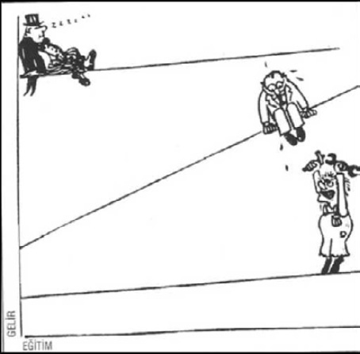
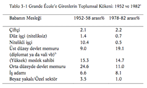

BÖLÜM 3 - ÇATIŞMA KURAMI
Giriş: İki Gelenek
Çatışma kuramı, toplumların genel yapısını çözümleyen bir yaklaşım olarak, işlevselciliğe karşı en önemli seçenektir ve çağdaş sosyolojide gittikçe artan bir beğeni ve öneme sahiptir. Aynı zamanda, bu kitapta tartışılanlardan daha az bütünlüğü olan bir bakış açısıdır ve bu görüşte olanlar arasındaki anlaşmazlık, başka yaklaşımları savunan kuramcılarla olduğundan daha çetindir. Ancak, her tipte çatışma kuramcıları, birtakım önemli kabulleri ve ön yargıları paylaşmaktadırlar. Bunlar hep birlikte dünyaya farklı bir bakışı yaratmaktadır.
Görmüş olduğumuz gibi işlevselcilik, toplumları ve toplumsal kurumları bir arada işleyerek denge yaratan, birbirlerine dayanan kısımlardan oluşan sistemler olarak kabul eder. Çatışmanın mevcut olduğunu reddetmemektedirler: ancak toplumun bunu denetleme yollarını geliştirdiğine ve kendilerinin bunları araştırdıklarına inanmaktadırlar. Çatışma kuramcılarının toplumu kavrayışları ise bundan farklıdır. İşlevselcilerin toplumda karşılıklı bağımlılık ve birlik gördükleri yerde bunlar, toplulukların güç elde etmek için birbirleri ile mücadele ettikleri ve çatışmanın denetim altına alınmasını bir topluluğun geçici bir süre için rakiplerini bastırdığı bir arena görürler. İşlevselciler, örneğin medenî kanunu, toplumsal bütünleşmeyi güçlendiren bir yol olarak kabul ederken: çatışma kuramcıları, bunun, bazı toplulukların diğer bazı toplulukların aleyhine olarak, belli bir düzeni belirleme ve ayakta tutmalarının bir yolu olduğunu düşünmektedirler.
İşlevselciliği anlatmaya başlarken kullandığımız bir modern hava alanı örneğine geri dönecek olursak, bu bakış açısının ne kadar farklı bir görüş getirdiğini anlayabiliriz. İşlevselci bakış açısı hava alanının farklı kısımlarının, sistemi işler hâlde tutmak için nasıl bir arada çalıştığına işaret etmektedir. Çatışma kuramı, işçiler ve yönetim arasındaki rekabet ve her grubun kendi yararına hizmet etmek üzere içinde bulunduğu durum ile ilgilenmektedir. Bir çatışma kuramcısı, hava trafik denetimcilerinin daha fazla görevli ve pahalı ilave donanım istediklerine; pilotların, ücretleri yüksek tutmak için, mesleğe girişi devamlı olarak sınırlamaya çalıştıklarına; taşıyıcı, bakım görevlileri ve temizlikçilerin militan sendikalara üye olduklarına ve bütün bu toplulukların, harcamaları düşük, kârları yüksek tutmak isteyen hava yolları ve terminal yönetimi ile anlaşmazlık hâlinde olduklarına işaret edecektir. Burada, iş birliği ve karşılıklı bağımlılık dengesi üzerinde değil, rekabet eden topluluklar arasında değişen güç dengesi üzerinde odaklanılmıştır.1
Bu genel çatışma yaklaşımı en önemli ve birbirleri ile ilgili üç kabulü içermektedir. Bunlardan birincisi, insanların istedikleri, elde etmeye çalıştıkları, ancak toplumlar tarafından belirlenmemiş olan, ama insanların hepsinde ortak bazı temel çıkarlara sahip olduklarıdır. Çatışma kuramcıları insanlık ile ilgili bu görüşlerinde her zaman çok açık olmamakla beraber, hepsinin eserlerinde bu kabul mevcuttur.
1 Toplumun denge ve çatışma çözümlemeleri arasındaki fark çok eskidir. Daha sonra tartışacak olduğumuz ve başlıca modern kuramcılardan biri olan Ralf Dahrendorf, çatışma kuramı ile ilgili açıklamalarından birini, Pla-ton’un eserlerinde, Platon’un Sokrates’in ağzından dile getirdiği “denge kuramı”na hücum eden ve ünlü bir Yunan sofisti olan Thrasymachus’a yaptırmıştır. Ralf Dahrendorf, “In Praise of Thrasymachus” (Thrasymac-hus’a Övgü), Essays in The Theory of Society (Stanford, Calif: Stanford, University Press, 1968).
İkincisi ve tüm çatışma yaklaşımının en önemlisi, toplumsal ilişkilerin çekirdeği olarak güç’e (power) verilen ağırlıktır. Çatışma kuramcıları her zaman, “güç”ü, yalnız az bulunur ve eşitsizce bölünmüş -ve dolayısıyla çatışmanın bir kaynağı- olarak değil; fakat, esas itibarıyla zorlayıcı olarak da görürler. Bu çözümleme, insanlara az çok güç veren kaynakların dağılımı ile ilgilenmeye sebep olmuştur. Örneğin, her çatışma kuramcısı, beyaz göçmenlerin daha kalabalık, daha zengin oldukları, daha ileri silahlara sahip oldukları için Amerika yerlilerinin başlarına gelenin kaçınılmaz olduğunu kabul edecektir. Bu yüzden, yeni gelip yerleşmeye çalışanlar, bu kuramcılara göre, az bir şey karşılığında toprak ve mâden kaynaklarını ele geçireceklerdir. Çatışma açısından şaşırtıcı olan husus, yeni yerleşenleri, dinsel ve siyasal inançlarının neden durdurmamış olduğu değil, Kı-zılderililer’in neden tümden yok edilmemiş olduğudur.
Çatışma kuramının üçüncü belirgin cephesi, değerlerin ve düşüncelerin bütün toplumun kimliğini ve hedeflerini belirleyen araçlar olmaktan çok, farklı toplulukların kendi amaçlarını gerçekleştirmek üzere kullandıkları silahlar olarak görülmesidir. Çatışma kuramcılarının, özellikle “ideoloji” ve “meşruluk” (legitimacy) kategorileri altında, topluluk çıkarlarının bir tezahürü olarak düşüncelerle ilgili söyledikleri çok şeyler vardır. Örneğin, Birleşik Devletler’in Amerika yerlilerine reva gördüğü muamele, çatışma kuramcılarınca, Amerika’nın “kader” ile ilgili görüşü ve bu kabileleri “uygarlaştırma” ülküsü, insanların kendi çıkarlarına uygun düşünceleri nasıl geliştirdikleri şeklinde yorumlanacaktır.
İki Gelenek
Çatışma kuramının açıklamış olduğumuz temel öğeleri onu savunanların hepsinde ortaktır; ancak, çatışma kuramı, birbirine hiç benzemeyen iki geleneğe ayrılabilir. Bunlar, toplumsal bilim ve çatışmanın bir gün olup da ortadan kalkıp kalkmayacağı hususundaki görüşlerinde birbirlerinden ayrılmaktadır. Bu bölümde her biri ayrı ayrı ele alınacak.
Birinci kuramcılar grubu, toplumsal bilimcilerin, topluma eleştirel bir yaklaşım içinde olmak gibi ahlâksal bir yükümlülüğe sahip olduğuna inanmaktadırlar. Bu grup, çözümlemeyi hüküm vermekten veya gerçeği değer yargısından ayırmayı reddetmektedir: ya da bunların birbirlerinden ayrılabileceğini kabul etmemektedir. Bu kuramcılar, genellikle (ama her zaman değil) prensip olarak, toplumsal çatışmaya yer olmayan bir toplumun var olabileceğine inanırlar. İkinci grup, aksine, çatışmanın kaçınılmaz ve toplumsal hayatın daimi bir cephesi olduğunu kabul eder, aynı zamanda toplumsal bilim sonuçlarının zorunlu olarak değer yüklü olacağı fikrini reddeder. Buna karşılık, doğa bilimlerinde geçerli olan aynı nesnellik kurallarına uyan bir toplumsal bilim kurmakla ilgilenir.
Marxizm ve yeni Marxizm’i, Frankfurt Okulu kuramcılarını ve C. Wright Mills ve Pierre Bourdieu’yü tartışacak olduğumuz birinci gruptakilerin en çok Karl Marx’ın eserlerinden etkilendiklerini göreceğiz. Ralf Dahrendorf, Lewis Coser ve Randall Collins’i göreceğimiz ikinci grupta, Marx’ın etkisi hâlâ belirli olmakla birlikte, en önemli kalıcı iz Max Weber’in çalışmalarının uzantısıdır. Böylece, şimdi, bu iki klasik düşünce mensuplarının eserlerinde modern çatışma kuramının köklerini ve Veblen, Schumpeter, Simmel gibi Avrupalı “seçkin” (elite) kuramcılarının etkileri ile Chicago Okulu Amerikan sosyologlarını inceleyeceğiz.
Entelektüel Kökler - Güç, Mevki ve Meşruluk: Marx ve Weber
Çatışma kuramının temel öğeleri, ilk sosyologların en büyüklerinden Karl Marx ve Max Weber tarafından konulmuştur. Weber’in çalışmalarının büyük bir kısmını, Marx ve Marxist çözümlemenin tartışması teşkil eder; ancak biz bu iki yazarda da aynı iki ilgiyi bulmaktayız: birincisi, toplumsal mevkilerin, bu mevkilerde bulunanlara az veya çok güç (power) sağlaması; ve ikincisi, bir toplumsal mev-kinin (konum-position) meşrulaştırılmasında veya önemini kaybetmesinde düşünce ve fikirlerin rolleri.
Karl Marx (1818-1883): Sosyolojide çatışma kuramı Karl Marx tarafından yaratılmıştır: hattâ Marxizm ile çatışma kuramı bazen aynı anlamda olarak tartışılmıştır. Bir kuramcının fikirleri ile “gerçek dünya”daki olaylar arasında bulunan yakın bağlantıya Marxizm’den daha iyi bir örnek yoktur; çünkü, dünyanın her yerinde devrimciler mevcut toplum şekillerine Marx’ın fikirleri adına hücum etmektedirler ve örgütlenmiş Komünist partileri dünyanın büyük bir kısmına hükmetmişlerdir.
Karl Marx 1818’de Almanya’da Trier’de doğdu. Ebeveyni ayırımcılıktan kaçınmak ve yurttaşlık haklarından yoksun kalmamak, özellikle de babanın avukatlığa devam edebilmesini sağlamak için Yahudilik’ten Protestanlığa dönmüştür. Marx aynı zamanda hukuk okumaya başladı. Ancak, Berlin Üniversitesi’nde, bütün tarihi “Ruh” (Spirit)’un (dolayısıyla insanlığın) kendi kendini bilmeye ve akılcı ve özgür bir topluma doğru ilerlediği bir süreç olarak yorumlayan He-gel’in felsefesinin çekiciliğine kapıldı. Marx, genç bir Hegelci olarak, üstadın yaklaşımına bağlılıklarını kaybetmeden, görüşlerinin birçok yönlerini soruşturan genç felsefecilerden biri oldu. Daha sonraki yıllarda Marx kendi yazılarına Hegel’inkilerin tersine olarak, He-gel’in tarihin en önemli etkileyicisi kabul ettiği “akıl”a verdiği ağırlığın yerine olayların maddi etkenler tarafından tayin edildiğini gösteren kendi materyalist felsefesini koydu. Aynı zamanda din karşıtı bir radikal hâline gelerek, tezini tamamladıktan sonra, Paris ve Belçika’da siyaset yazarı olarak çalışmaya başladı. Bu süre içinde, devrimci bir hükümet programı ve toplumsal yapı ve toplumsal değişim kuramını belirleyen The Communist Manifesto (Komünist Bildir-ge)’yu yazdı. 1848’de Almanya’da devrim olduğunda, radikal bir gazetenin yayımcılığını yapmak üzere döndü. Devrim başarısız olunca, yine sürgüne, ömrünün sonuna kadar kaldığı Londra’ya gitti.
Bu sürenin büyük bir kısmında Marx ve ailesi çok fakirdi; sosyalist bir tekstil üreticisi olan arkadaşı Friedrich Engels’in yardımları hayati önem taşıyordu. Buna rağmen, kuramları özellikle İngiltere’ nin dışında giderek daha iyi tanınmaya ve etkili olmaya başladı. Rus ve Alman radikalleri ve devrimcileri tarafından görüşlerine sık sık başvuruluyordu ve ölümünden sonra bütün dünyada komünist partiler gelişti. Bu partilerin dogmaları, Marx ve ilk başarılı Komünist devrimine önderlik eden Lenin’in çözümlemelerinden oluşur.
Birçok yazar, çağdaş toplum çözümlemelerinde hâlâ Marx’ın eserlerini kullanmakta olduğundan, bu konuyu daha ileride, bölüm içinde ayrıntılı olarak ele alacağız. Kuşkusuz, çoktan ölmüş olan birçok başka yazarın fikirleri de çağdaş çözümlemeler için gereklidir. Ancak, Marx’ın çalışmaları daha farklıdır; çünkü Marx’tan yalnız alıntılar yapmakla kalmayan, Marx’ın yarattığı çerçeve içinde yer alan çözümlemeler yapan Marxçı sosyologlar bir okul oluştururlar. Dolayısıyla, bu anlamda Marxçılık tamamıyla çağdaş bir kuramdır.
Çatışma kuramının temel öğeleri Marx’ın eserlerinde çok açıktır. Marx, ilk olarak, insanların belli bir tabiata ve önceden belirlenmiş çıkar duygularına sahip olduklarına inanır. Marxçılar, insanlar çıkarlarına göre hareket etmedikleri takdirde; bunun, başkalarının lehine işleyen bir toplumsal sistem tarafından, kendi “gerçek çıkarları”nın ne olduğu hakkında aldatılmış oldukları anlamına geleceğini iddia ederler. İkinci olarak, Marx, tarihsel ve çağdaş toplumu, farklı çıkarlara sahip farklı toplumsal kümeler arasındaki çatışmalar açısından inceler. Son olarak, Marx, fikirler veya “ideoloji”lerin yapısı ile bunları geliştiren ve yayanların çıkarları arasındaki bağlantıyı vurgular; ve bir dönemde geçerli olan fikirlerin “egemen sınıf’ın çıkarlarını yansıttığı üzerinde ısrar eder.
Marx, teknoloji ve mülk sahipliği örüntülerinin, insan hayatı ve toplumsal çatışma yollarını belirleyen önceliği vurgular. Marx ve daha az ölçüde diğer “eleştirel” çatışma kuramcıları, bu öğelerin ağırlıklı olduğuna inanırlarken, Weber’den bu yana başka çözümle-meciler, bunları kısmen açıklayıcı olarak görürler. Bu iki yaklaşım arasındaki bölünme Marx ve Weber arasındaki temel farklılıklardan ileri gelir.
Max Weber (1864-1920): Max Weber, meşhur bir Alman burjuva ailesi içinde doğmuştur. Babası Reichstag (parlamento)’da yeri olan Nasyonal Liberal Parti’nin önemli bir üyesi idi; annesi zengin ama çok dindar ve kültürlü bir çevreden geliyordu. Weber’in anne ve babasının evliliği bu yüzden bir gerilim öğesi içeriyordu. Weber genç iken babası ile özdeşleşmiş, ama, mali yönden hâlâ bağımlı ve ailesi ile bir arada oturduğu öğrencilik sonrası yıllarda, yaşlı adama ve onun otoriter davranışlarına karşıt duygular beslemeye başlamıştı. Weber’in otuzlu yaşlarının ilk yıllarında geçirdiği ağır çöküntüde bu çatışmaların önemli rolü olmuştur.
Bu dönemden önce ve sonra, Weber, hem entelektüel çalışmalarında hem de siyasal etkinliklerinde çok üretken olmuştur. Freiburg ve Heidelberg üniversitelerinde kürsü sahibi olmuş; ekonomi politikası, siyasal gelişmeler, sanayide toplumsal psikoloji, din sosyolojisi, ekonomi tarihi ve toplumbiliminde metodoloji gibi konular üzerinde eserler üretmiştir. Aynı zamanda, güncel sorunlar ile ilgili yazılar yazarak Hıristiyan toplumsal/siyasal çevrelerde önemli rol oynamış -tır. Bu dönem boyunca evi Alman entelektüel hayatının bir merkezi olmuştur.
Weber’in hayatının son yılları Birinci Dünya Savaşı, Alman yenilgisi, ihtilal ve ülkede sivil savaş ve Alman Cumhuriyeti’nin kuruluş yılları olmuştur. Bu dönemde Weber politika ile çok yakından ilgilidir. İlk başta savaşı destekledikten sonra, barış girişimlerini teşvik etmiş ve Alman siyasal yapısında geniş değişiklikler istemiştir. Alman Demokratik Partisi’nin kurucu üyesi olup, yeni anayasanın kaleme alınmasına katılmıştır. 1918’de sonuçsuz kalan ihtilâle “kanlı karnaval” dediği için, sol kanat tarafından hiç affedilmemiş ve bu durum onun hükümete katılması ya da cumhurbaşkanlığı için aday olması ile ilgili teklifleri sonuçsuz bırakmıştır.
Bütün hayatı boyunca politika ile entelektüel düşünce arasındaki ilişkiye ilgi duymuş olmakla birlikte, ütopyacı peygamberlik özelliği yoktu. Marx gibi Weber de, modern toplumun kökeninin temel özelliklerini belirlemek istemiş, ama modernleşmeyi mükemmelliğe giden yol olarak görmemiştir. Aksine, ona göre, modern akılcılık, “memnuniyetsiz” bir bürokratik memur sınıfı yaratan dar bir “demir kafes” olabilir.
Weber’in çözümlemeleri karmaşık olup, kategorilere ayrıştırılması güçtür ve dünya üzerinde Marx gibi etkili olamamıştır. Ancak, Marx-çı olmayan entelektüellerin büyük bir bölümü onu en büyük sosyolog olarak belirleyeceklerdir ve fikirleri, “çözümlemeci” çatışma kuramı üzerinde en önemli tek etkendir.179
179 Weber de Marx gibi insanlarda duyguları tahrik etmeye devam etmektedir. Raymond Aron, Weber’in doğumunun yüzüncü yılını kutlamak üzere Hei-delberg’de toplanan bir konferansı şöyle anlatır. Bu toplantıda duygular coşmuş ve daha sonra tartışacağımız bir eleştirel sosyolog olan Herbert Marcu-se, Weber’in sosyalist ütopyacılığa olan inançsızlığına ve düşmanlığına şiddetle hücum etmiştir. Raymond Aron, Main Currents in Sociological Tho-ught 2 (Harmondsworth, middlesex: Penguin Books, 1970), s. 252-56.
2Weber de, Marx gibi, insanların etkinliklerinin büyük ölçüde kendi çıkarlarına dayandığına inanır. Bununla birlikte, bir tarihçi veya toplumbilimcinin, servet edinmek gibi evrensel olan çıkar düşüncelerine ilave olarak, belli bir topluma özgü hedef ve değerlerin önemini anlaması gerektiğini düşünür. Örneğin, Calvinciler’in kendi ruhlarını kurtarmak arzularının, servet edinme hedefinde ifadesini bulduğunu söyler. Bu, Tanrı’nın bir lütfunun işareti olarak görülmektedir; ama bu servetin meyvalarından faydalanmak günahkârlık olarak sayıla-caktır.180
180 Weber, farklı toplumsal eylem tipleri arasında ayırım yapar, bunların bir kısmı, burada verilen anlama göre “rasyonel” veya hesaplanmış değildir. Weber’in eylem ile anlam arasındaki ilişki konusunda fikirleri için Bölüm 5’e bakanız.
Weber, genel toplumsal kategoriler bakımından belirgin hedefler ve değerler çerçevesinde insanların kendi çıkarları için düzen kurma biçimini incelemiştir. Çeşitli somut örneklerden bir kavramın kendine özgü ya da gerekli özelliklerini çıkararak “ideal tipler” geliştirmiştir. Gerçek hayat örneklerinin stilize edilmiş ideal tipe tam olarak uyması gerekmiyordu: sözgelişi, her hususta Weber’in modeline uyan bürokrasi örnekleri imkânsız olabilir. Ancak, tarihsel ve çağdaş olayları anlaşılabilir hâle getirmekte bir ideal tip önemlidir. Örneğin, Weber, modern bürokrasilerin vazgeçilmez öğesinin, yazılı belgeler ve memurların ne yapmaları ya da yapmamaları ile ilgili sabit kurallar olduğunu belirtir. Amerikan ve Çin bürokrasileri, her ülke arasındaki bazı genel farklılıklardan dolayı birbirlerinden ayrılır. Ama her ikisi de ideal bürokratik tip (model) olduğuna göre, bunların halkla ilişkiler dâhil, önemli noktalarda aynı oldukları görülecektir.
Weber güç ile ve bazı insanların diğer insanlar üzerinde egemenlik kurma yolları ile çok ilgilenmiştir. Meşru olmayan egemenlik ile, yetkiye sahip, ve bazı insanların kendilerine itaat edilmesinde hak iddia etmelerini ön gören meşru egemenliği birbirinden ayırır. Egemenliğe başarılı olarak sahip çıkmanın başlıca üç temeli -veya üç “ideal tipi” vardır.
Karizmatik egemenlik bir liderin kişisel niteliklerine dayanır; şöyle ki, “yönetilmekte olanlar, belirli bir kişi’nin üstün niteliğine inandıkları için boyun eğerler... Böylece karizmatik egemenliğin meşruluğu, sihirli güçler, vahiy ve kahramana duyulan aşırı saygıya dayanır.181 İsa’nın müritleri onu bir mevki sahibi olduğu için değil, kendisi için takip etmişlerdir.
181 From Marx Weber: Essay in Sociology, H. H. Gerth ve C. Wright Mills’in giriş yazıları ve yayına hazırladıkları baskı (London: Routledge and Kegan Paul, 1970), s. 295-96.
Geleneksel egemenlik de kişiseldir, fakat geçmişten intikal ettiği için sürer. Bir kral veya kabile reisi kişi olarak kabiliyetli veya etkili olmayabilir, ancak geleneksel olarak meşru bir otoriteye sahiptir. Weber şöyle der, genellikle “meşruluğu geleneğe dayalı olan ataerkil-lik en önemli egemenlik tipidir. Ataerkillik babanın, kocanın evin büyüğünün... efendinin, ev hizmetkârlarının ve görevlilerinin patronunun... babadan intikal eden lordluk ve hükümran prensin hakimiyeti demektir.182
182 From Marx Weber, s. 296.
Son olarak, rasyonel-yasal egemenlik resmî kurallardan doğar. Böylece, modern bürokratlara, statüleri onlara bazı şeyler yapma yetkisi verdiği için ve bizim toplumlarımız nihai egemenlik kaynağı olarak hukuka uygun yasaları kabul ettiği için, itaat edilir. Weber’e göre, meşruluğun özelliği olan kurallara bağlanması, modern toplumun her şeyi akla ve mantığa dayandırma eğiliminin esasını oluşturur.
5Weber, Marx’ın insan davranışının arkasında bilinmese bile, çok zaman ekonomik çıkarlar olduğu görüşüne karşı değildir. Ancak, ekonomik nitelikleri toplumsal yapının ve insanın hayattaki şanslarının tek en önemli belirleyici etkeni olarak tanımlamasında Marx’ın yanıldığına inanır. Ona göre, insanın dini, eğitimi ya da politik grubu, onun için bir başarı ve erk kaynağı olabilir. Marx’ın sınıf kategorisine dayanacak yerde, Weber, hepsi de insanların hayatında az çok önemli olan, topluluk örgütlenmesinde ve çatışmada odak noktası olarak hizmet gören sınıflar, statü grupları ve partiler arasında ayırım yapmıştır.183 Weber bir sınıf ile, Marx’ın tanımına göre, ister mülkiyet ister pazarlanabilen beceriler olsun, ekonomik hayatta aynı mevkii paylaşan insanları kastetmektedir. Bir parti, “hukuken birleşmiş bir topluluk içerisinde, aktif üyelerine ideal veya maddi faydalar temin için liderlerine güç sağlamak üzere” var olan bir topluluktur.184 Buna örnekler, modern devlette iktidar olmak isteyen siyasal partileri olduğu gibi, Roma’nın veya İtalyan şehir devletlerinin denetimi için mücadele eden bölücü toplulukları da içerir. Son olarak, Weber’in “bir kimsenin bulunduğu yer” (Stânde) terimi karşılığında tercümede kullanılan statü grupları, ekonomik mevkilerine göre değil, genellikle ortak bir eğitime sahip olarak paylaştıkları hayat biçimi veya tevârüs edilmiş olan aristokrasi gibi doğuma ve aileye bağlı saygınlığa dayalıdır.185
183 Weber, The Theory of Social and Economic organization, A.M. Henderson ve Talcott Parsons tercümesi (New York: The Free Press, 1964), s. 407-12, 424-29.
Weber’in bu görüşlerinin, kendisi gibi insanların hayatlarında ve güç (power) için tayin edici en önemli etkenlerin ‘ekonomik etken’ olduğuna inanmayan “çözümlemeci” kuramcılar üzerinde etkileri büyüktür. Bu kuramcıların fikirler ve güç arasındaki ilişki ile ilgili tartışmalarında onun etkisi belirgindir. Burada Weber’in Marx’tan farklı olarak, fikir ve değerlerin tarih üzerinde önemli ve bağımsız etkileri olduğuna (Calvincilik ve Konfüçyüsçülük gibi), ancak bunların yalnızca çıkar duygularının yansımaları olmadığına inandığını vurgulamak önemlidir. O, aynı zamanda bunların, bir toplumsal kümeyi veya belirli bir toplumsal sınıf/tabaka konumunu güçlendirmek ve garantilemekte oynayabilecekleri rolün farkındadır. Özellikle, o, bir kimsenin konumunun ve bunu içeren sistemin doğru ve uygun olduğuna dair inanç demek olan “meşruiyet”in önemini vurgulamıştır. Bu kavram, bölüm 4’de tartışılan modern çatışma çözümlemesinde sık sık karşımıza çıkmakta ve bu çözümlemede çok etkili olmaktadır.
Güç, Seçkinler ve Sınıflar
Çatışma kuramının başlıca öğeleri, Marx ve Weber tarafından belirlenmiş olmakla birlikte, başka kuramcılar da günümüz çözümlemeci-leri üzerinde önemli etkileri olan benzer fikirler geliştirmişlerdir. Bunların en önemlileri “seçkin” kuramcıları (Pareto, Mosca ve Mic-hels) ile Thornstein Veblen’dir.
8Seçkinler Kuramı: En ünlü seçkin (elite) kuramcıları, Weber’in çağdaşı olan Vilfredo Pareto (1848-1923), Pareto’nun büyük rakibi Gaetano Mosca (1858-1941) ve Weber’in arkadaşı Robert Michels (1876-1936)’dir. Bunlar bir okul oluşturmamış olsalar bile, birtakım önemli düşünceleri paylaşmışlardır.186
186 Vilfredo Pareto, The Treatise on General Sociology (New York: Dover 1963), Robert Michels, Political Parties: A Sociological Study of Oligarchi-cal Tendencies of Modern Democracy, terc. Eden and Cedar Paul (New York: The Free Press, 1949): Gaetano Mosca, The Ruling Class, (New York: McGraw-Hill, 1960). Yukarıda Parsons üzerindeki etkisini görmüş olduğumuz Pareto’da, seçkinler kuramı, çalışmalarının ancak ufak bir kısmını teşkil etmektedir.
Esas iddiaları, herhangi bir örgütte, ancak az sayıda insanın otorite sahibi olabileceği ve bu mevkilerde bulunmalarının onları, bu otoriteye maruz kalan kişilerle otomatik olarak karşı karşıya getirdiğidir. Bundan başka, bu kuramcılar, bu seçkinlerin genel olarak ortak bir kültüre sahip olduklarını, kendi mevkilerini korumak ve kendi kişisel çıkarları için kullanmak üzere -resmî değilse bile- örgütlenmiş olduklarını iddia ederler. Başka bir deyişle, seçkinler kuramı, insanların kişisel çıkar duyguları ve gücün eşitsiz olması dolayısıyla çatışmanın hem kaçınılmaz, hem de sürekli olduğunu ifade etmektedir.
Michels, esas itibarıyla, oligarşinin demir yasası yani yetki sahibi küçük toplulukların, siyasal partileri kendi çıkarları doğrultusunda kullandıkları önermesi ile ilgilenir. Mosca, siyasal güç sahibi kişilerle, egemen oldukları kişiler arasındaki çatışma ile ilgilenir. Mosca, Marx’a karşı, ekonomik alan dâhil, her alanda, egemenlik kaynağının siyasal mevkiler olduğunu belirtmiştir. Buna karşılık, Pareto, siyasal olmayan başka seçkinlerin var olduğunu kabul etmiş, ama topluma egemen olan “yöneten seçkinler” in varlığı üzerinde durmuş, egemen olan ve bunlar tarafından yönetilen sınıfların birbirleri karşısında yabancı düşman gibi olduklarını vurgulamıştır. Seçkin kuramcılarının egemenliğe verdikleri önem ve devleti egemen güç kaynağı olarak görmeleri, özellikle Dahrendorf gibi modern çözümlemeci kuramcıları çok etkilemiştir. Toplumu seçkinler ve kitle olarak ikiye bölünmüş kabul etmeleri, C. Wright Mills’in toplumsal eleştirisinde de görülmektedir.
Thornstein Veblen (1857-1929): Modern çatışma kuramı içerisinde Veblen’in önemi, güç ve çatışmayı geniş bir tarihsel çerçeve içerisinde inceleyen çok az sayıda Amerikan sosyologlarından biri olmasından ileri gelmektedir. İlk Amerikan sosyologları, esas olarak görgücü (empiricist) ve yararcı (pragmatic)’dır. “Sosyolojinin, ‘sosyalizmsiz’ uygulandığı” deyimi ancak Amerika için söylenebilir.187 Buna karşılık, etkileri çok yaygın olan Lester Ward gibi Amerikan sosyologları, “toplumsal sorunlara”, hükümet politikalarına ve reformların tedrici olmasına inanan reformcular gibi yaklaşmaktadır-lar.188 Tam tersine Veblen, toplumu farklı toplumsal grupların çatışan çıkarları açısından incelemiş ve kurulu düzenin büyük bir kısmını şiddetle reddetmiştir. Modern kuramcılar arasında bu geleneği C. Wright Mills devam ettirmiş ve statü mücadeleleri ile ilgili tartışmalarında doğrudan doğruya Veblen’den yararlanmıştır.
187 A. Solomon, The Tyranny of Progress, (New York: Noonday Press, 1955), s. 22 İngiltere, Amerika’ya göre daha açıkça, Avrupa’ya oranla daha az ideolojik olarak Amerika ile Avrupa arasında yer almaktadır.
188 E. A. Ross gibi devrin “radikalleri” Amerikan kampüslerinde kariyer yapma imkânını çok güç bulmuşlardır.
Veblen, Marx gibi, modern toplumun özelliğinin birbirine karşıt olan “ekonomik” toplulukların çatışması olduğuna inanır: ona göre, bu topluluklar, mal üreten sanayi sınıfı ile, toplum nüfusunun geri kalan kısmının yaratıcılığı ve üreticiliğinden faydalanan asalaklar gibi finans ve satış işleri ile ilgilenen para sınıfıdır.189 Veblen, aynı zamanda, toplumsal davranışın altındaki insan tabiatının değişmez özellikleri ile ilgilenir. İnsanların başkalarının saygısına çok ihtiyaç duyduklarını, ve herkesin yüksek mevki (high status) sahibi olması mümkün olmayacağına göre, gerçekte değer vermenin, esas itibarıyla rekabete dayalı olduğunu söyler. Veblen’e göre, insanların özellikle tüketim ve boş zamanları değerlendirme üsluplarını içeren davranışlarının büyük bir kısmı, insanın komşusunun gözünde saygıya değer olma çabası ile açıklanabilir.
189 Thornstein Veblen, The Theory of the Leisure Class (New York: Modern Library, 1934).
Çatışma Ağı: Simmel ve Chicago Okulu
Yukarıda gördüğümüz, çatışma çözümlemesinin esas geleneğinin yanında, farklı bir inceleme yaklaşımı vardır. Bu yaklaşım, Simmel ve Chicago Okulu’nun yazılarında görülebileceği gibi, çatışmaların kökeni ve gelişiminden çok, toplumsal düzenin soyut özelliklerine ağırlık vermektedir.
Georg Simmel (1858-1918): İlk büyük toplumbilimcilerden olan Simmel, en çok, insan davranışının evrensel kalıplarını saptamakla ilgilendi. Marx ve Weber’in belirli bir toplumun işleyişini anlamak istemelerine karşılık; Simmel, çalışmalarını neredeyse bir toplum matematiği geliştirme üzerinde yoğunlaştırdı: tarihsel çerçeveyi göz önüne almaksızın insan ilişkileri ve toplumsal davranış hakkında bir ifadeler derlemesi. O, bazı çatışma kuramcılarını, simgesel etkileşim-cileri, alışveriş kuramcılarını ve ağ (network) çözümlemecilerini de içine alan kişiler arası ilişkilerle ilgilenmekte olan büyük çapta modern kuramcıları etkilemiştir.190
190 Bkz. bu kitapta, s. 187, 269, 406.
Simmel’in, insan ilişkilerinin nasıl oluştuğu ve geliştiğine duyarlılığı, kendi ortamı ve köksüzlük ve güvensizlik duygularıyla bağlantılıydı. Berlin’de doğdu: Hıristiyan olmuş bir Yahudi iş adamının en küçük çocuğu idi. Simmel daha çocukken babası öldü ve hiçbir zaman annesine yakın olmadı. Berlin Üniversitesi’nde tarih ve felsefe öğrenimi gördü ve orada öğrencilerin ödediği ücrete bağlı, aylıksız bir hoca, Privatdozent olarak kaldı. Dersleri aşırı derecede revaçta idi. Çok sayıda yayım yaptı. Weber dâhil, zamanın en önde gelen akademisyenleri ve yazarları arkadaşları arasında idi. Alman üniversitelerinde daha yüksek konumlara başvurmasına rağmen, kısmen Yahudi düşmanlığı yüzünden, kısmen de çalışmalarında tek bir akademik disiplinde kalmayı kabul etmediğinden, başvuruları geri çevrildi. Ancak 1914’de, elli altı yaşında Strasbourg Üniversitesi’nde bir kürsüye atandı.
Daha sonraki çatışma kuramı için Simmel’in çözümlemesinin en önemli tarafı, birleşmiş olan ve çatışma durumunda olan kişiler ve toplumsal grupların sadece bir arada bulunabilecekleri değil, bunların birbirleri ile çok yakından ilişkili oldukları üzerinde ısrar etmesidir. Hiç kimse, ortak çıkarlara sahip olan, kendi kendine yeterli dost topluluklar ile kendi kendine yeterli, farklı ortak çıkarlara sahip hasım toplulukları birbirinden net olarak ayıramaz. Marx”ın görüşüne göre, toplum yatay olarak düşman bloklara bölünmüştür; Simmel’e göre ise, bir bakımdan bir arada olanların bir başka bakımdan birbirlerine karşı oldukları ve birbirleri ile kesişen birçok çatışma ile bütünleşmiş bir toplum söz konusudur.
Simmel’in, “toplumsal eylemin daima uyum ve çatışma, sevgi ve nefret”191 içerdiği hususundaki ısrarı, çözümlemeci çatışma kuramcılarının, çatışmayı sürekli bir durum olarak kabul etme eğilimlerini fazlası ile güçlendirmiştir. Aynı zamanda, onları toplumsal temasın ve karşılıklı bağımlılığın farklı derecelerinin çatışma ve sonuçları üzerinde etkili olduğu konusunda da uyarmıştır. Örneğin Lewis Coser’ ın, çatışmanın toplumu nasıl istikrara kavuşturabildiği ile ilgili görüşleri, doğrudan doğruya Simmel’in yazılarına dayanır.
191 Lewis A. Coser, Masters of Sociological Thought: ldeas in Historical and Social Context (New York: Harcourt, Brace, Jovanich, 1971), s. 184-85.
14Robert Park ve Chicago Okulu: Çatışmanın, toplumsal hayatın genel ve soyut bir ilkesi olarak vurgulanması, Avrupa sosyolojisinden çok, Amerikan sosyolojisinin özelliğidir. Okul içi öğrenimi sadece Berlin’de Simmel’in derslerinde gören Robert Park (1864-1944), şehir toplumsal hayatı ve kültürü araştırmaları ile şöhret bulmuş olan Chicago Sosyoloji Okulu’nu kurmuştur.192 Park, aynı zamanda, kendisine göre, toplumsal hayatın başlıca özelliklerini tanımlayan bir genel kavramlar sistemi de kurmuştur. Bunlar; rekabet, çatışma, uzlaştırma ve bir ortak kültürde özümsemedir.193 Park, bireyler arasında evrensel ve sürekli olan rekabetin, bireysel meslekleri belirlediğini iddia eder. Çatışma, mevki ve gücün toplumsal olarak tahsis şekli üzerindedir. Çatışma, böylece, hem toplulukları hem de bireyleri içine alır. Park ve arkadaşları, içinde bulundukları toplumlar, ırk ve kültür bakımlarından daha homojen olan, Marx ve diğer Avrupalılarca vurgulanmış olan sınıf çatışmasından çok, ırka dayalı düşmanlık ve farklı etnik topluluklar arasındaki çatışma ile ilgilenmişlerdir. Bu oldukça farklı gelenek, Amerikan çatışma kuramcılarının en önemlilerinden biri olan Lewis Coser’ın çalışmalarında görülmektedir.
192 Bu, Bölüm 5’te tartışılacak olan simgesel etkileşimcilik tarafından geliştirilmiş olan yaklaşım gibi, insanların kendi durumlarını nasıl tanımladıklarını anlamanın vurgulandığını göstermektedir.
193 Robert E. Park ve Ernest W. Burgess, Introduction to the Study of Society (Chicago: The University of Chicago Press, 1921).
Özet
Modern çatışma kuramı üzerinde en önemli tarihsel etkiler, Karl Marx ve Max Weber’in yazılarıdır ve çağdaş kuramcılar bu etkilerden hangisinin daha fazla olduğuna göre iki gruba ayrılırlar. Aynı genel çatışma bakış açısını paylaşan başka birkaç sosyolog da modern kuramı etkilemiştir; ve özellikle Amerikan sosyolojisi, Simmel’ den kaynaklanan farklı bir geleneğin etkisi altında kalmıştır.
Kısım Bir Çatışma Kuramı ve Toplumun Eleştirisi
Bu kısımda, Marx ve çağdaş Marxçı sosyologların çatışma kuramı ile Frankfurt Okulu çözümlemecileri, C. Wright Mills ve Pierre Bour-dieu üzerinde durulmuştur. Bu kümedeki bütün yazarlar, toplumsal bilim görüşleri ve seçkin (exclusive) kümeler içinde hiyerarşik olarak bölünmüş toplum tasavvurları (image) dolayısıyla ayırt edilirler. Çoğu, ideal bir toplum düzeninin mümkün olduğuna da inanır. Genellikle, biz bunlardan “eleştirel kuramcılar” olarak söz ederiz: çünkü bunlar, toplumu ve özellikle “egemen sınıf”ı, “güç seçkinleri”ni veya “kurum” adını verdikleri oluşumu eleştirmek için toplumsal bilimi kullanmaktadırlar. Ancak, eleştirel kuram daha dar anlamda, Frankfurt Okulu’nun çalışmaları için de kullanılmaktadır.
Eleştirel çatışma kuramcıları, toplumsal çözümlemecilerin, çalışmalarını ahlâksal yükümlülüklerinden ayırmamaları gerektiğine inanırlar ve kuramlarını, aynı zamanda, değişim ve ilerleme için itici bir kuvvet olarak görürler. Nesnelliğin (objectivity) hemen hemen imkânsız olduğuna da inanırlar. Onlara göre, toplumsal bilim, yazarın ait olduğu toplumun işlevleri olan, özel görüşleri ve algılamaları ile birbirinden ayrılamayacak şekilde iç içedir. Yani, yazarların yazılarında kendi değerleri ve nedenleri ne olursa olsun, kuramlarının hayattan alınmış kanıtlara dayalı olup olmamasına göre değerlendirildiği bilimsel görüşü reddederler. Aynı zamanda, “eleştirel” çatışma kuramcıları, kendi değer ve standartlarının doğruluğundan ve dolayısıyla toplumsal eleştiriye gerekçeli bir zemin teşkil ettiğinden emindirler.
Eleştirilerin esas odak noktası, toplumda servet, mevki ve gücün dağılım şeklidir. Bu tür kuramcılar genellikle toplumu oldukça belirgin bir şekilde güçlü ve ayrıcalıklı bir küçük topluluk ile, sömürülen ya da amaca göre kullanılan (manipulated) bir kitleye bölünmüş olarak görürler. Yine, onlar, toplumsal yapıyı tek nedenli bir kuramla açıklamak ve insanların maddi durumunun çok zaman mülkiyet olarak belirledikleri bir kurumlar takımı tarafından tayin edildiğine inanmak eğilimindedirler. Toplumun çok bölünmüş olması ve eşitsizlikler içermesi gerektiğine de inanmazlar. İnceledikleri toplumu, işlerin daha düzenli olduğu durumlarla karşılaştırarak, insan gelişmesinin engellenmiş olduğu “mantık dışı” şimdiki zamanı, insan potansiyelinin gerçekleştiği ideal ve “mantıklı” bir durum ile mukayese ederler. Onların, mutlak olarak geçerli kabul ettikleri değerlere dayalı bu toplum “görüşleri (vision) ve yine onlara göre “gerçek” insan tabiatı kavramları, mevcut toplumlara yönelttikleri eleştirilerin başlangıç noktalarıdır.
Bütün bunlarda hâkim etken Marx’dır. Fikirlerin, toplumsal şartların ürünü ve dolayısıyla da objektif olarak doğru olmadığı iddiası Marx’a aittir. Bundan başka, Marx, kendi kuramının ideoloji olarak itham edilemeyeceğine ve aksine “objektif olarak doğru” olduğuna inanmakla birlikte, eserlerini, proletaryayı kaçınılmaz bir zafere götüreceğine inandığı düşüncelerinin bir ifadesi, bir siyasal ve ahlaksal eylem biçimi olarak kabul etmektedir. Marxçılar, böylece kuramsal düşüncelerden, daha doğrusu devrimci bilinçten kaynaklanan eylemleri ifade etmek için praxis terimini kullanırlar. Ayrıca, Marx, mülkiyet esasında baskı yapanlar ile baskıya maruz kalanlar arasında bölünmüş iki sınıflı bir toplum modeli çizmiş ve insanlığın esas tabiatını gerçekleştireceği bir komünist ütopia beklentisi getirmiştir.
Bu tür çatışma kuramı Avrupa’da ve özellikle Batı Avrupa’da geliştirilmiştir. Komünist ülkelerde, Marxçılık veya Marxçı-Lenincilik esas itibarıyla eleştirel çözümlemeye ve geliştirilmeye açık olmayan bir devlet dini olarak kabul edilmiştir. Bu gibi çözümlemelerle uğraşan Leszek Kolakowski gibi toplumbilimciler ve siyaset kuramcıları sürgün olmaya mecbur bırakılmışlardır.194 Buna karşılık, Batı Avrupa’da aydınlar, Marx’dan büyük ölçüde etkilenmeye devam etmişlerdir. Örgütlenmiş komünist partiler, İtalya’da Antonio Gramsci gibi bazı önemli Marxçı kuramcılar çıkarmış olmakla beraber, onlar da doktrin yönünden esaslara sadık kalmakta ısrar etmişlerdir; ve modern eleştirel çatışma kuramının başlıca kaynağı, parti hiyerarşilerinin dışındaki Marxçı aydınlardır.
194 Avrupa’nın modern siyasî filosoflarının en önemlilerinden biri olan Kola-kowski, 1966’da Komünist Partisi’nden atılmış ve 1968’de Varşova Üniversitesi Felsefe Bölümü’nden ayrılmaya mecbur olmuştur. Marxçı doktrinleri yeniden incelemek suretiyle gençliği ifsad etmek ile itham edilmiştir. Hâlen Oxford’da All Souls’ College’da “fellow” olarak (öğretim görevlisi gibi) bulunmaktadır.
Amerika’da 1930’larda ve 40’larda, entelektüel hayatta kuvvetli bir Marxçı ve Komünist öge vardır. Ancak (Norman Birnbaum ve Paul Sweezy gibi) birtakım sosyolog ve iktisatçılar, Marxçı kategorileri kullanmaya devam etmiş olmakla beraber; ikinci Dünya Savaşı’nı takip eden yirmi yıl içinde, Marxçı çözümlemenin Amerikan sosyolojisi üzerindeki doğrudan etkisi az olmuştur. Bu süre içinde, Marx’ dan çok etkilenmiş olan, ama açık anlamda Marxçı olmayan ve en yaygın olarak tanınan etkili “eleştirel” sosyolog C. Wright Mills’tir. Vietnam döneminde birçok genç Amerikan sosyoloğu Yeni Sol içerisinde yer almış, özellikle Marx ve birtakım radikal yazarların etkisi altında kalmışlardır. Sonuçta hem Frankfurt geleneğindeki “eleştirel sosyoloji” hem de diğer Marxçı ve Yeni-Marxçı eserler, Amerikan sosyolojisinde daha iyi tanınmaya ve etkili olmaya başlamıştır. Özellikle bu yaklaşıma ayrılmış olan Marxçı dergiler çıkarılmaya başlan-mıştır.195
195 1960’ların ortalarından sonlarına kadar, Marx’tan en çok etkilenen toplumbilimciler henüz kolej öğrencisi idiler. Michael Burawoy ve Theda Skoc-pol, ed., “Marxist Inquiries: Studies of Labor, Class and States”, American Journal of Sociology Cilt 88’in Ek’ine bakınız.
Marxçı ve Yeni Marxçı Toplumbilimi
Bu bölümde Marx’ın kendi çözümlemeleri ile daha sonraki Marxçı bilim adamları kısmen ayrıntılı olarak tartışılacaktır. Önce de belirtmiş olduğumuz gibi, birçok toplumbilimcinin onun “dairesi içinde” çalışmakta oldukları için, Marxçılık tamamen çağdaş bir kuram olarak durmaktadır ve bu yüzden burada bütünleşmiş bir bakış açısı olarak ele alınmıştır. Marxçılığı, toplumsal örgütlenme temelinin ekonomik olduğu, sınıfların ve sınıf çatışmasının ekonomik çıkarlardan kaynaklandığı ve toplumsal düzeni muhafaza etmekte ve sarsmakta ideolojinin önemini vurgulayan kuram olarak tanımlıyoruz; ve bazı modern kuramcıların196 Marxçı sınıf çözümlemesine nasıl siyasal ve kültürel etkenleri sokmuş olduklarına bakıyoruz.197 Modernlik ve evrim kuramlarını ele alan Bölüm 4’te Marx’ın düşünce ve kehânetleri yeniden derinlemesine ele alınmaktadır.
196 Az çok esasa sadık kalmış (ortodoks) “Marxçılar” ile geniş ölçüde Marx’ın kategorilerine ve bakış açılarına dayanan, ama kuramları onunkinden önemli ölçüde ayrılan bilim adamları.
197 Bizim Marx’la ilgili yorumlarımızı en çok etkilemiş olan kitaplar şunlardır: Joseph Schumpeter, Ten Great Economist: From Marx to Keynes (London: George Allen and Unwin, 1952): John Plamenatz, Man and Society (London: Longmans, 1963); George Lichtheim, Marxism (London: Routledge and Kegan Paul, 1961): Robert C. Tucker, Philosophy and Myth in Karl
Marx (Cambridge: Cambridge University Press, 1964); Shlomo Avineri, The Social and Political Thought of Karl Marx (Cambridge: Cambridge University Press, 1968); Leszek Kolakowski, Main Currents of Marxism (Oxford: Oxford University Press, 1981); ve Anthony Giddens, A Contemporary Critique of Historical Materialism, Vol.I (London: Macmillan, 1981) and Vol.II (Cambridge: Polity, 1985).
Toplumun Ekonomik Temeli
Marxçı çözümlemenin ayırt edici işareti, toplumsal yapı ve değişimi belirleyen temel etkenler olarak, ekonomik etkenlerin kabul edilmesidir. Toplumsal hayatın diğer alanları ve insanların sahip oldukları fikir ve değerler, ekonomik üretime bağlı olup, onun tarafından şekillendirilir. Schumpeter’in benzetmesine göre, bunlar, ekonomik düzenlemelerin yarattığı toplumsal güçler ve topluluk çıkarları yolu ile bir “nakil kayışları” (transmission belts) rolünü oynamaktadır.198
198 Schumpeter, Ten Great Economists, s. 12.
19Marx, toplumsal örgütlenmenin üç yönünü birbirinden ayırır. Bunlardan birincisi, “üretimin maddî güçleri” veya insanların hayatlarını devam ettirmek için kullandıkları üretim yöntemleridir: ikincisi, bunlardan doğan, mülkiyet ilişkilerini ve hakları içeren “üretim ilişkileri” ve üçüncüsü, bu ikisine tekabül eden “hukuksal ve siyasal” üst yapılar ve fikirler ya da “toplumsal bilinçlilik şekilleri”dir. Ona göre, üretimde “insanlar maddî üretim güçlerinin gelişme merhalesine tekabül eden belirli üretim ilişkilerine girerler. Bu üretim ilişkilerinin bütünü, toplumun ekonomik yapısı, gerçek temelidir... Maddî hayatın üretim şekli, genel olarak toplumsal, siyasal ve zihinsel yaşama sürecini belirler.199
199 Karl Marx, Preface to A Contribution to the Critique of Political Economy in Karl Marx and Frederick Engels, Selected Works, Cilt I (London: Lawrence and Wishart, 1962) s. 362.
Marx’ın görüşüne göre, başka bir deyişle, toplumların nasıl örgütlendiğini nihai olarak belirleyen temel nedensel etken (basic cau-sal factor), kullanılan üretim şeklidir. Bu anlamda Marx’ın kuramı, “(insanlar) üretim şeklini değiştirmekle, bütün toplumsal ilişkilerini değiştirirler. El ile işleyen bir değirmen size feodal lord’lu bir toplum; buharlı olanı ise sanayici kapitalisti içeren bir toplum verir”200 diyen “maddeci” bir tarih kuramıdır. Ancak, aynı zamanda, üretimin hem şekli hem de üretim ilişkileri —teknoloji ve ekonomik örgütlenme şekli- belirli bir toplumun yapısı ile yasalar, hükümet şekli ve fikirlerden oluşan “üst yapısı”nı belirleyen “alt yapı”dır.
200 Marx, The Poverty of Philosophy, (Moscow: Foreign Language Publishing House, n.d.) s. 122.
Uygulamada, Marx ve daha sonraki Marxçı yazarlar dikkatlerini, yalnız üretim şeklinden çok, ekonomik örgütlenme şeklinin toplum hayatındaki etkileri üzerinde yoğunlaştırma eğilimindedirler. Gerçekte, bu, daha kabul edilebilir bir yaklaşımdır. Sözgelişi, teknoloji bakımından Roma İmparatorluğu ile Ortaçağ Avrupası arasında çok az fark olmakla beraber, toplumsal yapılar çok farklıdır. Bu farklar, üstelik Romalılar’ın birçok köle kullanmaları, feodalizmin serf’lik sistemi gibi ekonomik örgütlenmedeki farklar ile açıkça bağlantılıdır.201
201 Serflik ile esirlik arasındaki belli başlı farkların tartışması için Marc Bloch, Feudal Society, çev. L.A. Manyon (Chicago: University of Chicago Press, 1962)’ye bakınız.
Ancak, insan, toplumsal yapıyı belirleyen başlıca etkenin teknolojiden ziyade ekonomik örgütlenme olduğunu kabul ederse, Marx’ın toplumun işleyişinin tek bir prensip ile “açıklanacağı” iddiasını çürütmüş olur. Çünkü eğer belirli bir teknoloji ile değişik ekonomik örgütlenme şekilleri bir arada bulunabiliyorsa, bu örgütlenme şekilleri —Marxçılığın, örneğin, “üst yapı” dediği fikirler ve yasal ilkeler veya Marxçıların genellikle görmezden geldikleri askerî örgütlenme ilkeleri gibi— kısmen de olsa ekonomik olmayan başka etkenlerin sonuçları olmalıdır. Böylece, birçok tarihçi, Roma ve feodal Avrupa arasındaki farklı ekonomik örgütlenme şekillerinin (ve bunların toplumsal yapılarındaki büyük farkların) farklı yasal ilkelere ve sistemlere ve farklı askerî örgütlenme şekillerine bağlanabileceğini iddia edebilecektir. Merkezî ve daimî bir orduya sahip bir toplum, şüphesiz, dövüşmenin, bağlı oldukları krala karşı bir hizmet olarak görüldüğü ve karşılığının —tartışmasız hükümran oldukları— toprak bağışlanmak suretiyle ödendiği, lordların işi olarak kabul edildiği bir toplumdan farklıdır. Ve bu takdirde, Marx’ın “tarihin ekonomik kuramı” eleştiricilerinin iddia ettikleri gibi, her şeyi kapsayan bir açıklama değil, bir dâhinin ekonomik etkenlerle ilgili görüşü olmaktadır.
Sınıf ve Çatışmanın Ekonomik Temeli
Marx, kendi zamanındaki ekonomik örgütlenmenin bütün şekillerinin, ortak ekonomik mevkileri tarafından belirlenen toplumsal sınıflar arasında çatışma yaratmasının kaçınılmaz olduğunu iddia etmiştir. Komünist Bildirgesi bugün meşhur olan bir bildiri ile başlar: “Bugüne kadar olagelmiş bütün toplumların tarihi, sınıf çatışmaları tari-hidir.”202 Bu ifade, üç önemli fakat birbirinden ayrı önerme içerir. Birincisi, ekonomik mevkii veya “sınıfı” aynı olan insanlar, bir topluluk olarak bir arada hareket etmek eğilimindedirler. İkincisi, toplumda bulunan en önemli gruplar ekonomik sınıflardır: bunların tarihi insan toplumunun tarihidir. Üçüncüsü, bu sınıflar birbirlerine düşmandırlar ve bu çatışmaların sonucu, toplumun nasıl geliştiğini belirler. Marx’ın sınıf kuramı, böylece, yalnızca toplumsal yapı kuramı değil, aynı zamanda değişim kuramıdır.
202 Karl Marx ve Friedrich Engels, The Communist Manifesto (Harmondworth, Middlesex: Penguin Books, 1967), s. 79.
Mülkiyet ve Sınıf: Biz Marx’ın sınıf kavramını “ekonomik” olarak tanımlarken, Marx daha özgül ve sınırlayıcı bir tanım kullanmıştır. Bir sınıf, mülkiyet ile olan ilişkileri birbirine benzeyen insanlardan oluşur: ya mülk sahibi değildirler ya da aynı mülk tipine sahiptirler.203
203 Marx “kendi başına sınıf’ ile kendi bilincinde olan (veya sınıfının bilincinde olan), “kendi için olan sınıf”, birbirinden ayırmıştır. Bu kitapta s. 130-131’e bakınız. Sınıf bilincini veya grup hareketlenmesini neyin yarattığı konusunda Dahrendorf’un çalışması, bu kitap s. 181-185’e ve akılsal seçim kuramcılarının çalışmalarına bu kitap s. 458-459 ve 463-470’e bakınız.
Nihai olarak, önemli olan, insanların ne çeşit iş yaptıkları değildir. Böylece işçiler, memurlar, teknisyenler ve mühendisler, kendi emeklerinin sahibi olup, yaptıkları iş karşılığında para aldıkları için aynı sınıfa mensupturlar; üretim araçlarına sahip olan kapitalist ve toprak sahiplerinden, ve belki bir “lord”a bağlı ve ayrılıp bir başkası için çalışamayacak oldukları için emeklerine ancak kısmen sahip olan “serf”lerden ve hiçbir mülke sahip olmayan esirlerden farklı sınıflara mensupturlar.
Bir üniversite yerleşkesine bakacak olursanız, orada bulunan insanların çoğunun sahip oldukları tek üretim etkeni emekleridir. Marxist ifade ile, aynı sınıfa mensupturlar: emekçi/işçi sınıfı (prole-tariat). Bu durum, öğrencilerin çoğu için ve aynı zamanda, bir ücret karşılığı çalışan ve belki de kendi evlerinin sahibi olan, ama hiçbir “üretim aracına” sahip olmayan fakülte çalışanları için de geçerlidir. Buna karşılık, bazı fakülte mensupları ile bazı öğrenciler muhtemelen birkaç sermaye hissesine sahiptirler; belki bazı yetişkin öğrenciler iş sahibidirler ve bu yerleşke M.I.T. (Massachusetts Institute of Technology) ise, bazı fakülte mensupları, çalışmalarının ürünü olan yüksek teknoloji sanayilerinin kurucuları ve sahipleri olabilirler. Bu tip mülke sahip olduklarından bu ikinci gruba giren herkes bir başka, farklı “kapitalist” sınıfa dâhildir. Ancak Marx, sermayeyi sağlayan hisse sahipleri ile girişimciler arasında ayırım yapmamaktadır.204
204 Marx insanların şu veya bu sınıfa ait olduklarını kabul etmek eğilimindedir. Eğer böyle olmasa, çok belirgin bir “sınıf çatışması”nın ortaya çıkma ihtimali az olacaktır.
konusunda Dahrendorf’un çalışması, bu kitap s. 181-185’e ve akılsal seçim kuramcılarının çalışmalarına bu kitap s. 458-459 ve 463-470’e bakınız.
27Marxçı kurama göre, farklı sınıfların çıkarları birbiri ile bağdaşmaz; çünkü mülk sahipliği sistemi içinde, bir sınıfın ekonomik kazançları, bir başka sınıfın ekonomik kazançları pahasına elde edilmektedir. Marx’a göre, geçmişte var olan her belli başlı ekonomik sistem, başka sınıfları “istismar” eden belirli bir sınıfı güçlendirmiştir. “Hür adam ve köle (slave), asilzade ve halk takımı, lord ve serf, lonca ustası ve kalfa, başka bir deyişle, baskı yapan ve baskıya mâruz kalanlar devamlı olarak birbirlerinin karşısında olmuşlar, bazen gizli bazen açık bir kavgayı sürdürmüşlerdir205 ve “sınıf düşmanlığı üzerine kurulmuş olan her toplumda, baskı altında bulunan bir sınıf durumu mevcuttur,206 diye yazmıştır. Burjuva toplumunda baskı yapanlar kapitalistler ve baskı altında bulunanlar proletaryadır.
Marx’ın bundan neyi kastettiğini açıklamak için Marx’ın genel kuramının, çözümlemeci bir ekonomistin ürünü olduğunu tekrar belirtmemiz gereklidir. Sömürme kuramı, değerin ekonomik kuramına dayalıdır207 ve bunun esas itibarıyla, “klasik” iktisatçı Ricardo’nun değer kuramı olduğunu belirtmek önemlidir. Bugün değerin bu emek kuramı, Marxçılığın belirleyici bir yönü olarak kabul edilmektedir: çünkü ancak Marxçı ekonomistler hâlâ bu görüştedirler. Ancak, Marx’ın zamanında bu, standart kuram idi.
207 Marxçı görüşün iyi bir eleştirel tartışması için aşağıdaki eserlere müracaat edin: Joseph Schumpeter, History of Economic Analysis, (London: George Alllen and Unwin, 1954) ve Paul Samuelson, Collected Scientific Papers, ed. J.Stiglitz (Cambridge, Mass.: M.I.T. Press, 1966 ve 1972) Paul M. Sweezy’ nin The Theory of Capitalist Development, (New York: Modem Reader
Paperbacks, 1968) iyi bir modern Marxçı tahlildir.
Marx’ın “değerin emek kuramı”, bir malın değerinin onu üretmeye katılan emek miktarına eşit olduğunu söylemektedir. Bir pazar ekonomisinde, emeğini satan işçi, karşılığında o işçiyi meydana getiren emeğin bedelini, yani, onu büyütme, besleme, giydirme ve barındırmanın mâliyetini alacaktır. Ancak, işinde ürettiğinin bütün bunlardan oldukça fazla olması mümkündür ve bu artık değer ona değil, kapitaliste gidecektir. Marx’ın kuramına göre, işçiden bir başkasına ayrılan herhangi bir artık değer tanım itibariyle sömürüdür, çünkü yalnız emek, değer üretir. Bunun için bütün mülkiyet sistemleri temelde bir çıkar çatışması taşır: çünkü bir topluluk, bir başkasının emeğini elinden almaktadır.208
208 Modern neo-klasik ekonomistler, Marx’ın bu çözümlemesini, fiyatların nasıl belirlenmesi “gerektiği” ile ilgili hükümlerle, hâlen nasıl olduğunun tanımlarını birbirinden belirli bir şekilde ayırdığı için reddetmektedirler. Modern ekonomistlere göre, bu sonuncusu, “emeğin maliyeti” ile “artık değer”in toplamı ile değil, mal üretiminin “marjinal maliyeti” ile ilgilidir.
Aynı zamanda, üretim için sermaye sağlamanın gerçek bedelleri vardır ve insanlara bunun karşılığı verilmelidir. Örneğin borsaya veya bir banka tasarruf hesabına para yatırdığınız ve böylece, şirketlere borç alma, yatırım yapma ve genişleme imkânını sağladığınız zaman, kendinizi satın alabileceğiniz
Çağdaş Marxçılar ve Marxçı toplumbilimciler, Marx’ın mülkiyet ilişkilerine verdiği bu ağırlığı muhafaza etmektedirler. Örneğin Nor-man Birnbaum Marxçı kategorileri Birleşik Devletler’i çözümlemek için kullanmaktadır. Mülk sahipliğinin güç ve fırsatın sağlanmasında artık nihai bir belirleyici etken olmadığı hususundaki iddiaya hücum eder ve liyâkata dayalı eğitim sisteminin insanların, başarısını belirlediğini söyler. Birnbaum’a göre, eğitimin başarısı ve “daha ayrıcalıklı eğitim kurumlarına giriş” aile durumunun bir işlevidir. Böylece, “teknokrasi seçkinleri” ve “kapitalistler”den farklı çıkar ve amaçlara sahip yeni bir topluluk olmamakla beraber,209 Birnbaum’ın iddia ettiği gibi, çağdaş örgütlerin mülkiyetin çıkarları doğrultusunda işlemesini sağlamakta ve bir symbiotic* ilişki içerisinde bulunduğu hükümet tarafından desteklenmektedir.
209 Norman Birnbaum, The Crisis of Industrial Society, (New York: Oxford University Press, 1969), s. 13. Harry Braverman, Labor and Monopoly Capital: The Degredation of work in the Twentieth Century (New York: Monthly Review Press, 1974) ve Michael Burawoy, Manufacturing Consent: Changes in the Labor Process Under Monopoly Capitalism (Chicago: Uni-versity of Chicago Press, 1979)’e bakınız.
* Birbirlerine yarar sağlayarak ortak yaşamaya ait (ç.n.).
birçok şeyden mahrum etmiş olursunuz. Bu bedelin karşılığı size verilecek olan faiz veya hisselerdir: ve modern neo-klasik iktisatçılar, insanların, tasarruflarının gerçek bedelleri olduğu için (ve böylece tüketimden vazgeçtikleri için) bu tasarruflarının karşılığını aldıklarını iddia etmektedirler. Marx’çı feministler, mülkiyete verilen ağırlığı muhafaza etmekle birlikte, mülkiyetin tanımını genişletmişlerdir. Onlara göre, “Marxçı-lık, kapitalizmde sömürünün bir çözümlemesidir ki, burada sömürü, artık değerin, karşılığında ücret almadan ev işlerinde çalışan insanlar (genellikle kadınlar) dâhil, üreticilerden ayrılmas ı olarak tanımlanır. Bu sömürü, üreticilerin (ve yeniden üretenlerin) üretim araçlarına sahip olmadıkları yerlerde mümkündür. Böylece, işçiler, karşılığında ücret almadıkları değer ürettikleri (mal şeklinde) takdirde sömürü-lürler... Kadının ücret almadan yaptığı ev işi, yeniden iş gücü üretmekle, tıpkı üretken iş tarafından üretilen artık değer gibi, artık değer üretir... İster ücret karşılığı, ister ücretsiz olsun, “Sermaye” tıpkı erkeklerde olduğu gibi kadınların da emeğini sömürür.”210
210 Beth Anne Shelton ve Ben Agger, “Shotgun Wedding, Unhappy Marriage, No-Fault Divorce? Rethinking the Feminism - Marxism Relationship” in Paula England, ed., Theory on Gender: Feminizm on Theory (New York: Aldine de Gruyter, 1993), s. 25-26.
34 Karl Marx, “The Eighteenth Brumaire of Louis Bonaparte”, Karl Marx
and Friedrich Engels, Selected Works, Vol.I’de (London: Lawrence and
Wishart, 1962), s. 33.
35 Erik Olin Wright, Class, Crisix and the State (London: New Left Books,
1978) s. 89. İtalik bize ait. Marxçılar bireysel eyleme ve amaçlara yaptıkları
vurgulamalarda birbirlerinden ayrılır. Yapısalcı (Structuralist) Louis Althus-
ser, “Marx’ın gerçek diyalektik tarih hakkında söylediklerini ciddiye alacak
olursak, tarihi yapan ‘insanlar’ değil... sınıf mücadelesi bağlamındaki kitle-
lerdir.” Louis Althusser, Politics and History (London: New Left Books,
1977) s. 168.
Sınıf Çatışması: Marx, herhangi bir toplumda belirli bir zamanda, sınıf mücadelesinin o toplumun esas karakterini belirleyeceğini söyler. Bu bir yandan sınıflar arası birbiri ile bağdaşmaz çıkar farklılıklarının ürünüdür: öte yandan, bir sınıfın ortak çıkarlarının çok kuvvetli olması dolayısıyla, üyelerinin ortak eylem için bir araya gelmelerinin teşvik edileceği demektir. Ancak, herhangi bir belirli zamanda, bir sınıf üyelerinin ne ölçüde kendi çıkarlarının farkına varacakları, sınıf bilinçlerinin düzeyine bağlıdır. Herhangi bir çağda hâkim olan fikirler, onların sınıf bilincine varmalarını engelleyebilir; aynı durum, hayat şartları için de söz konusudur. Örneğin, Marx’a göre, 19. yüzyıl Fransız köylüleri kendilerini harekete geçirecek ölçüde bir “sınıf oluşturmamışlardı;” çünkü, “bu orta hâlli köylüler arasında sadece yöresel bir bağlılık vardı ve çıkarlarının özdeşliği aralarında hiçbir cemaata, hiçbir ulusal bağa ve siyasal bir örgütlenmeye yol açmamış-tı.”211 İnsanları —özellikle sömürülen işçi sınıfını— kendi çıkarlarının farkına vararak hareket etmeleri için cesaretlendirmek ve değişim ve devrimi ve köklerini anlamaya teşvik etmek Marxçılığın görevidir. Böylece tanınmış bir Amerikan toplumbilimciye göre, “bir kapitalist toplumda sınıf çıkarları... gizil amaçlardır.” Bunlar, “mücadele edecek ‘aktörler kendi durumlarını bilimsel olarak doğru anlamışlarsa’, mücadelenin amaçları ile ilgili varsayımlardır.”212
211 Karl Marx, “The Eighteenth Brumaire of Louis Bonaparte”, Karl Marx and Friedrich Engels, Selected Works, Vol.I’de (London: Lawrence and Wishart, 1962), s. 33.
212 Erik Olin Wright, Class, Crisix and the State (London: New Left Books, 1978) s. 89. İtalik bize ait. Marxçılar bireysel eyleme ve amaçlara yaptıkları vurgulamalarda birbirlerinden ayrılır. Yapısalcı (Structuralist) Louis Althusser, “Marx’ın gerçek diyalektik tarih hakkında söylediklerini ciddiye alacak olursak, tarihi yapan ‘insanlar’ değil... sınıf mücadelesi bağlamındaki kitlelerdir.” Louis Althusser, Politics and History (London: New Left Books, 1977) s. 168.
Marx burada, toplumda kümelerin nasıl oluştuklarını açıklayan güçlü bir kuram getirmektedir. Ancak eleştiriciler, mülkiyet sınıfı üyelerinin her zaman ne ölçülerde ortak çıkarlara sahip olacaklarını ve bir arada hareket edeceklerini sorgulamaktadır. Örneğin yeni buluşlar, onları getirenlerce hoş görülmüş, ama yerleşik firmalar, çalışanlar ve sendikalarca kuşku ile karşılanmıştır. Hükümet politikası, örneğin ucuz yabancı kömür ve petrol ithalatını sınırlayarak ve böylece enerji maliyetlerini artırarak, sanayinin bir bölümünü bir başka bölümün zararı pahasına faydalandırmıştır; ve Amerika’da ufak güney kasabalarına yerleşmek isteyen kuzeyli işverenlere, yerel işverenler, yüksek ücret ve yan ödemelerin etkisinden korktukları için karşı çıkmışlar ama müstakbel işçiler aynı nedenlerle bunu iyi karşılamışlardır.
Sınıf ve Ataerkillik: Marxçı kuram, daima kadınları kapitalist toplum ve “burjuva aile” tarafından baskı altında tutulmakta olarak görmüştür. Marx ve Engels’e göre, “burjuva, karısını yalnızca bir üretim aracı olarak görür.”213 Engels, Origin of the Family (Ailenin Kökeni)’ de, erkeğin geçim ekonomisinden “miras olarak edinilen mülk” çağına geçildiğinde, evde denetimi de ele geçirmesiyle kadının konumunun alçaldığını ve kadınların köleleştirildiğini söyler.214 Ona göre, kadınlar bayağı fahişelerden daha kötü durumdadırlar, çünkü vücutlarını köleliğe tamamıyla teslim ederler.
213 Marx ve Engels, The Communist Manifesto, s. 77-78.
214 Friedrich Engels, The Origin of the Family, Private Property and the State, terc. Alick West (New York: Penguin Books, 1972), s. 87. Bu, ölümünden sonra Marx’ın bıraktığı notları kullanarak Engels tarafından yazılmıştır.
Marx ve Engels, kadın ve erkek arasında her zaman bir iş bölümü olduğunu kabul etmiş olsalar bile, aileyi üretim ilişkilerince belirlenen üstyapının kesinlikle bir parçası olarak ele alırlar. Burjuva aile mülkiyetin bir ürünüdür; ve bundan dolayı sermayenin ortadan kalkması ile ortadan kalkacaktır ve bununla da kadına uygulanan baskı sona erecektir; kadın “kamu endüstrisi”ne geri getirilecek, ve cinsiyetler arasındaki ilişkinin temeli sevgi olacaktır.
Marxçı feministler bu çözümlemeye karşı farklı tutumlar almışlardır. Bazıları ortodoks Marxçılığın bazı geliştirmelere muhtaç olmakla beraber, esasta doğru olduğunu düşünürler. Örneğin Shelton ve Agger, ev işlerinin çözümlemeye sokulmasına gerek olduğunu ama “kadına uygulanan çifte baskının (bir kez evde; ikinci bir kez ücretli işçi gücünde olmak üzere) yalnızca “kapitalizmin bir işlevi olarak” kavramlaştırılması gereğine inanırlar.215 Diğer bazıları, açıklamaların “ataerkilliği” kapitalizmden ayrı ve ona ilave olarak hesaba katmaları gereğini savunarak, bu görüşe katılmazlar. Onların savına göre, kadının üzerindeki baskı, proletaryanın üzerindeki burjuvazi baskısına denk değildir; çünkü “ev köleleri, ücret köleleri gibi sömürülmezler. Bunun geçerli olması için onlara da ücret ödenmesi gerekir.”216 Bunun yerine, kadının durumu, aynı zamanda erkek üstünlüğü bağlamında anlaşılmalıdır.217
215 Shelton ve Agger, “Shotgun Wedding”, s. 32.
216 Zillah Eisenstein, Developing a Theory of Capitalist Patriarchy and Socialist Feminism, Zillah Eisenstein ed., Capitalist Patriarchy and the Casefor Socialist Feminism (New York: Monhtly Review Press, 1979), s. 23. Lise Vogel, Marxism and Oppression of Women: Toward a Unitary Theory (New Brunswick, N.J.: Rutgers University Press, 1983)’e bakınız.
217 Benzer bir çözümleme için Bölüm 6’da Dorothy Smith’e bakınız.
Zillah Eisenstein ataerkilliği, “toplumun erkek hiyerarşisi düzeni” olarak tanımlar ve ekonomi veya tarihten çok, biyolojiden kaynaklandığını savunur.218 Ataerkil kültür, “cins ayırımına dayalı iş bölümü” yoluyla denetim sağlar ve “rolleri, amaçları, faaliyeti, insan emeğini ayrı ayrı olarak belirler.”219 Bu yüzden, kapitalizmden önce gelir ve onu aşar, ama bu ikisi birbirini karşılıklı olarak güçlendirir. Böylece, “Ataerkillik toplumun siyasal denetimi için cinsiyete dayalı hiyerarşik düzenlemeyi yaparken... bir ekonomik sınıf sistemi olan kapitalizm... bu ataerkil düzeni besler.”220
218 Eisenstein, Capitalist Patriarch, s. 17.
Bu görüşte olan Marxçı feministler, “ücretli ekonomi içerisinde olan kadınlar için bile, cinsiyet ayırımına dayalı iş bölümü ve top-lum”221un geçerli olduğunu savunurlar. Kapitalizm evi iş yerinden ayırmakla, cinsiyet ayırımına dayalı iş bölümünü yoğunlaştırmıştır. Biri ücret karşılığı iş, diğeri ev işi olan birbirinden farklı iki iş türü yaratmıştır. “Gelişmiş kapitalist toplumun iki karakteristik işçi örneği olarak, proletarya ile birlikte ev kadını ortaya çıkmıştır.’’222 Bunun için, kapitalizmi ve burjuva egemen sınıfını ortadan kaldırmak, kadının ezilmemesi için tek başına çözüm değildir. Geleneksel aile bir sınıf olarak burjuvazi’ye yararlı olduğundan; aynı zamanda, kadının gizil (potential) gücünü öne çıkarmak için sosyalizm gerekli bir ön şarttır.
221 Eisenstein, Capitalist Patriarch, s. 29.
222 Eli Zaretsky, “Capitalism; The Family and Personal Life”, Socialist Revolution 14 (1973): 114 Eisenstein tarafından, Capitalist Patriarchy’den alıntı.
Kültür, İdeoloji ve Yabancılaşma
45Marx, hâkim durumda olan insanların duygu ve düşüncelerinin, özellikle, bu durumlarının normal ve doğru olarak kabul edilip edilmediğinin veya insanların kendilerinin sömürülmekte veya baskı altında olduklarına inanmalarının çok önemli olduğunu vurgulamıştır. Böylece, çatışma kuramının başlıca konularından birini belirle-miştir.223 Marx’ın denetimi sağlamanın bir aracı olarak fikirlerin rolü ile ilgili görüşü; yasal, siyasal ve kültürel “üst yapı”nın gerisindeki ekonomik ilişkilerin ürünü ve yansıması olduğu savından kaynaklanmaktadır. Ona göre, bir sınıf toplumunda insanlar, doğru olmayan ama başlıca amacı hâkim durumdakilerin mevkiini meşrulaştırmak ve korumak olan bir çeşit ideoloji sayılabilecek birçok şeylere inanır-lar.224 Böylece bir ideoloji, Marx’ın iddiasına göre, diğer insanların kendi “gerçek” çıkarlarını anlamalarını engeller ve bu insanlar yapay bilinçlilik illetine tutulmuş olurlar. Marx’a göre din, bu sürecin mükemmel bir örneği, insanların eşit muamele görecekleri ve sözde gelecek daha iyi bir dünyaya dikkati yoğunlaştırarak huzursuzluğu sükûnete kavuşturan, “kitlelerin uyuşturucusu”dur.
223 Fransız köylüleri ile ilgili tanımlamalarının gösterdiği gibi, Marx insanların sınıf bilincinin yalnız ideoloji tarafından etkilendiğine inanmamaktadır. Burada dediklerinde, değişimin gerçekleşmesi ile ilgili çatışma kuramcıları tarafından tartışılan birçok etken önceden sezinlenmiştir.
224 “İdeoloji” terimi çeşitli şekillerde kullanılmıştır. Marx’ın yazılarında, doğru olanla, insanların yapay bilinçlilik dolayısıyla inandıkları arasındaki farktan kaynaklanır; buna göre ideoloji yanlış fikirler demektir. Başka yazarlar (Lenin ve Althusser ve Marxist olmayanlar dâhil) bu terimi mutlaka doğru veya yalnış olmamakla beraber, genellikle belirli bir tarihsel veya toplumsal durumla bir arada olan, belirli bir inanç sistemi anlamında kullanırlar. Özellikle Raymond Boudon, The Analysis of ldeology, terc. Malcolm Slater (Cambridge: Polity, 1989)’e bakınız.
Marx’ın düşüncelerinin bu bölümü, Marx ve takipçilerinin, nesnel (objektive) toplumsal görüşler ve çözümlemelerin, bunları yapanların ön fikirleri ile renklendirilmiş olduğu eleştirilerine ilham vermiştir. Ancak Marx kendi görüşlerinin bilimsel olarak doğruluğuna inandığı için, -simgesel etkileşimciler gibi daha sonra gelen kuramcılardan farklı olarak- niceliksel araştırma imkânını reddetmemiştir. Böylece, işçi sınıfının çalışma koşulları ile ilgili yeterli bilgi edinmek için, Fransa’da işçi birlikleri ve topluluklarına dağıtılan uzun bir soru listesi hazırlamıştır. Bu sorular, “yaptığınız iş el ile mi veya bir makina-nın yardımı ile mi yapılmaktadır?”dan, “işçileri işverenlerin ve onların yasal olmayan birliklerinin zorbalığından korumak üzere devletin bir müdahalesi olmuş mudur?” gibi konulara dek sıralanır.225
225 Sonuçlar hiçbir zaman basılmamıştır. Herhalde bu 101 sorulu liste üzerinde çalışabilecek veya bunu yapmayı isteyecek fazla işçi yoktu. Bu soru listesi, Karl Marx: Selected Writings in Social Philosophy, ed. T.B. Bottomore ve Maximilien Rubel (Harmondsworth: Penguin Books, 1961), s. 210-18’de yeniden basılmıştır.
Marx’ın çalışma hayatının sonunda düşünülmüş olan bu soru listesi, iş hayatının tamamen dış şartları ile ilgilidir. Ancak, Marx, sınıf toplumunun sömürü ve yapay bilinçliliği beslemekten başka, bu toplumun ekonomik hayatının yapısının yabancılaşmayı yarattığına inanır. Marx’a göre, insanlığın yaratıcı çalışma ile gerçekleştirilebilecek aslî bir yapısı vardır. (Bu düşünce, insanların sınırlara ve değişmez koşullara ihtiyacı olduğuna inanan Durkheim’ınkinden oldukça farklıdır. Durkheim da, modern sanayi toplumunun insan gelişmesi üzerindeki etkileri konusunda kaygı duymakla birlikte anomi veya kuralsızlık (normlessness) görüşü işlevselcilere çok ilgi çekici gelir).226 Marx için, iş bölümü, özel mülkiyet kurumu ve ticarî ilişkilerin bütün nakit para bağlantıları (cash nexus), insanları yalnız ürettiklerine ve üretim işine karşı değil, kendilerine ve arkadaşlarına karşı da yaban-cılaştırır. Birbirlerini bütünü ile “varlık türleri” (species-beings)227
226 Bölüm 2’ye bakınız.
227 Marx, “insan”dan, kolektif anlamda insan türünü anlamaktadır. Dünya tarihi insan türünün kendisini gerçekleştirmesi tarihidir ve birey bunun mikrokozmosudur. Tucker, PhiIosophy and Myth, s. 129-30’a bakınız.
olarak değil, içinde çalışılan iş yerinin dar standartları çerçevesinde görürler. Sonuçta, mülkiyetin ve buna bağlı olarak sınıf ilişkilerinin ortadan kaldırılması bu yabancılaşmaya son verir.

Şekil 3-1 Erik Olin Wright’ın Amerikan Sınıf Yapısı Çözümlemesi
Marx’ın düşüncesinin bu yönü, son on yıllarda giderek artan dikkate sunulmuş ve etkileri kesinlikle Marxçı yazıların ötesine geçmiştir. Modern çalışma hayatının ruhsuzluğu, veya insanların kendi kendine yeterli olmalarını savunan ve/veya cemaat hayatını seçen insan eylemleri, hepsi Marx’ın yabancılaşma ile ilgili ilk yazılarındaki aynı düşünce koluna bağlıdır. Ancak, Marx’ın kırsal alanın şehirden daha üstün olduğu veya Sanayi Devrimi’nin bir felaket olduğu romantik görüşüne katılmadığını vurgulamak gerekir. Aksine, komünist ütopya için kapitalizm ve ürettiği servet gerekli ön şartlardır.
Marx, kültürü ve ideolojiyi ekonomik alt yapının yalnızca bir yansıması olarak görmekle birlikte, çağdaş toplumbilimciler genellikle üst yapının kendi başına aynı önemde olduğunu düşünürler. Özellikle Avrupa’da, birçok Yeni-Marxçılar, kültürel etkenlerin, sınıf eşitsizliğini sürdürmekte ve gizil olarak devrimsel değişimi yaratmakta bağımsız bir rol oynadığına inanırlar.228 Bu bölümün daha sonraki kısmında, kültürel sermaye ve sınıf eşitsizliklerinin yeniden üretilmesi ile ilgili çalışmaları büyük ölçüde Marx’ın fikirlerine dayanan Pierre Bourdieu’yü ayrıntılı olarak ele alacağız.
228 Özellikle Gramsci’nin çalışmalarına bakınız. 1960’ların Amerikan solcuları, öğrencileri devrimsel öncüler olarak görmüşlerdir. Bkz., Samuel Bowles ve Herbert Gintis, Schooling in Capitalist America: Educational Reform and Contradictions of Economic Life (New York: Basic Books, 1976).
Amerika’da Kapitalizm: Amerikalı Marxçılar, sınıfa dayalı partiler, herhangi bir başka sanayileşmiş Batı toplumuna oranla daha az belirgin olduğu için ve Amerika’nın kendisi hakkındaki görüşü sınıfsız bir toplum olduğuna inanmak yönünde olduğu için, Marxçı kavramlar çekirdeğinin geçerliliğini savunmakla bilhassa ilgilidirler. Erik Olin Wright’ın çalışmaları özellikle ilgi çekicidir. Wright, şu sıralarda Madison, Wisconsin Üniversitesi’nde “C. Wright Mills Sosyoloji Profesörü”dür; yirmi yılı aşkın bir sürede, Marxçı kuramın, özellikle Marxçı sınıf kavramının devam eden geçerliliğini savunmak için hem Amerika’nın hem de başka toplumların geniş kapsamlı görgüsel çözümlemesinden yararlanmıştır.
Marx için olduğu gibi Wright için de sınıf, mülkiyet ilişkisi açısından tanımlanır: başka bir deyişle, bir insanın mülkiyeti olup olmadığı ve ne türlü olduğu, o insanın hayattaki durumu için çok önemlidir ve mevcut olan sınıf çeşitleri (sorts of class) bir toplumun yapısı bakımından başlıca belirleyicidir. O, sınıfın niçin bu kadar önemli olduğunu açıklarken, sömürünün önemini yeniden belirtir ve aşağıdaki durumlarda sömürünün mevcut olduğunu savunur.
—Bir insan topluluğunun maddi refahı, bir başka topluluğun yoksulluğuna dayanmaktadır.
-Bu durum, yoksun (sömürülmüş) olanların belirli üretken kaynaklara yaklaşmalarının yasaklanmış olmasından ileri gelir. -Sömürülenlerin emeklerinin meyvaları uygun üretken kaynakları kontrol edenlerce tahsis edilir.229
229 Erik Olin Wright, “The Continuing Relevance of Class Analysis-Comments”, Theory and Society 25 (1996): 695-715.
Wright, Class Structure and Income Determination (Sınıf Yapısı ve Gelirin Belirleyiciliği)’da, bu sömürünün devam etmekte olduğunu göstermek ve geliri “açıklamak” (önceden tahmin etmek) için Marxçı temel kavramları kullanır. Sınıfları, üyelerinin para ve fiziksel sermaye ve başkalarının emeği üzerindeki denetimi bağlamında tanımlayarak, sermayeyi denetleyen ve emeği yöneten burjuvazi ile, bu ikisinden de mahrum olan proletarya arasındaki Marxçı ayırıma varır. Bu, ona göre, üst beyaz yakalılar, alt beyaz yakalılar, alt mavi yakalılar, çiftçiler ya da hizmetliler gibi meslekî temel kavramlar kullanmaya nazaran gelir dağılımını açıklamanın daha verimli bir yoludur.230 Ancak, Wright bu kavramları çağdaş iş gücüne uyguladığında, çalışanların yalnız yüzde 1 ilâ 2’si burjuvazi olarak sınıflandırılabilir ve hemen hemen yarısı “aykırı” sınıf bölümünde görünür —yani ne buna ne de şuna aitdirler. Bu sonuncuları,
230 Erik Olin Wright, Class Structure and Income Determination (New York: Academic Press, 1979). Veriler Michigan Üniversitesi, Toplumsal Araştırma Enstitüsti’nce toplanmıştır. Wright büyük ölçüde, Panel Study of Income Dynamics (yaklaşık 6000 ev), 1969 Survey of Working Conditions (1500 yetişkin) ve esas itibarıyla, Survey of Working Condition’ın cevabı mahiyetin-de olan 1973 Quality of Employment Survey’den yararlanmıştır.
Yöneticiler ve denetçiler (iş gücünün yüzde 30-35’i)
Yarı özerk çalışanlar
Küçük işverenler(emek üzerinde “en az” denetimi olanlar)’dir.
Bu kadar örnekle ve kendi tanımına göre, araştırma ile elde edilen bilgiler Wright’a çözümleme için yeterli burjuvazi örnekleri sağlamamıştı: bunlar böylece göz ardı edildiler.231 Bu nedenle uygulamada beş sınıfı dikkate aldı: küçük işverenler, yöneticiler, denetçiler, işçiler ve küçük burjuvazi (hiç kimseyi istihdam etmemiş olan, kendi başlarına çalışanlar). Bu esasa göre, sınıfın geliri etkilediğini buldu.
231 Burjuvazi hem istihdamı, hem yatırımları ve üretimin fiziksel araçlarını yönetip denetler; küçük burjuvazi ise sadece sonuncusunu.
Farklı sınıf mevkilerinde bulunan, ama aynı eğitim düzeyi ile mesleksel statüye sahip aynı yaşta ve iş başında aynı kıdemde olan aynı toplumsal çevreden gelen ve yılda aynı çalışma saatleri kadar çalışmış olan insanların gelir beklentileri farklı olacaktır. Ve farklı sınıf mevkilerinde olan insanlar, diğer özellikler bakımından farklı olmasalar bile eğitim düzeylerindeki yükseliş dolayısıyla farklı miktarlarda ek gelir bekleyebilirler.232
232 Wright, Class Structure, s. 162.
Şekil 3-1’de, Amerikan toplumunda istihdam ile ilgili bu sonuçların Wright için ne anlama geldiği özetlenmiştir.233
233 Bu çizim Class Structure’a Luca Perrone tarafından verilmiştir.
Ancak, sınıfsal mevkii, gerçekte insanların gelirindeki farklılığın yalnız %20’sini açıklar. —Bu sonuç, nüfusa dayalı standart mesleksel kodlamalardan (daha karmaşık olmakla beraber) ne daha iyi, ne de daha kötüdür. Ayrıca, biraz önce belirtildiği gibi, Wright burjuvazinin önemli olduğunu kabul eder. Onun verilerinde bu hiç görünmez.
55Wright çözümlemesini geliştirirken, insanların “üretimin egemenlik yapısı” bakımından nerede bulunduklarını, mülk sahipliği ve az bulunur becerilere ne ölçüde sahip olduklarını dikkate alarak, sınıfları kavramlaştırmıştır. Bunun sonucunda en son çalışmasında, çağdaş kapitalist toplum için on iki sınıf içeren bir sınıf yapısı teklif etmek-tedir.234 Onu eleştirenlere göre, bu karmaşıklık, sınıfın artık toplumu çözümlemeye başlarken işe yarar bir kavram olmadığını göstermektir; yani onun, “artık anlamlı bir toplumsal varlık olmadığı hâlde, sınıf yaratmaya yönelik samimi bir çabasıdır.”235 Onlarca, Wright zaten bilineni —yani iş pazarındaki konumunuzun gelirinizi etkilediğini— göstermektedir.236 Tam tersine o, kapitalist toplumların, mülk sahipliği tarafından nasıl şekillendirildiğini ve “farklılaştırıcı pazar kapasitesini, özellikle istihdam-pazar kapasitesi”ni anlamak için “sınıfın son derecede önemli bir kavram olarak kaldığına inanmaktadır.237
234 Erik Olin Wright, Class Counts: Comparative Studies in Class Analysis (Cambridge: Cambridge University Press and Maison des Sciences de l’Homme, 1997). Özellikle kapitalistleri, ufak işverenleri, küçük burjuvaziyi, uzman yöneticileri, uzman denetçileri, yönetici olmayan uzmanları, beceri sahibi yöneticileri, beceri sahibi denetçileri, beceri sahibi işçileri, düz yöneti-
cileri ve düz işçilerine uygulandığı şekliyle sınıf yapısı, Tablo 2.2. s. 37-57’ye bakınız.
235 Jan Pakulski ve Malcolm Waters, “The Reshaping and Dissolution of Social Class in Advanced Society”, Theory and Society 25 (1996): 667-91.
Wright’ın çalışmaları Marxçı kuramdan çıkarılan önermelerin test edilmesi etrafında geliştirilmiştir. Böylece, Marxçı kuramın, “sınıf dağılımında zamanla değişimin... çalışan sınıfın büyümesine doğru olacağını” haber vermekte olduğunu söyler.238 Uzun yıllar, kapitalizmin işleri “beceriden yoksun” bırakacağı —yani işçileri denetim ve yönetimi kolaylaştıracak şekilde heyecansızlaştıracağı önerisini desteklemiştir. “Böylece kapitalistler, beceri düzeyini düşürecek ve işçilerin iş başındaki özelliklerini azaltacak icatlar aramaktadırlar.”239 Bazı Marxçılar, fazla eğitim görmüş çalışanlar ile, beceri gerektirmeyen işlerin bir arada olmasını, sınıf bilincine giden bir yol olarak görmüşlerdir; çünkü bu, kendilerini orta sınıfa mensup olarak gören işçilerin, kendi çıkarlarının bütün işçi sınıfının örgütlenmesinde olduğunu anlamalarını sağlayacaktır. Wright, Singelmann ile birlikte yazdığı bir makalede, “bu yüzyılın geri kalan kısmının özelliği, devamlı ve belki de yoğun proleterleşmek olacaktır” kehânetinde bu-lunmuştur.240
238 Wright, Class Counts, s. 529.
239 Erik Olin Wright, Class, Crisis and the State (London: New Left Books 1979) s. 65.
240 Erik Olin Wright ve Joachim Singelmann, “Proletarianization in Changing American Class Structure” Burawoy ve Skocpol, eds., Marxist Inquiries, s. 202. Wright aynı zamanda, sınıf bilincinin ve sınıf çıkarlarının farkına varılmasında insanların sınıf menşelerinin çok önemli olduğunu savunur. Erik Olin Wright ve Kwang Yeon Shin, “Temporality and Class Analysis: A
Comparative Study of the Effects of Class Trajectory and Class Structure on Class Consciousness in Sweden and the United States”, Sociological Theory 6, no.1 (1988): 58-84: Erik Olin Wright, Classes (London: Verso, 1985).
Bu kehanet, özellikle daha düşük ücretli ülkelerle rekabet arttıkça, gelişmiş ülkelerde işlerin giderek daha fazla beceri gerektiren hâle geleceğini ve meslekî yapının bu baskıları gittikçe daha fazla hissedeceğini söyleyen ekonomistler ve siyasîlerinkinden farklıdır. Wright’ın kendi ayrıntılı deneysel (empiricial) çözümlemeleri, onu, tutumunu değiştirmeye götürmüştür. Geleneksel Marxçı görüşe uygun olarak incelemiş olduğu bütün kapitalist toplumlarda, “işçi sınıfının, sınıf yapısı içerisinde en geniş tek yeri işgal ettiğini” söyler; “üretim süreci ve sömürü ile ilişkiler bağlamında, iş gücünün çoğu ya işçi sınıfı içerisinde veya işçi sınıfı ile en yakın bağlantı içinde olan çelişik sınıf konumlarında bulunmaktadır.” Ancak, “hiç olmazsa Birleşik Devletler’de işçi sınıfı iş gücüne oranla azalmakta ve dahası, bu azalma giderek hızlanmaktadır... Buna karşılık, uzmanlar ve uzman yöneticiler iş gücünde oran olarak genellikle artmaktadır” görüşünü de destekleyen güçlü kanıtlar olduğunu belirtir.241
241 Wright, Class Counts, s. 528-30.
Wright’ın son çalışmaları, Marx’ın bu metinde yer alan bakış açısı konularından birini işler: Kadının durumu ve özellikle emek pazarında kadının geliri. Feministler, Marxçı kuramı, cinsiyeti (ırk da dâhil) sınıftan ayrı bir bağımsız tabakalaşma ve eşitsizlik kaynağı olarak ele almadığı için eleştirirler. Wright bunu kabul etmekle beraber, Marxçı bakış açısının, bu farklı etkenleri birbirlerini güçlendirme eğiliminde olarak göreceğine işaret eder. Marxçılar genellikle, “Sınıfsal olmayan baskının sınıf baskısına dönüşeceğini... ve böylece kadınların ve ırk farklılığı dolayısıyla baskı altında olan grupların işçi sınıfı içinde ağırlıklı olması gerektiğini” ve aynı zamanda “kapitalist gelişmenin herhangi bir düzeyinde, sınıfa dayalı olmayan baskının sınıf baskısına dönüşeceğini, kapitalizm içerisinde sınıf ilişkileri ne kadar baskıcı ve sömürücü ise, diğer baskı şekillerinin de o kadar fazla baskıcı olacağını” kabul ederler.242
242 Wright, Class Counts, s. 542-43.
Wright, deneysel kanıtların, iş gücündeki kadınlar “yaygın olarak daha fazla proleterleştirilmiş olduğundan”, yaptıkları işin çok büyük bir kısmı işçi sınıfına ait ve çok küçük bir kısmı idareciliğe giren işler olduğundan, bunun, cinsiyet eşitsizliğinin sınıf eşitsizliğine dönüştüğünü gösterdiği sonucuna varır. Ancak bazı sürprizler de vardır. Wright özellikle cam tavan fikri ile ilgilenir —yani, kadın profesyonel ve idareci olsa bile, yine de tam tepeye erişme şansı sınırlıdır. Wright elde ettiği verilerden, “yetkilerde anlamlı bir cinsiyet eşitsizliği” olduğunu, ve sahip oldukları eğitim düzeylerinden beklenilenden çok daha az sayıda kadının yüksek yetkili işlerde bulunduğunu görmüştür. Ama üst kademede bulunan Amerikan kadınının, kadın olması yüzünden daha zayıf bir durumda olduğu görülmemektedir. Ancak, İsveç, Kanada, Avustralya ve İngiltere gibi diğer Batı ülkelerinde durum böyledir.243 Wright şu sonuca varır: daha genel olarak sonuçlar, cinsiyete dayanan eşitsizlik sınıf eşitsizliğinin en fazla olduğu yerlerde fazla olacaktır, fikri ile çatışır.244
Sınıf, Toplum ve Devlet
Marx’ın sınıfsız toplum inancı, sınıf çıkarının esas temelinin mülkiyet olduğu savına dayanır. Bu, herkesin mülkiyet ilişkileri aynı ise, sınıf ayırımı olamayacak, demektir. Hiç kimse toprak veya sermaye sahibi değilse, hiç kira ve kâr veya sermayeye geri ödemeler olmayacak ve emekçi bütün “artık değerini” alacak ve sömürü sona erecektir. Başka bir deyişle, mülkiyetin ortadan kaldırılması toplumsal çatışmayı bitirecektir. Ortodoks komünistler (esas doktrine bağlı) bu görüşü paylaşırlar; diğer Marxçı ve sosyalistler özel mülkiyetin kaldırılmasının, toplumsal hayatta gördükleri sistematik çatışmaların çoğunu bitireceğine inanırlar. Tabii ki, Marxçı olmayanlar ve Marx gibi ekonomik etkenlerin en önde geldiğine inanan birçok Marxçılar da bu görüşe katılmazlar. Bunlar, mülkiyetin ortadan kaldırılmasının, toplumsal kümeler arasındaki sistematik çıkar farklarını mutlaka yok edeceği görüşünü sorgularlar.245
245 Devletin kendi kendini yöneten rolünün de temel etken olduğu Skocpol ve Giddens gibi kuramcılarca, Marxçı evrim ve dünya sistemi kuramı eleştirilerinde belirtilmişti. Bölüm 4’e bakınız.
Devlet Gücü: Marx, devleti, sınıf yönetiminin (rule) bir aracı olarak tanımlamış ve siyasal egemenliği de sınıflar arası çatışmanın bir yansıması ve ifadesi olarak görmüştür. Bundan dolayı, sınıfsız toplum ortaya çıkarken, devletin de ortadan kalkacağını iddia etmiştir; ve bu durumda baskıcı bir yapı yerine yalnız alışılagelen ve ihtilafsız yönetim görevleri kalacaktır.246 Ancak, Marx’ın devlet aygıtı (appara-tus) ile ilgili tanımında göreceğimiz gibi, bu durumun gerçekleşeceği pek açık değildir.
246 Ancak, bu merhaleden önce, Komünizmin uygulanacağı “proletaryanın diktatörlüğü”, devlet faaliyetinin yoğun olduğu bir devir yaşanacaktır.
Marx, yasal otoritesi, bürokrasileri, yasaları uygulayan mercileri ve silahlı kuvvetleri ile devletin rolünü tartışırken —bunların birbirlerinden farklı olduğunu hiçbir yerde belirtmemiş olmakla beraber— iki önerme öne sürmüştür. Birincisi, devletin denge sağlaması ve bir zümrenin hâkim durumda kalmasını sağlayan toplumsal şartları muhafaza etmek suretiyle sınıf sömürüsünü mümkün kılmasıdır.247 Diğeri, devletin sınıf egemenliğinin bir aracı (instrument) olduğu (sömürü sınıfının bir kolu olduğu anlamında) ve amacının sömürü sınıfının çıkarlarını geliştirmek olduğudur.71 Bu görüşler, hükümet bürokratları ve memurlarının rolleri ile ilgili çok farklı yorumlar getirmektedir: birincisi, ikincisinden farklı olarak, bu memurları yalnızca egemen sınıfın bir parçası değil, bağımsız sorunlar ve bağımsız çıkarlara sahip ayrı bir topluluk olarak görmektedir. Bu takdirde, baskıcı bir devlet aygıtının, devlet ve toplum arasındaki ayırımın, devlet denetimini ele geçirmek için çatışma ihtimalinin ortadan kalkacağı beklentisi daha uzaktır.
247 Buna iyi bir örnek, Marx, “The Civil War in France”, Marx ve Engels, Selected Works, Cild I, Özellikle s. 516-18.
70Marx, komünist toplumu, bu bakımdan çok takdir ettiği burjuva toplumunun çabalarının sonucu olarak —darlığın (yoksulluğun) ortadan kalkmış olduğu bir durum olarak tasavvur eder. Mülkiyetin yok edilmesi ile, insanlar arasındaki bütün önemli farklar kalkacakmış gibi konuşur. Sonuçta, tek bir toplumsal irade kalacaktır: ekonomik üretim evrensel onaylama (muvafakat) esasına göre devam edecek ve ayrı, baskıcı bir devlet aygıtına artık gerek kalmayacaktır. Eleştirmenleri, darlığın olmadığı bir toplumun hiçbir yerde görülmediği, böyle bir toplum sağlansa bile, örneğin fabrikaların nerelerde kurulacağı ve okul içi eğitimin kaç yıl olması lazım geldiği gibi konularda insanların her zaman aynı fikirde olacaklarını kabul etmek için hiçbir sebep olmadığını iddia etmişlerdir. Ayrıca, üretimin özel şahısların sorumluluğunda olmadığı bir toplumda, devlet gücü daha az değil, çok daha önemli olacak ve devletin gücüne kimin egemen olacağı üzerinde çok şiddetli çatışmalar olacaktır.248
248 Özel mülkiyeti içermeyen bir toplum, merkezî planlama yerine, iş hayatının “işçilerin denetimi” etrafında örgütlenebilir. Ancak, bu takdirde kazançlarını muhafaza ederek genişlemek isteyen, başarılı girişimciler ile rekabetin denetlenmesi ve gelirin yeniden dağılımını isteyen başarısız girişimciler ara- sında çıkar çatışmaları olacaktır.
Sosyalist toplumlarda gücün kişisel çıkarlar için kullanılması ile ilgili Marxçı bir çözümleme Milovan Djilas’ın The New Class (Yeni S ınıf)’ında yapılmıştır. Tito’nun bir arkadaşı ve Yugoslavya’nın başkan yardımcısı olan Djilas, 1954’te Yugoslav Komünist Partisi’nden çıkarılmış ve görüşleri dolayısıyla uzun yıllar hapiste kalmıştır. Djilas, The New Class’da249 (Marx’ı takip ederek) sınıfların esas itibarıyla denetimleri altında bulunan mülkiyete dayalı olduğunu iddia etmiştir. Ancak, mülkiyetin kaldırılması, sınıfların kaldırılması olmamıştır. Onun yerine, Djilas’a göre, komünist ülkelerde bütün mülkiyetleri denetleyen (bütün mülk devlete ait olduğuna göre) ve bunu, nüfusun geri kalan kısmının hesabına, kendisine güç ve ayrıcalık sağlamak üzere kullanan yeni bir sınıfı, politik bürokrasiyi yaratmıştır:
249 Milovan Djilas, The New Class: An Analysis of the Communist System (New York: Frederich A. Praeger, 1957).
Diğer mülk sahibi sınıflar gibi (siyasi bürokrasinin) özel bir sınıf olduğu, mülk sahibi oluşu ve diğer sınıflarla olan özel ilişkilerinden bellidir. Aynı şekilde bir üyenin hangi sınıfa mensup olduğu, mülk sahipliğinin ona sağladığı maddî ve diğer ayrıcalıklar ile belirlenmektedir.
Roma hukukuna göre tanımlanan mülkiyet, maddi olanakların kullanılması ve bunlardan faydalanma demektir. Komünist siyasi bürokrasi, millî mülkü kullanır, ondan faydalanır ve harcar... Uygulamada yeni sınıfın mülk sahibi olma ayrıcalığı, siyasal bürokrasinin millî geliri dağıtma, ücretleri belirleme, ekonomik kalkınmayı yönlendirme ve millîleştirilmiş ve diğer malları harcama gibi bir parti tekelciliği olan tartışmasız hak sahipliğinden kaynaklanmaktadır. Komünist memuru, çok zengin ve çalışmaya ihtiyacı olmayan bir kimse olarak kabul eden alelâde bir insan için, bu durum, böyle görünmektedir.250
250 Djilas, The New Class, s. 44-45
denetlenmesi ve gelirin yeniden dağılımını isteyen başarısız girişimciler arasında çıkar çatışmaları olacaktır.
73Djilas’ın değerlendirmesini daha ileri götüren bir Marxçı çözümleme, görüşlerinden vazgeçmeyi reddettiği için göç etmek zorunda kalan Macar toplumbilimci Ivân Szelenyi’ninkidir. Ona göre, Stalin sonrası dönemde devlet sosyalist ekonomilerinin gelişmesi ile yeni bir egemen sınıf ortaya çıkmıştır.251 Bu sınıf Djilas’ın sözünü etmiş olduğu siyasal bürokrasiden daha geniştir. Aydınlar sınıfı (intelligentsia) sınıf gücünü bütünü ile ele geçirmiştir.
251 Ivân Szelenyi, “The intelligentsia in the Class Structure of States Socialist Societies”, Burawoy ve Skocpol, Marxist Inquiries, s. 287-326’da. Yazarlarının gizlice yazdığı ve polis baskınlarından korumak için bir köylü kulübesinin bahçesine’ gömmüş oldukları, George Konrad ve Ivân Szelenyi, The Intellectuals on the Road to Class Power (New York: Harcourt Brace Jovanovich, 1979)’a bakınız.
Komünist yönetimin ilk yıllarında, birçok parti memuru işçi sınıfı çevresinden gelmiş olup mevkilerini parti üyeliğine borçludurlar. 1970’lerde ise, insanlar devamlı olarak, önemli bürokratik ve entelektüel mevkiler arasında hareket etmişlerdir. Böylece;
Budapeşte’deki komedi tiyatrolarının şimdiki müdürü, daha önce siyasî poliste yüksek bir memur idi. Macaristan’da KGB’ye tekabül eden kurumdaki eski patronu, bugün büyük bir salam fabrikasının müdürüdür. Bugün bir kimse siyasî poliste bir memur olabilir, ama yarın belki siyasî mizah üretmeye müsaadeli tek kişi, ya da bir müdür olarak salam imalatı denetçisi, toplumbilimi araştırmacısı veya bilim adamı olabilir. Teknobürokrasi ile “intelli-gentsia’’yı birbirinden ayırmak hemen hemen imkânsızdır.252
252 Szelenyi,”The intelligentsia in the Class Structure of State-Socialist Societies”, s. 297-98.
Szelenyi’ye göre Marx;
S ınıflarını, mülk sahipliği ilişkileri temeline dayamıştır, çünkü kapitalist bir piyasada kamulaştırmayı meşrulaştıran üretim araçlarının özel mülkiyeti idi.253
253 Szelenyi, “The intelligentsia in the Class Structure of State-Socialist Societies”, s. 300.
Sosyalist ülkelerde, tersine, Marxçılar tarafından emeğin üretimi ile onu canlı tutmak için gerekli olan arasındaki fark olarak tanımlanan gelir ile “artık”ın (the surplus) dağılımının belirleyicisi, mülk sahipliği ve piyasa değildir. Bunun yerine artığı devlet tahsis eder. “Çağdaş devlet sosyalizmi, yeniden dağıtıcılar ile üreticiler arasındaki düşmanlık olarak nitelendirilebilir.254 İlk yeniden dağıtıcılar, bilimsel olarak planlanmış bir ekonominin yaratıcıları olarak, gücü ellerine geçirmek için Marxçı idealleri kullanmışlardır: ama daha olgun komünist devletlerinde Marxçılığa bağlı olmak tek başına seçkin (elite) statüsünü kazanmaya yeterli olmaktan çıkmıştır.
254 Szelenyi, “The intelligentsia in the Class Structure of State-Socialist Societies”, s. 301.
Szelenyi ve arkadaşı George Konrad, Komünist rejimden hemen önce ve onun nihayete ermesinden sonra Macar toplumsal yapısını gözden geçirmişlerdir. Savlarına göre, “seçkin kadronun dönüşümü” -giderek “profesyonelleşmiş aydınlar”dan sağlanan ve onlarla birlikte özümsenen- 1980’lerde hızla devam etmiştir.255 Bu kimseler kendi mevkileri için, komünist aygıt içerisindeki rütbe ve patronluğa çok daha az dayanmışlardır: bunlar eğitimsel niteliklere ve profesyonel becerilere sahip idiler. Konrad ve Szelenyi mevki sahipleri ile eğitim görmüş profesyoneller arasında, “yeni aydının ya da hattâ yeni bir sınıfın oluşmakta olduğunun önemli işaretini” veren, işe alma, hayat biçimi ve tavır alışlar bağlamlarında bir yakınlaşma olduğunu savu-nurlar.256
255 George Konrad ve Ivân Szelenyi, “Intellectuals and Domination in PostCommunist Societies”, Pierre Bourdieu ve James S. Coleman, eds., Social Theory for a Changing Society’de (Boulder: Westview Press/Russell Sage Foundation, 1991), s. 343.
256 Konrad ve Szelenyi, “Intellectuals and Domination”, s. 346.
Ivân Szelenyi daha yeni çalışmalarında (çoğu zaman Szonja Szelenyi işbirliği ile), Komünist sonrası Doğu Avrupa’da değişmekte olan toplumları incelerken, Marxçı sınıf kavramları yanında, seçkin kuramına sık sık başvurmaktadır.257 Tartışılan mesele, eski seçkinlerin kendi konumunu korumayı başarabilmiş olup olmadığıdır. “Seçkinin yeniden üretilmesi” ile ilgili bir kuram geliştiren gözlemciler eski seçkinler zümresinin, gerçekten “sınıf yapısının tepesinde kalmayı başardığını ve artık mülk sahibi burjuva olmak yolunda olduğunu” iddia ederler.82 Bu görüşten farklı bir görüş (“seçkinlerin dolaşımı”) Komünizm sonrasına geçişin, Szelenyi’nin “kumanda mevkileri” dediği mevkilere seçilenlerin değişik kimseler olduğudur.
257 Özellikle, Ivân Szelenyi ve Szonja Szelenyi, “Circulation or Reproduction of Elites During the Postcommunist Transformation of Eastern Europe”, Theory and Society 24 (1995 ): 615-38’e bakınız. Eric Hanley, Natasha Yershova ve Richard Anderson, “Russia-Old Wine in a New Bottle? The Circulation and Reproduction of Russian Elites, 1983-1993”, Theory and
Society 24 (1995): 639-68’ye de bakınız.
Doğu Avrupa’yı gözlemleyenlerin birçoğu yeniden aydın üretme kuramının bazı uyarlamalarını desteklemektedirler; yani tepede bulunan insanlar, yeni düzende mevkilerini korumak ve muadil mevkiler edinmek için politik güç kullanarak aynı (yerlerde) kalmışlardır. (Buna bir örnek, özelleştirilmiş sanayileri çalıştırmak ve bunlarda büyük hisselere sahip olmaktır.) Szelenyi’ler, büyük bir görgül incelemeye dayanarak, bu savın temelde doğru olduğu ama birçok başka ülkede aynı ölçülerde olmadığı görüşündedirler. Eski seçkinler zümresinin birçok üyesi, seçkin mevkilerini korumuşlardır; fakat eski sosyalist seçkinlerin teknokrat olmayan “bürokrat bölümü” üst düzeydeki işlerden elenmişler ve buralara işçi sınıfı çevresinden değil de, tipik olarak üst ya da orta sınıftan, oldukça fazla yeni insan akımı olmuştur. Bu durum bir devrimden çok, daha doğrusu mülkiyet hakları ile kontrol mevkilerinin yeniden iskambil kâğıtları gibi karıştırılması olarak anlatılabilecek özelleştirme sürecidir.
Szelenyi (ve dolayısıyla Djilas), sınıfları özel mülkiyet ile farklı ilişkiler içinde olarak gördükleri Batı ülkeleri ile sosyalist ülkeleri karşılaştırmışlardır. Buna karşılık, Weber geleneğindeki çatışma kuramcıları, bu çözümlemelerin, güç ve çatışmanın bazı farklı kategoriler bağlamında -bunlardan biri sınıf, diğeri siyasi güçtür- tartışılması görüşünü güçlendirdiği eğilimindedirler. Böylece, Djilas’ın başlıca savı, devlet memurlarının kendi çıkarları ve güç temeline sahip fark-lı258 bir zümre olarak görülmesi ve artan devlet harcamaları ve faaliyetinden yararlananlar ile yararlanmayanlar arasında çıkar çatışmaları olduğu görüşüne uygulanabilir.259
258 Devlet örgütlerine bağımsız bir rol vermiş olan Marxçı çözümleme için: Alain Touraine, The Self-Production of Society, (Chicago: Chicago University Press, 1977)’ye bakınız.
259 Bu yaklaşım, örneğin iş adamları ve doktorların niçin Cumhuriyetçi ya da Muhafazakâr oyu, buna karşılık “orta sınıf” öğretmen ve sosyal yardım uzmanlarının neden Demokrat ya da İşçi oyu verdiklerini açıklamakta kullanılabilir.
Marxçı Çözümleme: Bir Değerlendirme
Marx’ın toplumsal çözümlemeye en önemli katkıları genel olarak iki kaynağa dayanır: aynı ekonomik durumda olan insanların ortak eylem için bir araya gelecekleri ve ekonomik hayatlarından ileri gelen topluluk özelliklerine göre toplumların birbirlerinden farklı oldukları hususlarındaki görüşleri.
Kolakowski’nin belirttiği gibi “tarihsel maddecilik doktrininin entelektüel donanımımıza değerli bir katkı olduğunu mantıklı hiçbir insan inkâr edemez... bu, bir klişe hâline gelmiş ise Marx’ın orijinalliğine teşekkür etmek gerekir.”260
260 Kolakowski, Main Currents of Marxism, Cilt III, s. bir açıklayıcı sistem olarak Marxçılığın bitmiş olduğunu iddia eder: s. 528.
Ancak, ekonomi üzerinde bu ısrar, Marxçı çözümlemecilerin belli bir yaklaşım içinde olduklarına işaret etmektedir. Başlarken, her şeyin gerisinde ekonomik ve iş çıkarları olduğunu kabul ederek, bunları aramaya başlayıp sonra da açıklamalarını başlangıç önermelerinin “ispatı” olarak sunmaktadırlar. Fakat belirli bir durumda, genel olarak, kendi ekonomik çıkarları peşinde olan iş adamları ve insanlarla karşılaşmak, cereyan etmekte olan olayın “gerçek” açıklamasının bu olduğu ve bu kişilerin mutlaka bir bütün olarak kendi sınıflarının çıkarlarına göre hareket etmekte oldukları demek değildir.
Kolakowski, Main Currents of Marxism, Cilt III, s. 524. Kolakowski bir açıklayıcı sistem olarak Marxçılığın bitmiş olduğunu iddia eder: s. 528.
Amerika’nın Güneyi, Marxçı çözümlemenin hem kuvvetli, hem de zayıf yönlerine iyi bir örnektir. Marxçılık, mülkiyet ilişkileri üzerinde odaklandığı için, esir kullanan Güney’in İç Savaş öncesini insanlara sahip olmaya dayanan farklı bir toplumsal düzen olarak belirtmektedir. Güney ve İç Savaş ile ilgili yazılı tarihin büyük bir kısmı, Gü-ney’i, sanayileşmenin tehdidi altında esas itibarıyla tarımsal ya da büyük çiftliklere dayalı ve kapitalizmin bir çeşidi olarak yorumlamak eğilimindedir. Güney’in başlıca Marxçı tarihçisi Eugene Genovese bu yaklaşımlardan hiçbirinin Kuzey-Güney düşmanlığını veya İç Savaş’ı açıklamadığını iddia eder. Tarımsal bir hinterland, mâmul maddeler için bir pazar ve gıda üreticisi olarak zenginleşebilir; ve çiftçi ile sanayici arasındaki rekabet genel olarak bir savaş sebebi değildir. Ya da Güney esas itibarıyla kapitalist idi ise, iki taraf niçin bir anlaşmaya varamamıştır?261
261 Eugene D. Genevose, The Political Economy of Slavery: Studies in the Economy and Society of the Slave South (New York: Pantheon Book, 1965) ve The World the Slaveholders Made: Two Essays in Interpretation (New York: Pantheon Books, 1969).
Ancak, ahlâk açısından ne kadar nefret verici olursa olsun, köle kullanmayı, Güney toplumunun birçok özelliklerinden biri olarak değil de, temeli olarak görecek olursak o zaman, Güney’in farklı bir dünyayı korumak için savaştığı açıktır. Bu durumu, köleliğe dayanan toplumsal yapıyı yalnız bundan dolayı cefa çeken siyahlara karşı değil, bu yüzden çıkarlarına hizmet edilmeyen diğer toplumsal kümelere karşı savunma olarak görecek olursak, Güney’in politikalarının büyük bir kısmını anlamak mümkün olacaktır. Örneğin Thomas So-well, zora dayanan işçi çalıştırmanın ekonomik yönden her zaman çok yararsız olduğuna işaret etmiştir.262 Güneyli bir kölenin emeği gizil olarak (potentially) kendisi için, sahibine olduğundan çok daha değerlidir; çünkü, kendisi için çalıştığı zaman, zorla bir başkası için çalışacağından daha fazla çalışacak ve üretken olacaktır. Hattâ sadece hür olabilmek için ödeyeceği fiyatı ilave etmeden bile -köle sahibi ve kâr peşindeki Romalılar arasında çok yaygın bir uygulama olan-”bir köleyi en yüksek fiyat verene satmak, onu kendi kendisine satmak demek olacaktır.”263 Ama bu uygulama, köle sahipleri ve kölelerine kazandırabilecek olmakla beraber, belirgin temeli çiftlik köleliği, ahlâk felsefesi de anti-kapitalist olan bir toplumu yıkacaktır. Bunun için, köleleri serbest bırakmak konusunda çok sıkı yasal sınırlamalar getirilmiştir.
262 Thomas Sowell, Race and Economics, (New York: David McKay Company, 1975).
263 Thomas Sowell, Race and Economics, s. 16.
Ancak, Marxçı kuram, İç Savaş’ın korkunç tahribatına rağmen, Güney’in beyaz nüfusunun bu düzeni niçin bu kadar candan desteklediğini yeterli bir şekilde açıklamamaktadır.264 Beyazlardan çoğu, köle sahibi değildi. Ve kötü durumda olan Güney ekonomisi, az bir yerli pazar ile karşı karşıya olan yeni filizlenen sanayiciler gibi, onların da çıkarlarına hizmet etmiyordu. Bu desteklemenin ancak Güney toplumunun her beyaza otomatik olarak yüksek statü tanıyan ırkçı karakteri ile açıklanabileceğini iddia edebiliriz; öyle ki, “bütün insanların eşit yaratılmış olduğu fikri, birçok Güneyli’nin günlük deneyimlerinin gerçekleri ile çatışmıştır.”265
264 Biz buraya Kuzey’in davranışının da yalnız ekonomik çıkarlarla açıklanamayacağını ilave etmek isteriz. Ahlâksal nedenlere dayanan öfke de, tek neden olmamakla birlikte, nedenlerden biridir.
265 Barrington Moore, Jr., Social Origins of Dictatorship and Democracy, Lord and Peasant in the Making of the Modern World (Boston: Beacon Press, 1966) s. 121. Moore’un Güney ile ilgili görüşlerinin bizimkisiyle aynı olmadığını belirtmemiz gerekir. İç Savaş’ın akılsal seçim bakış açısından bir açıklaması için, bu kitap, s. 480-482’ye bakınız.
Kölecilikten sonra gelen, köleler ile köle sahipleri sınıflarının artık mevcut olmadığı ırkçı ayırımcılık ve sistemini açıklamakta sınıf çıkarları daha da yetersizdir. Ayırımcılık sistemi, potansiyel iş gücünün büyük bir kısmının beceri kazanmasını engellediği için, sanayicilerin çıkarlarına karşı olmuştur; ve ayırımcılıkta, ortak sınıf çıkarlarına hizmet etmek üzere “beyaz ve siyah proletaryalar” topluluk hâlinde bir araya gelememişlerdir. Ancak, sistem bir bütün olarak beyazlara faydalar -hem de “yapay bilinçlilik” meselesi olmayan gerçek faydalar- sağlamıştır. Yalnızca beyaz ırka mensup olmaları onlara, örneğin daha iyi eğitim ve mahkemelerde ve polis tarafından daha iyi muamele görme imkânı gibi, güç ve fırsat olarak büyük üstünlükler sağlamıştır. Ayrıca, değişim (change) geldiği zaman, bu değişimi yalnız sınıf çatışmasıyla açıklamak mümkün değildir. Bu değişim, bir yurttaşlık hakları hareketinin sonucudur. Bu hareketin içinde temel değişim etkenleri, her sınıftan siyahlar ile federal hükümetin gücüdür.
Eleştirel Kuram: Frankfurt Okulu
Bu kısımda tartışılmış olan bütün kuramcılar, çağdaş toplumu eleştirmiş olmakla beraber, eleştirel kuram terimi, özellikle Frankfurt Okulu’nun kuramcılarını çağrıştırır. Daha eski olan Frankfurt kuramcılarının çalışmaları İngilizce konuşan toplumbilimcilerce ancak 1960’ta iyice tanınabilmişse de, yazılarının en önemlilerinin birçoğu daha eski tarihlere aittir. Çalışmaları ile doğrudan doğruya bu yaklaşımı sürdüren en önemli çağdaş kuramcı, Jürgen Habermas’tır. Bölüm 4’te görüşleri ayrıntılı olarak tartışılmaktadır.
Frankfurt çözümlemecileri Marx’a çok şey borçludur ve onun gibi, mülkiyet ilişkilerine dayalı olan çıkar çatışmalarının önemini vurgularlar. Ancak, doktrine sâdık Marxçı değildirler. Hegel’e borçları büyüktür ve Marx’ın sonraki ve daha ekonomik çözümlemelerinden ziyade yabancılaşma üzerindeki yazıları gibi, ilk ve “Hegelci” eserlerinden esinlenmişlerdir.266 Buna ilâve olarak, Psikanaliz ile Marxçılığı bir araya getirmeye çalışmışlardır ki, ortodoks Marxçılık (ya da Marxçı Lenincilik) bunun çok karşısında olmuştur. Bu farklı etkiler toplumsal bilim ile ilgili görüşleri, kitle kültürü ve onun “yönetilen toplum”un içindeki yeri ile ilgili eleştirilerinde görülmektedir.
266 Örneğin Jay, “bir düzeyde....Frankfurt Okulu, solcu Hegelciler’in 1840’ lardaki yaklaşımlarına dönmüştür” demektedir. Martin Jay, The Dialectical Imagination (Boston: Little Brown, 1973), s. 42’ye bkz.
Frankfurt Okulu, adını, Almanya’da Frankfurt Üniversitesi’ndeki Toplumsal Araştırma Enstitüsü ile ilişkilerinden dolayı almıştır. Bu enstitü, üyelerinden biri olan Felix Weil ve zengin babası tarafından 1923’te kurulmuştur. En önemli üyeleri Max Horkheimer (18951973), Theodor Adorno (1903-1969), Herbert Marcuse (18981979) ve Erich Fromm (1900-1980)’dur. Bu kişilerin hepsi varlıklı orta sınıf Yahudi ailelerine mensupturlar. Hepsi de, politik görüşleri Enstitü’nün devamını imkânsız hâle getirdiği için, 1930’lu yılların ortalarında Almanya’dan Amerika’ya kaçmışlardır. Marcuse ABD’de kalmış, Kore Savaşı’na kadar Amerikan Dışişleri Bakanlığı’nda çalışmış, ondan sonra akademik hayata dönerek Columbia, Harvard, Brandeis ve San Diego’daki California üniversitesinde ders vermiştir. Amerika’ya gelir gelmez Enstitü ile ilişkilerini kesen Fromm, New York’ta Psikanaliz çalışmaları yapmış, “William Alanson White Insti-tute of Psychiatry, Psychoanalysis and Psychology”nin kurucusu ve mütevellisi olmuştur. 1949’da eşinin rahatsızlığı dolayısıyla Mexico’ ya yerleşmiş, orada National Autonomous University of Mexico’da Psikanaliz Bölümü’nü kurmuş ve Mexican Psychoanalitic Institute’u yönetmiş; bir taraftan da Birleşik Devletler’e, New York ve Michi-gan’daki akademik randevularına muntazaman gidip gelmiştir.
Adorno ve Horkheimer, Toplumsal Araştırma Enstitüsü’nün 1949’da yeniden kurulmuş olduğu Almanya’ya dönmeleri için Frankfurt Üniversitesi ve şehri tarafından ikna edilmişlerdir.267 Savaş sonrası yıllarda Marcuse’dan uzaklaşmışlardı. Horkheimer’ın liberal kapitalizme karşı tavırları değişmiş ve bunu, “totaliter yönetim”in tecavüzüne karşı korunması gereken bir toplum şekli olarak görmeye başlamıştı.268 Marcuse, bu tutumu grubun inançlarına ihanet olarak nitelemiştir.269
267 Grup içinde muhtemelen en az özümsenmiş Avrupalı olan Adorno, ABD’ den ayrılmaya hazırdı. Onun gibi bir göçmen olan Paul Lazarsfeld onu Amerika’ya gelişinde şöyle anlatmıştır: “Tam hayalinizdeki çok dalgın bir Alman Profesörü gibiydi ve o kadar yabancı duruyordu ki, ben kendimi Mayflower (Amerika’ya ilk göç edenleri taşıyan gemi) toplumunun bir üyesi
gibi hissediyordum.” The Intellectual Migration: Europe and America 1930-1960 ed. Donald Flemming and Bernard Bailyn (Cambridge, Mass.: 1969) s. 301.
268 Max Horkheimer, Critical Theory, terc. Matthew J. O’Connell ve arkadaşları. Amerikan baskısının önsözü (New York: Herder and Herder, 1972) Bu incelemeler 1930’da yazılmıştır.
269 Phil Slater, The Origin and Significance of the Frankfurt School: A Marxist Perspective, (London: Routledge and Kegan Paul, 1977).
Frankfurt Okulu’nun en ileri gelen üyeleri etkin olarak siyasete girmemişlerse de, eserleri son yıllarda Alman radikal öğrenciler üzerinde çok etkili olmuştur. Yukarıda belirtilmiş olduğu gibi, Marcuse, 1960’ların Amerikan Yeni Solu için çok önemli bir yazardır. Frankfurt kuramcıları hakkında çok tartışma olmuş, bir Batı Alman eyaleti başrahibi tarafından Almanya’da 1960’ların şehir terörü dalgasından doğrudan sorumlu olmakla itham edilmişlerdir. Yine de, Adorno’nun devrimciliğini yetersiz bulan öğrenciler, derslerini bırakmışlardır.
Eleştirel Kuram ve Toplumsal Bilimin Doğası
Frankfurt Okulu’nun toplumsal çözümlemeye yaklaşımının temelinde iki önerme vardır. Bunlardan birincisi, insanların fikirlerinin içinde yaşadıkları toplumun ürünü olduğudur. Onlara göre, düşüncemiz toplumsal olarak oluştuğundan, içinde bulunduğumuz zamanın etkisi ve kavramsal örneklerinden bağımsız, objektif bilgi ve sonuçlara varmamız mümkün değildir. İkinci önerme, aydınların objektif olmaya ve çalışmalarında konuyu değer yargısından ayırmaya çabalamamaları gerekmediğidir. Bunun yerine, incelemekte oldukları topluma karşı eleştirici bir tavır içinde olmalıdırlar; bu tavrın hedefi toplumsal değişim olup, insanların ne yapmaları gerektiğinin farkına varmalarını sağlar. Bunun gibi, aydınlar da çalışmalarında eleştirici bir tavrı sürdürmeli ve bu incelemelerinde toplumun o zamanki durumu ile, ve toplumsal olarak oluşmuş “bilgi” ile ilişkilerini araştırmalı ve açıklamalıdırlar.
Ancak, bundan, eleştirel kuramcıların, herhangi bir eleştirici tavrın bir diğeri kadar iyi olabileceğini kabul ettikleri sonucu çıkarılmamalıdır. Marx’tan farklı olarak, kendilerinin de belirli bir toplumun ürünleri olduklarını ve kendi çalışmalarının da bu toplumun etkilerine açık olduğunu ve tam olarak objektif olmadığını kabul etmektedirler. Ama gerçek ve bilgi diye bir şeylerin olduğuna ve normatif yaklaşımlarının, çözümlemeyi, değer hükümlerinden arındırmaya çalışan “pozitivist” toplumsal bilime nazaran270 onları bu gerçek ve bilgiye daha yakın bir yere getireceğine inanmaktadırlar. Görüşlerinin çoğu postmodernist’lerinkine yakınsa da, Bölüm 9’da tartışıldığı gibi, bu son durum onları yargılayıcı bir tutum almaya daha istekli yapmaktadır; bunlara tam anlamıyla göreciler (relativists) denilemez.
270 Özellikle Max Horkheimer’ın Critical Theory’sine Jürgen Habermas’ın Theory and Practice’ ine (terc. John Viertel) (Boston: Beacon Press, 1972) bkz. Frankfurt Okulu’nun mensupları, “pozitivist” terimini birçok inceleme için kullanmışlardır ki bunlardan birçoğu “pozitivizm” veya “mantıksal pozitivizm” felsefe okullarına dâhil olmayıp, yalnız, önermeleri deneysel olarak test etmeyi ve bilimsel objektifliğe verilen önemi paylaşmaktadırlar. Stephen Turner and Regis Factor, Max Weber and the Dispute over Reason and Value: A Study of Philosophy, Ethics and Politics (Henley —on- Thames: Routledge and Kegan Paul, 1984); Antony Giddens, “Review Essay: Habermas’s Social and Political Theory”, American Journal of Sociology, 83,
no.1 (1977): 198-212’ye bakınız.
Eleştirel kuramın, mevcut durum hakkında hüküm vermekte kullandığı ideal standart, Marx’tan ziyade Hegel ve diğer Alman filosof-larının kullandığı anlamda akıl (reason) kavramına yakındır. Örneğin, Horkheimer, “bireylerin özgür gelişmeleri, toplumun akılsal (rational) yapısına bağlıdır”271 der ve akılsal bir toplumda insanlığın potansiyelleri ile toplumun iş çevresinde örgütlenmesi arasındaki çatışmanın ortadan kalkacağını savunur. Ancak, “akılsal” bir toplumun nasıl olacağı tamamen belirsizdir ve Frankfurtlu çözümlemeci-ler bu toplumun bir gün gerçekleşeceği hususundaki Marx’ın inancını paylaşmamaktadırlar.
271 Horkheimer, Critical Theory, s. 216.
Buna karşılık, geleneksel toplumsal bilimin savunucuları, yazarlar çalışmalarına kendi değerlerini katmaktan kaçınabilsin veya kaçına-masınlar, kuramlarının -yirminci yüzyılın bilimine göre inşa edilmiş bir köprü gibi- dayandığı bilgilerin sıhhatine göre geçerli olacağını ve bunun da objektif olarak saptanabileceğini iddia etmektedirler. Onlar ayrıca, eleştirel kuramın diğer yaklaşımlara nazaran içinde bulunduğu çevreye daha az bağımlı olup olmadığını sorgulamaktadırlar.
Kültür, Kişilik ve Yönetilen Toplum: Frankfurt çözümlemecileri, ekonomik örgütlenmenin önemini vurguladıkları için, kendilerini “materyalistler” olarak kabul etmektedirler. Örneğin, 1930’larda faşizmin köklerinin kapitalizm içinde olduğunu savunmuşlardır. Ancak incelemelerinin büyük bir kısmı toplumsal kurumlarla değil; kişiliğin yönleri, kültür ve düşünce ile ilgilidir. Horkheimer, Adorno ve arkadaşları, düşünce ve kişiliğin ekonomik sistemden kaynaklandığını her zaman teyid etmiş olmakla beraber, daha ortodoks olan Marxçılar’ dan farklı olarak, kültür ve ideolojinin toplumda bağımsız bir rol oynadığını ve katıksız ekonomik determinizmin meseleyi basite indirgemek demek olacağını da söylemişlerdir.
Eleştirel kuram ile ilgili çalışmaların en önemli kısmı, psikanalizin dünyada ilk olarak tanınmaya ve etkili olmaya başladığı bir zamanda yapılmıştır. Frankfurt çözümlemecileri, kişiliği ve davranışı, “sosyoekonomik altyapı” ile temel psişik güdüler arasındaki etkileşim esasında incelemek ile ilgilenmişlerdir. Çözümlemeleri çok normatif olup, ekonomik sistemin kişiliği nasıl bozduğu ve sakatladığı üzerinde odaklanmıştır.
Psikanalize en büyük ilgiyi Erich Fromm gösterir. Topluluğun en önemli üyesi olduğu 1930’lu yıllarda, Fromm, aile içinde şekillenmiş ve intikal etmiş olan belirli bir libidinal (libido ile ilgili) yapının nasıl bir toplumsal çimento olarak etki ettiği ile ilgilenmiştir. Bu dönemde, örneğin rasyonelliğin “kapitalist ruhu”nun, sahip olmanın ve ileri derecede bir titizlik duygusunun anal baskı ve aşırı düzenlilikle bağlantılı olduğunu savunmuştur.272 Daha sonraki çözümlemeleri, Marx’tan farklı olarak, kişinin dünyadaki psikolojik deneyimlerini anlatmak için kullandığı yabancılaşma (alienation) fikri etrafında odaklanmıştır.
272 Erich Fromm, The Crisis of Psychoanalysis (New York: Fawcett World Library, 1975).
Fromm, yabancılaşma için, [incelemesinde] kişilik üzerinde kapitalizmin etkilerinin esas olduğunu” iddia eder.273 Kapitalizmde, yaratıcılık ve kişilik gibi “temel gereksinmelerden” mahrum bırakıldıkları için, işçiler ve yöneticiler birbirlerine yabancılaşmaktadırlar. Yaptıkları iş tamamen kişiliksizdir (impersonal); tüketimleri de yabancılaşmıştır. Çünkü kullansalar da kullanmasalar da, beğenip beğenmese-ler de mal edinirler; başkaları ile olan ilişkileri, sevgi yerine, kişisel çıkarlara dayalıdır. Kendilerini insan olarak değil, “doktor” veya “memur” olarak görürler.274
273 Fromm, The Sane Society (New York: Rinehart and Winston, 1956), s. 69.
274 Fromm, The Sane Society, s. 120-91.
Kendi’ne (self) karşı ego’yu vurgulamanın giderek artması, dilimizin gelişmesinde parlak ifadesini bulur. İnsanların “uyuyamıyorum” demek yerine, “uykusuzluk rahatsızlığım (insomnia) var”; “kendimi üzgün ve şaşkın hissediyorum” yerine, “bir sorunum var”; veya “karım ve ben birbirimizi seviyoruz” demek yerine “mutlu bir evliliğim var” demeleri âdet olmuştur. Modern insanın her şeyi vardır; araba, ev, iş, çocuklar, bir evlilik, sorunlar, sıkıntılar, hoşnutluklar... Ama kendisi hiçbir şeydir...
Bu kimlik bunalımını çözmek için, yabancılaşmış olan insanın yaşayan insana dönüşmesinden başka hiçbir psikolojik kestirme yol yoktur.”275
275 Erich Fromm, The Revolution of Hope: Toward a Humanized Technology (New York : Harper and Row, 1968), s. 83-84.
Frankfurt çözümlemecileri, muazzam incelemeleri The Authoritarian Personality (Otoriter Kişilik) de, modern toplumu aynı şekilde itham ederler. Bu çalışma, Adorno ve Horkheimer ve arkadaşlarının Amerika’da, Adorno’nun kişilik ile toplumsal yapı arasındaki bağlantılar üzerine görüşlerini içeren ön yargılılık ve antisemitizm (Yahudi düşmanlığı) ile ilgili inceleme serilerinin en meşhurudur.276 Otoriter Kişilik’te en ön yargılı ve antidemokratik bireylerin belirli ve farklı kişiliklere sahip oldukları ve genel olarak ebeveyn ve çocuk arasındaki ilişkinin baskı ve baş eğme ilişkisi olduğu ve aile üyelerinin uyumsuzluğa karşı çok hoşgörüsüz olduğu ailelerden geldikleri belirtilmektedir. Başka bir deyişle, ön yargıyı hazırlayan etkenlerin psikolojik olduğu kabul edilmiştir. Ancak, Adorno her örneğin önemli derecelerde benzerlikler gösterdiğini söyler. En ön yargılı bireyler, toplumsal yapının ürettiği en gizil faşist kültürel örüntüdür. Ön yargılı kişi, “medeniyetimizin bir sonucu olarak kabul edilmelidir. Kişiliğin bütünü içinde çeşitli psikolojik öğelerin gittikçe nisbetsiz olarak artması, kültürümüzde iş bölümü eğilimleri, tekellerin ve derneklerin gittikçe artan önemleri ve alışveriş fikri, başarı ve rekabetin egemenliği tarafından desteklenmektedir.”277
276 Theodor Adorno et al., The Authoritarian Personality (New York: Harper, 1950) Bu inceleme, soruların ayrıntılı çözümlemeleri ve cevapların sıralanması bakımından, eleştirel kuram için atipik bir örnektir. Eleştirel kuramın çoğu çok genel düzeylerde ifadeler ve iddialar ve bunlarla ilgili çok az ayrıntılı kanıtlar içerir.
277 Adorno, The Authoritarian Personality, s. 389.
Kitle Kültürünün Eleştirisi: Eleştirel kuramın kültür tartışması, kişilik çözümlemesinde görülen derin karamsarlığı açığa vurur. Hork-heimer, kültür ve ideolojinin yalnızca ekonomik altyapının bir görünümü değil, yarı otonom bir alan olduğunu söyler. O ve arkadaşları, popüler kültürü, tamamıyla yönetilmekte olan bir toplumun mensuplarını etkisi altında istediği gibi sevk eden bir araç olarak görürler.
Böylece, Adorno, standartlaştırma, insanları oyalama ve edilgin-leştirme ile mevcut toplumsal düzeni güçlendirdiği için, jazz’a ve popüler müziğe hücum etmiştir. Ona göre jazz, yabancılaşmayı ar-tırmaktadır.278 Bunun gibi, “bilincin gerilemesinin bir belirtisi” dediği astroloji ve “gizli ve bilinmeze olan merak”ı da küçümsemektedir.279 İnsanlar, insanlığın “doğa üzerindeki egemenliğinin insanın insana egemenliğine dönüşmesi dehşetinin doğadan gelecek her şeyi aştığı”, “donmuş” bir dünyayı anlama çabası içinde astrolojiye müracaat ederler.280 Astrologlar, müşterilerini sömürür, psikolojik güven sağlayarak, mevcut toplumsal yapının ayakta kalmasına yardımcı olurlar.
278 Adorno, “Über Jazz”, Zeitschrift für Sozialforschung, v. 2 (1936). Adorno’ nun en önemli ilgi alanı müzik idi ve Thomas Mann’ın büyük romanı Dr. Faustus’u okuyanlar, Mann’ın müzik alanında en büyük başvuru kaynağının Adorno olduğunu öğrenmek isteyebilirler. Aynı zamanda, Theodor Adorno’ nun Introduction to the Sociology of Music’e bakınız, terc. E.B.
Ashton (New York: Seabury Press, 1976); burada Adorno’nun çok ilginç çözümlemeleri yer almaktadır.
Los Angeles Times’ın astroloji sütununu281 inceleyerek, Adorno, bu sütunda çalışma ve eğlenmenin birbirinden kesinlikle ayrı tutulması hususunda üstü kapalı telmihlerin, insanların üreticilik işlevlerinin tüketiciliklerinden ayrı tutulduğu bir toplumun yararına hizmet ettiğini belirtmektedir. Şöyle ki:
281 Adorno, “The Stars Down to Earth, The Los Angeles Times Astrology Column”, Telos 19 (1974): 13-90.
Bu sütunu hazırlayan, hiyerarşik ve bürokratik bir yapı içinde en alt işlevlerin ne kadar ağır ve sıkıntılı olduğunun pekâlâ farkındadır... (İnsanlar) bir mekanizma içinde küçük ve önemsiz birtakım işleri görmeye teşvik edilirler. Böylece, çalışmaya devam etmek ve hiçbir içgüdüsel kesintiye yer vermemek öğüdü, çok zaman insanın ‘’günlük işleri” yapması gerektiği şeklinde ifade edilir:
Kasvetli sabah saatleri, rutin işlere dalınca unutulacak (21 Kasım
1952, Aslan)
Günlük işlere dalın... (19 Aralık 1952, Yay) Günlük işlere devam... (27 Aralık 1952, Yay)282
282 Adorno, “The Stars Down to Earth” s. 47, modern kültürün “parçalanması” ve deneyimin “atomlara ayrılması” birçok radikal toplumbilimci tarafından hâlâ kapitalist toplumun esas özellikleri olarak ve onun devamı için çok önemli olarak görülmektedir. Örneğin, John B. Thompson ve David Held, eds., Habermas: Critical Debates (London: Macmillan, 1982) özellik-
le s. 189-90’da David Held, “Crisis Tendencies, Legitimation and the State’e bakınız.
Herbert Marcuse, Tek Boyutlu Insan’da, hem Batı’da hem de Komünist dünyada, modern sanayi toplumuyla ilgili umutsuz bir tablo çizer.283 Marcuse, önceki arkadaşlarından daha koyu bir teknolojik deterministtir: Teknik ilerlemenin bütün itirazları susturan “bütün bir egemenlik ve eşgüdüm (coordination) sistemini” mümkün kılmış olduğunu söyler. Status quo’nun çıkarları esasında, kitle iletişim araçlarınca şartlandırmayı da içine alan toplumsal denetim o kadar güçlüdür ki, düşünce bile eleştiri kaynağı olamamakta, ona da boyun eğdirilmektedir.284 Marcuse’a göre kültür, bir önceki liberal kültürün yerine geçen (succeed) totaliter bir toplumsal düzen hâline dönüşmüş ve alternatif fikirleri bertaraf ettiği için de “tek boyutlu” hâle gelmiştir.
283 Herbert Marcuse, One-Dimensional Man, (Boston Press, 1963).
284 Marcuse, One-Dimensional Man, s. 70. Marcuse, psikanaliz ile de ilgilendi ve modern medeniyette bütünleşmiş kişiliğin imkânsız olduğunu iddia etti. O’na ait, Eros and Civilizalion’a (New York: Vintage Books, 1955) bakınız.
Marcuse’un modern kültüre bu bakışı, bir yankı uyandırmıştır; çünkü, birçoğumuzun midesi, bir zamanlar artan TV reklamları veya “her şeye rağmen küçük kutular içinde” yaşanan hayatı sürdürme düşüncesi yüzünden bulanmıştır. Ancak, Marcuse birçok eleştiri de almıştır. Örneğin, Marcuse’un kendi çalışmaları, bütün eleştirilerin bastırılmış olduğu iddiasını yalanlamaktadır ve yazılarında bu iddialarını destekleyen pek fazla kanıt yoktur. Eleştiriciler, bütün sanayi toplumlarının esas itibarıyla ve benzer şekilde totaliter olduğu iddialarına da katılmamaktadırlar; ve onun ve diğer eleştirel kuramcıların, “gerçek gereksinmeleri” kitle insanlarından daha iyi bildikleri kanılarını sorgulamaktadırlar.
C. Wright Mills
Amerikan sosyologları arasında, bir çatışma bakış açısı ile toplumsal düzenin güçlü bir eleştirisini bir araya getiren C. Wright Mills (1916-1962) en iyi tanınan günümüz kuramcılarından biridir. Mills, Texas’ta doğmuş ve büyümüştür. Wisconsin Üniversitesi’nde bir araştırma bursu ‘fellowship’i kazandığı yirmi iki yaşına kadar Texas’ tan ayrılmamıştır. Akademik hayatının en büyük kısmı, kırklı yaşlarının ortalarında kalpten vefat edinceye kadar, profesör olarak Colum-bia Üniversitesi’nde geçmiştir.
Mills, yazılarının giderek daha suçlayıcı olduğu ve polemiğe döküldüğü özellikle son yıllarında, eleştiri hücumuna maruz kalmıştır.
Birçok takdir edenleri vardı ve hiçbir zaman, kendince kabullendiği gibi, “yalnız adam” değildi; ama yakın gelecek konusunda, gittikçe artan endişeleri vardı ve bu konuda karamsardı. Amerikan sisteminin içinde ahlâk bozukluğu olduğunu düşünüyordu ve siyasal partilerin hileli ve mantık dışı örgütler olduğuna inandığından, hiçbir zaman oy kullanmadı. Arkadaşı aydınlara, toplumsal sorumluluklarından kaçmaları ve “değerden uzak” çözümleme maskesi arkasına saklanırken, güç sahiplerinin hizmetlerine soyunmaları yüzünden şiddetle hücum etmiştir.
Mills, “iyi bir toplum”un bilgiye dayalı olarak kurulabileceğine ve bunun eksikliğinden bilim adamlarının sorumlu tutulması gerektiğine inanmıştır.285 Özgürlükçü bir sosyalizme inanmış ve devrimci sosyalizmi özgürlükle birleştireceğini ümit ettiği Küba Devrimi’ni desteklemiş ve Birleşik Devletler’in buna olan tepkisine karşı çıkmış -tır.286 Sosyolojisinde başlıca temalar, bürokrasi ile yabancılaşma arasındaki ilişki ve güç (iktidar) seçkinlerinde (power elite) gücün top-lanmasıdır. Bu iki konu, Amerikan toplumuna yönelttiği hücumları oluşturur.
285 C. Wright Mills, The Sociological Imagination (New York: Oxford University Press, 1959).
286 C. Wright Mills, Listen Yankee The Revolution in Cuba (New York: McGraw-Hill, 1960).
Toplumbilimsel Hayâl Gücü (İmgelem)
Mills’e göre mikro ve makro çözümleme düzeyleri toplumbilimsel imgelem, ile ilişkilendirilebilir. Şöyle anlatır;
110Toplumbilimsel imgelem, buna sahip olanın, geniş tarihsel sahnenin, çeşitli bireylerin iç dünyaları ve (dış) meslek hayatları bağ-lamlarındaki anlamını kavramasını sağlar. Onun, bireylerin günlük deneyimlerinin kargaşasında, çok zaman, kendi toplumsal mevkileri bakımından yapay (yanlış) bilinçlenmiş olduklarını dikkate almasını sağlar...Böylece, bireylerin kişisel sıkıntıları, açık sorunlar üzerinde odaklanır ve halkın aldırmazlığı, kamu sorunları ile ilgilenmeye dönüşür.287
287 Mills, The Sociological Imagination, s. 5.
Mills, bireylerin kendi deneyimlerini, ancak kendilerini, kendi tarihsel çağları içine koyabildikleri takdirde tam olarak anlayabileceklerini söyler. Böylece toplumbilimsel hayâl gücü, bizim sorunları, “tarihi ve biyografiyi ve toplum içinde bu ikisi arasındaki ilişkiyi kavramamızı” sağlar.
Mills kişisel sıkıntılar ile kamu sorunları arasında önemli bir ayırım yapar. Kişisel sıkıntılar, “bir biyografik varlık olarak bireyin içinde ve yakın çevresinin alanı içinde”, ve başka insanlarla olan ilişkilerinde ortaya çıkan sorunlardır. Kamu sorunları ise, “bir bütün olarak tarihsel toplum” ve “toplumsal ve tarihsel hayatın daha büyük yapılarını oluşturmak” üzere iç içe girip birbirini etkileyen çeşitli çevreler ile ilgili meselelerdir. Bu ayırımı anlatmak için, Mills işsizlik örneğini verir. 100.000 nüfuslu bir şehirde bir kişi işsiz ise, bu kişisel bir sıkıntıdır. Ama 50 milyonluk bir ulus içinde 5 milyon kişi işsiz ise, bu bir kamu sorunudur.
Dobash ve Dobash Violence Against Wives (Zevcelere Karşı Şiddet) başlıklı incelemelerinde Mills’ın yaklaşımını seçmişlerdir. Tarih boyunca kadınlara yapılan fiziksel kötü davranışı meşrulaştırmış olan yasaları ve kuralları incelemişler ve bu incelemeyi, zevcelere karşı yapılan, polise ve mahkemeye intikal etmiş binlerce saldırı vakası ve dayak yemiş kadınlarla yapılan yüzlerce mülâkat çözümlemesi ile birleştirmişlerdir. Her birey için söz konusu olan, özel bir sorundur. Sorunun ölçeği ve yasaların ilgisizliği konuyu kamu sorunu hâline getirmiştir.288
288 R. Emerson Dobash ve Russell Dobash, Violence Against Wives: A Case Against the Patriarchy (New York: The Free Press, 1979).
Yabancılaşma ve Bürokrasi
Mills geçmişte işçilerin maddî zorluklarının yerini, bugün, işçilerin yaptıkları işe karşı yabancılaşmalarından kaynaklanan psikolojik sıkıntının aldığını iddia eder.289 Beyaz yakalı işçileri tepkisiz ve kitle kültürü tarafından korkutulmuş ve biçimlendirilmiş olarak görür. Modern toplumda, “güç sahibi olanlar çok zaman bu gücü gizli yollarla kullanmaktadırlar: bunlar egemenlikten, işleri istedikleri gibi yönlendirmeye geçmişlerdir... Akılsal sistemler bunların gücünü gizlemektedir, öyle ki, kimse egemenlik kaynaklarını görmemekte veya hesaplarını anlayamamaktadır. Bürokrasi için... dünya istenilen şekilde kullanılabilecek bir nesnedir,” der.290
289 C. Wright Mills, White Collar: The American Middle Classes (New York: Oxford University Press, 1951), s. XVI-XVII.
290 Mills, White Collar, s. 110-111.
İş hacminin ve hükümetin büyük olduğu bir dünyada sayıları gittikçe artan beyaz yakalılar, bir şeyler imal ederek değil, başkasının yaptığı bir şeyi bir diğeri için kâra çevirmeye yardım etmekle yaşarlar. Giderek daha azalan sayıda insan kendi üretken malına sahip olabilmekte ve kendi çalışma hayatını denetleyebilmektedir. İnsanları toplum içinde sabitleştiren dengeli cemaatler ve geleneksel değerler yok olmuştur ve bunların yok olması bütün saygınlık (prestige) ve statü sistemini erimeye maruz bırakmıştır. Veblen gibi, Mills de statü ve insanın kendi kendisine saygı duymasının birbirleri ile yakından ilintili olduğuna inanır ve geleneksel değerlerin insanların bu duygusunu zayıflattığını ve onları bir statü paniğine ittiğini ileri sürer.291 Mills’in buradaki endişeleri, modern toplumu normsuzluk veya “anomi”nin tehdidi altında gören Durkheim ve işlevselcilerinkine benzer. Eleştirmenleri, Mills’in eski ve sınırlayıcı cemaatlerin yıkılması sonucu olan özgürlüğü görmezden geldiğini iddia ederler.
291 Mills, White Collar, s. 237-58.
Mills, Marx’tan farklı olarak işin mutlaka insanın kendisini ifade etme aracı olduğuna inanmaz; ama insanları hem iş sürecine hem de ürününe karşı yabancılaştırdığı için modern bürokratik kapitalizmi mahkûm eder. Ona göre, bu durum özellikle, kişilikleri satışa sunulan ürünler hâline gelen, dostluk ve nezaketi “hayatlarını kazanmalarının kişisel olmayan araçları” olarak gören satış elemanları gibi beyaz yakalı çalışanlar için söz konusudur.117292 Böylece, “kişilik pazarı ile ilgili bütün işlerde... insanın kişiliği ve vasıfları üretim araçlarının parçası hâline gelir... (ki) bu, kişinin kendisine ve topluma karşı yabancılaşmasının uç safhası demektir.”293
115Mills’in yabancılaşmaya verdiği ağırlığın nedeni, karakter ve toplumsal yapı arasındaki ilişki ile ilgilenmesidir. Ona göre, satıcılık, insanları hem başkalarına hem de kendilerine karşı yabancılaştırır.
Çünkü bu kimseler bütün ilişkileri yönlendirici olarak görürler.294 İşe karşı yabancılaşma, insanları çılgınca eğlenceye doğru iter; ama eğlence endüstrisi, hiçbir gerçek boşalma (tatmin) sağlamayan ve derin ortak değerler üretmeyen sentetik heyecan üretir.295 Toplumsal yapının diğer yönleri, modern toplumları faşist ya da devrimci totaliter gelişmelere müsait duruma getiren psikolojik eğilimleri güçlendi-rir.296 İnsanların parçalara ayrılmış olan çalışma ortamları, onların, toplumun nasıl işlediğini anlamalarına yardımcı olamamaktadır ve onlar güvensizlik ve talihsizliklerinden müdahaleci hükümetin sorumlu olduğuna inanmaktadırlar. Mills, geleneksel değerlerin yitiril-diğini ve gitgide merkezîleşen bir yapı ile devamlı olarak tedirginlik içinde olan insanların etkilenmeye çok yatkın bir ortam oluşturduğunu iddia etmektedir.
294 Mills, White Collar, s. 188.
İktidar / Güç Seçkinleri
Mills, büyük yapıların büyümesinin gücün merkezîleşmesi ile birlikte olduğunu ve hükümetin, şirketlerin ve silahlı kuvvetlerin ve birliklerin başındakilerin birbirleri ile sıkı ilişki içinde olduklarını iddia etmektedir. Mills, çözümlemesinin bu bölümünü güç (iktidar) seçkinleri (power elite) ile ilgili tartışmasında daha da genişletmektedir.297
297 Mills, White Collar, s. 83 ve 349: C. Wrigh Mills, The New Men of Power (New York: Harcourt Brace, 1945); C. Wright Mills, The Power Elite: (New York: Oxford University Press, 1958); C. Wright Mills, “The Power Elite: Military, Economic and Political”, Arthur Kornhauser’in, Problems of Power in American Society’de, (Detroit: Wayne University Press, 1958).
Mills Amerika’nın siyasî, askerî ve ekonomik kurumlarda egemen mevkilerde bulunan insanlar tarafından yönetildiğini belirtir. “Amerikan toplumu içinde” diye yazmaya devam eder, “hâlen başlıca millî güç ekonomik, siyasî ve askerî alanlarda bulunmaktadır... Bu üç büyüğün her birinde tipik olan kurum birimi genişlemiş, yönetime dönüşmüş ve karar almada merkezîleşmiştir... Merkezî karar verme birimlerinin güç araçları çok fazla artmıştır... Bu, merkezîleşmiş karar alma birimlerinin elinde bulunan gücün çok fazla artmış olduğu demektir.”298
298 Mills, “The Power Elite”, s. 156-58.
Mills bu üç alanın birbirleriyle kenetlenmiş olduğunu söyler ve “bu üç güç alanındaki önde gelen kişiler -silah tâcirleri, şirket başkanları, siyasal yönetim kurulu- Amerika’daki iktidar seçkinini oluşturmak üzere bir araya gelme eğilimindedirler... özel şirketlerin askerî kapitalizmi, zaten zayıflamış ve siyasallaşmış askerî bir düzeni içeren resmî demokratik sistem içinde yer almaktadır”299 der. Mills, gücün mülkiyetten başka etkenlere dayanabileceğine inanır. Ancak seçkinler’in birleşik kurumsal çıkarları, onları bir araya getirmekte ve bir savaş ekonomisini sürdürmektedir.
299 Mills, “The Power Elite”, s. 164.
Mills’in çözümlemesi, Eisenhower’ın “askerî sanayi tesisleri” ile ilgili suçlamasıyla belirginleşmiş Amerikan toplumundaki tavır alışı desteklemiş ve onunla aynı zamana tesadüf etmiştir. Radikal olmayan birçok sosyolog, ekonomik hayatın, hükümetin faaliyetleri ile iç içe girmiş olduğunu kabul etmektedir.300 Ancak, önemli olanın yalnızca askerî harcamalar olmadığını; hükümetin, ekonomik hayatın bütün alanlarına daha fazla girdiğini söylemişlerdir. Washington’da yaşamakta olanlarımız, her ay gittikçe artan sayıda sanayi, ticaret ve iş birliklerinin, federal hükümette ve onun gücüne yakın olan büro bloklarında karargâh kurduklarını görmektedirler.
300 Örneğin, William Kornhauser’ın, “Power Elite or Veto Groups?”, Reinhard Bendix and Seymour Martin Lipset. ed., Class, Satus and Power (New York: Free Press. 1966): William V. D’Antonio and Howard J. Ehrlich, ed., Power and Democracy in America (Notre Dame, Indiana: University of Notre Dame Press, 1961)’e bakınız.
123Ayrıca, eleştirmenler Mills’in, tek bir iktidar seçkini var olduğu ve bu seçkinin birleşik çıkarları kollayarak diğerlerini dışarıda bıraktığı görüşüne çok zaman katılmamaktadırlar. Onlara göre, güçlü çıkarlar çok zaman olduğu gibi, birbirleri ile çatışabilir. Hiç şüphesiz iş dünyası güç sahibidir. İstediği bazı tedbirleri almaktadır. Bazı firmalar ile sanayiler, hükümet makamlarından korumalı ve yarı tekelci olanaklar sağlamışlardır. Ama bazı başka firma ve sanayiler için planlar çevresel nitelik (quality) nedenleri ile geciktirilmiş veya iptal edilmiş, fiyatlar karşı çıktıkları düzeylerde tespit edilmiş ya da maliyetler, vergiler, kırtasiyecilik, çevre kirliliğini önleme gereksinmeleri ve benzerleri yüzünden artırılmıştır.
Genelde, Mills, Marxçı sosyolojinin ve “seçkin kuramcıları”nın, toplumu oldukça kesin ve yatay olarak güçlü ve güçsüz bölümlere ayrılmış şekilde görme eğilimini paylaşmaktadır. Mills, Marxçı ve yeni-Marxçıların yabancılaşma ile ilgili kaygılarını, toplumsal yapının kişilik üzerindeki etkilerini ve insanların kitle iletişim araçları (mass media)nca güdüldüklerini de kabul eder. Fakat aynı zamanda, Mills, mülkiyeti toplumda kötülüğün başlıca kaynağı olarak görmeyen Amerikan halk geleneğine bağlıdır. Mills’e göre, ufak çapta mülk sahipliği ve bağımsız girişimciler sınıfı özgürlük ve güvenliğin başlıca bekçileridir ve eski Amerikan toplumunun müstakil çiftçi ve girişimcilerinin kaybolmasına esef edilmelidir.301
301 Mills, White Collar, s. 7-12.
Pierre Bourdieu
Pierre Bourdieu (1930-2002), eleştirel bir çerçevede yazılar yazmış, hem çağdaş Fransız toplumbilimcileri arasında en çok tanınan, hem de en iyi tanınan sosyologlardan biridir. Bir açıdan bakıldığında Fransız aydınlarının en seçkin örneğidir. Durkhiem gibi Ecole Normale Superieure mezunu olup Ecole Pratique des Hautes Etudes (Paris)’de Araştırmalar Müdürü’dür. Avrupa Toplumbilimi Merkezi’ nin kurucusu ve müdürü, College de France’da sosyoloji kürsüsünün en kıdemli sahibi ve Paris entelektüel camiasının belirgin simasıdır: bu durum, çalışmaları Marxçı kavramlarla dolu “sola mensup” bir kişi olması ile çelişkili değildir.
Bir başka açıdan ise, Bourdieu çok daha eleştirel bir yabancı gibidir. Fransa, Paris’in siyaset ve iş dünyasının seçkinlerinin baskın egemenliği altındadır -Bourdieu kendi esas çevresi olmayan bu seçkinleri ayrıntılı olarak çözümleme konusu etmiştir. Kendisi, küçük bir devlet memurunun oğlu olarak, hâlâ varlığını sürdüren güney köylü dünyasına yakın küçük bir kasabadan gelmiştir. Yalnızca Marxçı değil, ağırlıkla komünist ve Stalinci olan bir akademik kültürün öğrencisi olarak bu son ikisini reddetmiştir. “Beni en iyi arkadaşlarımın
bazılarından” ayırdı ve “meslektaşlarımla dramatik çarpışmalara”302 götürdü diye belirttiği kendi akademik dünyasını ayrıntılı inceleme ve çözümlemeye çalışmıştır. Sonunda Anglo-Saxon ve Fransız toplumbiliminin genel olarak karşılıklı anlaşmazlık ve hor görme içinde bulundukları bir zamanda, İngilizce konuşan toplumbilimcilerin çoğunluğu tarafından, iyi tanınan ve giderek çok okunan bir kişi hâline gelmiştir.
302 Pierre Bourdieu, ve Loic J.D. Wacquant, An Invitation to Reflexive Sociology (Cambridge: Polity, 1992), s. 63.
Çatışma Alanları: Bourdieu toplumun, sınıflar ve sınıfa dayalı çıkarlar ve ideolojiler bağlamında çözümlenebileceğine dair Marxçı görüşe şiddetle karşı çıkmıştır.303 Çalışmalarının büyük bir kısmı, eğitimin ve kültürel etkenlerin bağımsız rolü ile ilgilidir: ve bu metinde tartışılan birçok kuramcı gibi, modern toplumlarda okul içi eğitim kurumlarının -kırsal Pirene’lerden kendisinin değişimine olanak sağlayan- önemini vurgulamıştır.
303 Bazıları Bourdieu’yü bir “üst-yapı Marxçılığı’nı temsil eder olarak görürler, Örneğin Randall Collins ve Michael Makowsky, The Discovery of Society (New York: McGraw Hill, 1993). Bourdieu, Marxçı görüşlerden çok etkilenmişse de, bize göre bu doğru değildir.
Bourdieu, toplumları sınıflar esasında çözümleme yerine, bir alan kavramını kullanır: yani, tıpkı bir oyunda olduğu gibi, insanların manevra yaptıkları, stratejiler geliştirdikleri ve arzu edilen kaynaklar için mücadele ettikleri toplumsal bir alan. Bir futbol alanı yerine, Bourdieu akademik alan, dinsel alan, ekonomik alan ve güç alanından söz eder. Şöyle der,
Bir alan (field), mevkiler (positions) arasında nesnel ilişkilerin bir ağı veya kümeleşmesi olarak tanımlanabilir. Bu mevkiler, varlıkları bakımından ve onları işgal edenlere kabul ettirdikleri sınırlamalarla... ele geçirildiği takdirde alanda rekabet edilen kazançlara erişmeyi sağlayacak gücün dağılım yapısı içindeki durumları dolayısıyla, nesnel olarak tanımlanmıştır.304
304 Bordieu ve Wacquant, An Invitiation to Reflexive Sociology, s. 97.
Başka bir deyişle, bir alan, içinden güç ilişkileri ile yapılandırılmış bir toplumsal mevkiler sistemi’dir: “her alan güç ilişkilerinin meydana 305 Ancak, Marx bütün güç ilişkilerini üretim araçlarına -ekonomik alana- bağlarken, Bourdieu farklı alanların oldukça özerk olabileceğini ve daha karmaşık toplumlarda birbirinden oldukça farklı bir çok alan olabileceğini savunur. Örneğin modern toplumlarda politika profesyonelleştirilmiş ve özerklik kazanmıştır, kendine ait kuralları vardır: ve politikanın işleyiş tarzı ve sağladığı güç, ekonomik süreçlerin bir işlevi olarak görülemez. Burada Bourdieu’nün, Weber’in ağır etkisi altında kalmış olduğu açıktır. Ancak, şunu da ilâve eder ve der ki; farklı alanlardaki güç çok hayatî olan farklı sermaye şekillerine bağlıdır.
305 Pierre Bourdieu, In Other Words: Essays Towards a Reflexive Sociology (Cambridge: Polity 1990), s. 141.
Marx’ın büyük kitabı Capital (Sermaye) tamamen ekonomi üzerinde odaklanmıştır. Fakat, Bourdieu üç temel sermaye tipi olduğunu savunur: ekonomik, toplumsal ve kültürel.306 Bunlardan birincisi, ekonomik kaynaklara egemendir; ikincisi, ilişkilere egemendir: insanların belki aile belki de, örneğin Harvard mezunu olmak dolayısıyla, toplumsal konumları yüzünden kullanabilecekleri etki ve destek ağları. Bourdieu’nün dikkatini en fazla verdiği ve toplumbilimi kuramına en özgün katkılarının olduğu alan ise, üçüncü alandır.
306 Bourdieu, In Other Words, s. 119. Bourdieu ayrıca bunlarla kesişen ve herhangi birini kapsayabilecek olan simgesel sermaye’den söz eder.
130Bourdieu ebeveynin çocuklarına kültürel sermaye verdiklerini kanıtlamaya çalışır. O, farklı sınıflar arasında zevklerin, neyin güzel ya da değerli olduğuna dair kararların nasıl değiştiğini ve seçkinlerin nasıl kendilerini popüler zevkten uzaklaştırmakta olduklarını çok ayrıntılı olarak çözümlemiştir.307 Ama en büyük ilgisi kültürel sermayenin nasıl eğitimsel anlamda yararlara dönüştüğü ile ilgilidir.308 Ayrıcalıklı ailelerden gelenler, eğitim sistemini içinde kolayca başarılı olabilecekleri rahat ve alışık oldukları bir yer hâline getiren tavır alış ve bilgilere, özellikle kültürel bilgilere sahiptirler. Rekabete dayalı sınavların “resmî eşitliği” insanları kendi kişisel değerleri dolayısıyla başarılı -veya başarısız- olduklarına inanmaya teşvik eder. Böylece, üst-orta sınıfa mensup öğrenciler, kendi ayrıcalıklı konumları ile sol-kanat görüşleri bağdaştırmakta güçlük çekmezler: gerçekte, konumlarının “daha gizli kanallar” yoluyla etkisini gösteren öğrencilerin toplumsal kökenlerinden (social origins) ileri gelmiş olmasına rağ-men.309 Eğitim sistemi, “kendi içsel mantığının işlemesi ile ayrıcalığını sürdürmeyi sağlayabilir.”310
307 Özellikle, Pierre Bourdieu, Distinction: A Social Critique of The Judgement of Taste (London Routledge, 1984) bakınız.
308 Özellikle, Pierre Bourdieu ve Jean-Claude Passeron, The Inheritors: French Students and Their Relations to Culture, terc. R. Nice (Chicago: University of Chicago Press, 1979) bakınız: Fransa’da Les Heritiers olarak 1964’de yayımlanmıştır.
Yeniden Üretme ve Alışılmışlık (Habitus)
Bourdieu’nün kuramı -bir (ekonomik) sınıfın kendi kendisini nasıl yeniden ürettiği ve ayrıcalıklarını bir sonraki kuşağa nasıl aktardığı ile ilgili- bir sınıfın kendini yeniden üretmesi kuramıdır. Örneğin Renaud Sainsaulieu, bu yeniden üretme kuramının “açık olarak demokratik okula kaydetme şekillerine ve kurallarının resmîleştirilmiş olmasına rağmen, eğitimsel örgütün gizil ideolojik işlemleri dolayısıyla, egemen sınıfın kültürel ölçütlerine dayanan toplumsal bir ayırımı (seçim) nasıl yapmakta olduğunu” aydınlattığını söyler.311
311 Renaud Sainsaulieu, “On Reproduction”, Revue Francaise de Sociologie, 13, no. 3 (1972): 339-412; Reprinted in Charles C. Lemert, ed., French Sociology: Rupture and Renewal Since 1968, terc. P. Lemert (New York: Columbia University Press, 1981), s. 153.
Bourdieu’ye göre, eğitimsel başarı için, kültürlenmiş bir davranışlar bütününe ihtiyaç vardır. Sizi yükseköğrenime, iş görüşmelerine, yönetim kurulu salonlarına ve benzerlerine özgüvenle taşıyan budur. Üst ve orta sınıf ailelerin çocukları bu davranışları öğrenmişler, işçi sınıfından yaşıtları öğrenmemişlerdir. Sonuçta ayrıcalıklı olanlar, eğitim sistemi içinde başarılı olmuşlardır ve aileleri meşru ve görünüşe göre dürüstçe, kendilerinin sınıf durumunu kuşaktan kuşağa yeniden üretebilmişlerdir.
Bu kültürel sermayenin meşrulaştırılması, bir güç kaynağı olarak etkili olmasında çok önemlidir: Bourdieu bunu bir toplumsal görevliye (agent) kendi katılımla (complicity) uygulanan şiddet312 diye tanımlanan simgesel şiddet olarak ele alır. Bu, insanların anlam (kültür) sistemlerini meşru olarak yaşadıkları (deneyimledikleri) demektir; gerçekte cereyan etmekte olanla ilgili bir yanlış anlama ya da yanlış tanıma vardır. Bir alanda bir zümrenin konumunun yeniden üretilmesi ve mevki mücadelesi, bütün oyuncular (yalnız kaybeden-lerce değil) tarafından çok farklı bir şey olarak deneyimlenmektedir: nesnel olarak değerli düşüncelerin ve etkinliklerin iyice öğretilmesi.313 Örneğin, Bourdieu, Fransız seçkinini eğiten ve devlet asilleri314 olarak topluma kazandıran Grandes Ecoles’a öğrenci alınma şeklini ayrıntılı olarak çözümler. Büyük rekabete dayanan sınavlarda başarılı olan öğrenciler, giderek artan çok yüksek bir çoğunlukla meslek sahibi ve üst sınıf ailelerden (Tablo 3-1) ve çok az sayıda seçkinlerden, liseden gelmektedirler.
312 Bourdieu ve Wacquant, An Invitation to Reflective Sociology, s. 167; italikler özgün.
Bourdieu, La Noblesse d’Etat’nın “Yanlış Tanıma ve Simgesel Şiddet” başlıklı bölümünde yükseköğretimdeki öğrencilerin nasıl “ağır aksaklar” veya yetenek sahibi olarak etiketlendirildiklerini ve bu hükümlerin öğrencilerin toplumsal kökenleri ile ne kadar yakından ilişkili olduğunu ayrıntıları ile çözümler. Buna rağmen, bütün bu sistemin içindekilerce liyâkata dayalı ve devlete hizmet eden bir sistem olduğuna inanılır. Profesörler ve öğrenciler, bu kadar “merhametsiz bir açık sözlülük” ile yargılanmalarını bunun entelektüel seçkinlere mensup olan üyelerin kendilerini ifade etmelerinin tek uygun yolu olduğuyla açıklar ve liyâkat ile ilgili hükümleri nesnel tanımlayıcılık olarak kabul ederler.315
315 Bourdieu, La Noblesse d’Etat, s. 59.

Bourdieu, aynı zamanda, akademik başarı ile toplumsal köken arasındaki istatistiksel bağlantının açıklaması olarak, burada mekanik hiçbir olgu olmadığını vurgular. Bu, öğrenci ve profesörlerin “gerçeği inşa etmekte kullandıkları araçlar -bilimsel nitelikli sınıflandırmalar” yolu ile “sayısız değerlendirme- ve kendi kendini değerlendirmenin” sonucudur. Dışarıdan belirleyen bir güç söz konusu değildir; aksine, “bütün başarılı topluma kazandırma süreci, insanları kendi kaderlerinin suç ortağı hâline getirir.316 Bu sürecin anahtarı insanların kültürel alışkanlıklarını veya ekonomik konumunu, meşruluğa sahip ve gerçekmiş gibi görünen simgesel sermayeye dönüştürmektir. Bourdieu’ye göre, “simgesel sermaye, onaylanan ve tanınan ekonomik veya kültürel sermayeden başka bir şey değildir” ve bu daha sonra, “toplumsal alanın yapısını oluşturan güç ilişkilerini takviye eder.”317
a Bu kurum, Fransa’da üst düzey yöneticileri ve devlete ait büyük şirketlerin üst düzey yöneticilerini ve birçok politikacıyı yetiştiren ENA-Ecoles Natio-nale d’Administration’dur.
b Burada söz konusu olanlar Fransa’da bölgelere ve yerel yönetimlere baş olan devlet memurlarıdır.
Kaynak: Bourdieu, la Nobless d’Etat’dan alıntı tablodur. (Bütün kategoriler alınmadığından %100 bulunmamıştır.)
Bourdieu kültürel sermaye ile ilgili çözümlemesini geliştirirken habi-tus anahtar kavramını geliştirmiştir. Habitus (alışılmışlık/yatkınlık) nesnel şartlar tarafından oluşturulan, ama bu şartların değişmesinden sonra bile devam etme eğiliminde olan, kazanılmış devamlı bir algılama, düşünce ve eylem şemaları sistemidir.318 Bourdieu, alışıl-mışlığı yeniden üretimin anahtarı olarak görür; çünkü, bu toplumsal hayatı meydana getiren düzenli ve tekrarlanan uygulamalardır.319 Bu, “toplumsal şartlanmaların ürünü olup”320 davranışı sınıf yapısına bağlar.321
318 Bu tanım, The Inheritors’ın İngilizce baskısının 156’ıncı sayfasında yer alan ve Bourdieu’nün son sözüne gönderme yapan Richard Nice’e aittir. Bourdieu’nün bu terimle ilgili tam açıklaması için P. Bourdieu, Outline of a Theory of Practice, çev. R. Nice (Cambridge: Cambridge University Press, 1977) bakınız. Burada Parsons’un kalıp değişkenleri ve Mead’in anlam
görüşleri ile tanımlamış olduğu bireysel aktörlerin yönelimleri arasında çakışmalar vardır. Bunlar arasında anlayış bakımından önemli farklar mevcuttur. Bir alışılmıştık (habitus) tutarlı eylemler ve davranışlar üretir, bunlar belirli bir grup veya sınıfa mahsus olup bu sınıfların özel ekonomik şartlarından kaynaklanır. Bunlar Parsons’un örnek değişkenleri gibi evrensel olmadığı gibi, tek bir bireye de özel değildir.
The Inheritors (Vârisler)’da Bourdieu ve yazar arkadaşı, yükseköğretimde hızlı büyümenin başlıca nedenini şöyle açıklarlar:
Ekonomik sermaye bakımından en zengin olan egemen sınıfın ve orta sınıfın bu bölümleri (yani sanayi ve ticaret çalışanları, zana-atkârlar ve ticaret erbabı) kendi toplumsal yeniden üretimlerini sağlamak için, giderek artan ölçüde eğitim sistemini kullanmışlardır. Önceden, akademik ehliyet yarışına girmek için okul sisteminden fazla yararlanmayan bu bölümlerin bu yarışa katılmalarının etkisi, yeniden üretilmeleri esas olarak eğitim yoluyla sağlanan bu grupların, yatırımlarını artırarak, kendi ehliyetlerinin göreli olarak az bulunur olması için ve dolayısıyla sınıf yapısındaki konumlarını sürdürmeleri sonucunu vermiştir... (Bu) eğitim talebinde genel ve devamlı bir büyüme ve akademik ehliyetlerde bir enflasyon yaratmıştır.322
322 Bourdieu ve Passeron, The Inheritors, s. 77-78.
Başka bir deyişle, ekonomik alt yapıdaki değişikliklerin, sınıf üstünlüğünü yeniden üretmenin mekanizması olduğu için, eğitim üzerinde etkileri olmuştur. Ayrıca, eğitim yalnızca teknik beceriler öğrenilmesini ve bilgi edinilmesini sağlamadığı için, bir derecede güçlü ve etkili mekanizmadır. Bunun yanı başında ve bir arada giden genel kültür olmalıdır. Yeniden üretme kuramına göre, bu ehliyetlere sahip olanların sayılarında ne zaman büyük bir artış olursa, burada, “bundan tam mahsulü alabilecek toplumsal sermayeye” sahip olmayanlar en çok kaybedenler olur.323
323 Bourdieu ve Passeron, The Inheritors, s. 90.
* Bourdieu, “reflexive” sıfatının, hem (diyalektik olarak) “dönüşlü” hem de “düşünümsel” anlamlarını birlikte işliyor, (çev.).
Bourdieu, bir bütün olarak toplumda eğitimin rolünü çözümlemekle birlikte, üniversitelerin içlerinin çözümlenmesi üzerinde oldukça fazla durmuştur. Bunun iki nedeni vardır: bunlardan birincisi, dönüşlü/düşünümsel toplumbiliminin (biraz ilerde tartışılacak olan) önemi üzerindeki ısrarı ve ikincisi, daha da özel ilgi alanı olan akademik alanda ve daha geniş olan “erk alanı”ndaki (champ de pou-voir) çatışmaların nasıl oluştuğuna dair ilgisidir. Bourdieu’nün bir toplumsal antropolog olarak ilk işi, Cezayir ve kendi yaşadığı bölgede bir alan çalışmasıdır. Bilgi toplamaya ve kendi verilerinin büyük bir kısmını çözümlemeye devam etmektedir ve üniversite, antropolojik veriler yönünden zengin bir kaynak sağlar.
Dönüşlü/Düşünümsel (Reflexive)* Toplumbilimi ve “Uygulama”Fikri
148Bourdieu, makro düzeyde toplumun çözümlemesini yapmakla ve deneysel ve niceliksel verilerden geniş ölçüde faydalanmakla birlikte, kendisini bilimsel bir modele dayalı, güya tarafsız ve tamamen tanımlayıcı olarak sunan bir toplumbilimine karşı çok eleştiricidir. Ancak, bütün kuramları -”hâlen üretilmekte olan bilimin sorgulanması sahte radikalciliği... bir metin statüsüne indirgenmiş olan dünya ile ilgili bilimsel görüşleri retorik (güzel söz söyleme) stratejilerine indirgemek” dediği- yalnızca kişisel bir görüşün ürünü olarak görenlere de çok karşıdır.324 Bunun yerine, nesnellik (objectivism) ve öznellik (subjectivism) arasında sahte olarak gördüğü ayırımı reddeder ve toplumbilimcilerin her zaman araştırmalarını, kendi durumlarının etkileri konusunda ve özellikle de kendi “içselleştirilmiş yapıları” ile ilgili bilinçli bir dikkatle yapmaları demek olan düşünümsel toplumbiliminin önemi üzerinde ısrarlıdır.
324 Bourdieu ve Wacquant, An Invitation to Reflexive Sociology, s. 246.
Bourdieu’ye göre, insanların çoğu, çoğu zaman, kendi toplumsal dünyalarını ve onun eşyayı değerlendirme tarzını olağan sayarlar.325 Toplumbilimciler de bundan kurtulmuş değillerdir -onların da algıları ve eylemleri habitus (alışılmışlık/yatkınlık) ile şekillenmektedir-ve bunun farkında olmaları gerekir. Buna karşılık, dönüşlü/düşü-nümsel toplumbilimi (reflexive sociology) onların, her zaman, “en önemli yanlılığı... bilim adamının bakışındaki, kendi zihinsel durumu içindeki kişisel niyetleri (kasıtları, tayin edici hususları) araştırmalarını gerektirir.”326
325 Bourdieu, bunu doxa kavramını kullanarak tartışır—bu kavram toplumsal gerçekle ilgili kavramlar ve deneyim arasında bir kesinti olmadığı anlamındadır: nesnel yapılar ile içselleştirilmiş yapılar birbirlerine uyarlar. Özellikle, Pierre Bourdieu, The Logic of Practice (Cambridge: Polity, 1990) bakınız.
326 Bourdieu ve Wacquant, An Invitation to Reflexive Sociology, s. 69.
Bourdieu, insan eyleminin ve uygulamasının, bu şekilde alışılmış-lıklar dolayısıyla ortaya çıkan tutumlar ile bireylerin içinde çalışıp hareket ettikleri alanda karşılaştıkları nesnel şartlar arasında bir diyalektik süreç olarak anlaşılması gereğinde ısrarlıdır. Çalışmalarının bu kısmında Bourdieu’nün Marxçı düşünceye borçlu olduğu görülür: onun practice (uygulama) kavramı praxis (uygulama) kavramına paraleldir.327 Ancak etnometodologların günlük deneyimin proble-matik yapısı konusundaki düşünceleri ile Bourdieu, kendi görüşleri arasındaki benzerliği de ele alır (Bölüm 6). Bourdieu, Garfinkel ve diğer etnometodologların çalışmalarını ilginç bulur, ama, kendisi ile onlar arasındaki esas farkı vurgular. Ona göre, onlar evrensel ilkelerle ilgilidirler; ama Bourdieu’nün kuramına göre, eşyanın kanıksan-masının belirli yolları, belirli eylem alanının bir işlevidir. Her birinin gerisinde, etnometodologların görüşlerinden kaçan kurumlar ve yapılanmış güç ilişkileri vardır.
327 Bkz., s. 93 Habermas’ın çalışmalarına da (Bölüm 4) bakınız.
Özet: Bourdieu’nün kültürel sermayenin rolüne verdiği ağırlık, Fransa’nın dışındaki okuyuculara abartılmış olarak gelebilir. Ancak, Fransız eğitim sistemi çok merkezileştirilmiş ve rekabetçidir. Seçkinlerin hemen her üyesi sıradan bir üniversiteye değil, ama yukarıda sözü geçen Grandes Ecoles’den birine gitmiştir. Bunlar, örneğin mühendislik veya bir kamu mesleğine hazırlık sağlamakta uzmanlaşmış ufak, seçici ve özerk kurumlardır. 1980’lerin sonlarında bir dönem, hem Fransız başbakanı hem de meclis muhalefet grubunun lideri aynı seçici kurumun aynı sınıfından mezun kişilerdi. Bu, Fransa’da kimseyi şaşırtacak bir durum değildir. Bourdieu’nün vurguladığı kültürel süreçler Fransa’da, örneğin daha açık bir eğitim sistemine sahip Birleşik Devletler’de olduğundan daha önemli ve daha aşikârdır. Ama bunlar Amerika’da da mevcut olabilir.
Ancak, Fransa’da bile deneysel bulgular, Bourdieu’nün savının biraz abartılmış olabileceğini işaret eder. Elde ettiği veriler gösteriyor ki, güzel sanatlar fakültelerinde bile yeniden sınıf üretilmesi ancak kısmen geçerlidir: birçok öğrenci, daha az ayrıcalıklı çevrelerden gelmektedir. Buna ilâve olarak, Robinson’un ve Garnier’nin328 Fransız araştırma verilerinin çözümlemesi, eğitimin zamanla iş yerleri sahipliğini “yeniden üretmek”te önemli hâle gelmediğini göstermektedir. Küçük ya da büyük iş sahipleri olan ebeveynler, çocuklarına mevki sağlamanın bir yolu olarak sermayelerini eğitimsel sermayeye “dö-nüştürmemekte”dirler. Öte yandan, eğitim, denetleyici olmayan işçilerin çocuklarının denetleyici mevkilerine çıkmalarında çok yardımcı olabilmektedir. Yazarlar, kadınların yaşama yollarının erkeklerinkin-den ne kadar farklı olduğunu görmekte olup, kadınların kendi sınıf konumlarını sürdürmelerinin genellikle eğitim yolu ile olmadığı sonucuna varmışlardır.329 Genelde, Bourdieu eğitim kurumlarının sınıf üretmesi konusundaki rolünde fazla ısrarlı olmuşsa da, eğitim kurumlarının bağımsız etkileme gücünü elinde bulundurup kullanabilme konusunda haklıdır.
328 Robert V. Robinson ve Maurice A. Garnier, “Class Reproduction Among Men and Women in France: Reproduction Theory on Its Own Ground”, American Journal of Sociology 91, no. 2 (1985) s. 250-80.
329 Bu yanıltıcı bir sonuç olabilir. Araştırma kadınların şimdiki uğraşlarını dikkate alarak, bunu aile kökeni ile ilişkilendirmiştir. Ancak başka yerde olduğu gibi Fransa’da da kadınların işleri ya da eğitim düzeyleri eşlerinin işlerinden genellikle daha düşük düzeydedir. Buna karşılık kadın hâlâ kocası yüzünden statü kazanmaktadır ve eğitim, bir koca bulmak ya da yüksek sta-
tülü bir erkeğe “uygun” bir eş olmanın önemli bir yoludur.
Sonuç
Bütün çağdaş sosyolojik kuramlar içerisinde çatışma görüşünü toplumsal eleştiri ile birleştirenler, şüphesiz akademik hayatın dışında ve özellikle siyasal tartışmalarla büyük ölçüde iç içedirler. Dolayısıyla, bu kuramcılar yukarıda görmüş olduğumuz diğer kuramcılardan siyasal olarak daha önemlidirler. Bu durum, bilhassa Birleşik Devlet-ler’in dışında daha da açıktır; ancak, 1960’ların Yeni Sol öğrencileri için temel bir belge olan Öğrencilerin Demokratik Toplum için Port Huron Bildirgesinden aşağıda yapılan alıntıda görebileceğimiz gibi, Birleşik Devletler içinde de geçerlidir. Bu bildirgede, Marx’ın ekonomik çözümlemesinin yankılarını, Mills’in iktidar seçkinlerini suçlamasını, toplumun dürüst olmayan biçimde kullanıldığı ve yönlendirildiği eleştirel kuramın görüşünü ve bütün bu kuramların, insanların yabancılaşmasıyla ilgisini buluruz:
Biz insanları çok değerli ve akıl, özgürlük ve sevgi yönlerinden gerçekleştirilmemiş yeteneklere sahip olarak kabul etmekteyiz... İnsanları kişiliklerinden kopararak eşya statüsüne indirgemeye karşıyız... İnsanın yetersizliği doktrinine de karşıyız; çünkü bu anlayış esas itibarıyla, insanların “ustalıkla” yetersizliğe mahkûm edildiği modern bir gerçeğe dayalıdır...
Amerikan siyasî sistemi... bireysel vatandaşın kafasını karıştırarak demokrasiyi engellemekte... askerîyenin ve iş çıkarlarının sorumsuz gücünü pekiştirmektedir.
Mülkiyete, ayrımcılığa veya şartlara dayalı gücün yerine sevgi, düşünce, akıl, ve yaratıcılığa dayalı gücü ve benzersizliği koyacağız. Bir “toplumsal sistem” olarak kişisel katılım demokrasisini kurmak amacındayız... Ekonomik alanın ilkeleri (arasında) şunlar bulunacaktır:
İşin, para ve hayatı idame ettirmekten daha değerli teşvikler içermesi gereklidir... Ekonomik deneyim, kişisel olarak o derecede belirleyici olmalıdır ki, birey buna bütünü ile katılmalıdır. Başlıca toplumsal kurumlar başarının en önemli ölçüsünün, insanın refah ve itibarı olacağı şekilde örgütlenmelidir.330
330 Students for a Democratic Society, The Port Huron Statement (Chicago: SDS, 1969). Port Huron Bildirgesi, ifadesinden de anlaşılacağı gibi kadın hakları savunucuları hareketinin gelişmesinden öncedir.
Gelecek bölümde göreceğimiz gibi, çözümlemeci çatışma kuramı, eleştirel çatışma bakış açılarının birçok genel yaklaşımlarını paylaşmaktadır. Ancak, ideal bir topluma olan inanç ve Port Huron Bildir-gesi’ndeki çözümleme ve ahlaksal karşı çıkışlar, biraz yukarıda gördüğümüz eleştirel kuramlara ne kadar yakınsa, bu kurama o kadar uzaktır.
Kısım İki - Çatışma Kuramı ve Çözümlemeci Toplumbilimi: Max Weber’in Mirası
Bu bölümde tartışılacak olan Ralf Dahrendorf, Lewis Coser ve Ran-dall Collins, nesnel ya da bilimsel sosyolojinin geliştirilmesinde çatışma bakış açısının gerekli olduğuna inandıkları için çözümlemeci çatışma kuramcıları olarak bir grup oluşturabilirler. Yukarıda tartışmış olduğumuz eleştirel kuram ile çok ortak yönleri vardır. Ancak, üç önemli bakımdan eleştirel kuramcılardan farklıdırlar. İlk olarak, eleştirel kuramcılar toplumsal bilimi siyasal eylemin ayrılmaz bir parçası olarak görüp, gerçek ile değerin birbirlerinden ayrılabileceğini ve ayrılması gerektiğini reddederlerken; çözümlemeci kuramcılar böyle bir ayırımın gerekli olduğu görüşündedirler. Onlara göre, özellikle insan toplumu ile ilgilenen çözümlemeciler, kendi düşünceleri ve ilgilerinden bağımsız olarak konularını seçemeyecek ve varsayımlarını kuramayacak olsalar da, bu varsayımların objektif olarak deneysel ölçülerle gözlemlenebilecek içerikleri vardır. Böylece varsayımlar, objektif olarak doğrulanabilir. Bunun gibi, fikirler, belirli toplumsal şartların ürünleri olduğu veya belirli bir toplumsal kümenin çıkarlarını gözettiği için kendiliğinden gerçekliğin çarpıtılması değildir.
İkinci olarak, çözümlemeci çatışma kuramcıları bütün toplumları, halk kitlesine karşıt idareci bir grubun bulunduğu tek bir boyut boyunca tabakalaşmış olarak çözümlemezler. Çözümlemeci kuramcılar bazı toplumların bu tipe girdiğini kabul etmekle beraber, birçok toplumun da güç ve statü dağılımı bakımından çok daha karmaşık olduğuna inanırlar; bu gibi toplumlarda çok açık bir ayırım yapılamasa bile, iç içe girmiş tabakalaşma örüntüleri bulunmaktadır. Çünkü onlara göre, toplumda birçok farklı güç ve mevki kaynakları vardır ve mülkiyete dayalı bir kurumlar takımı her zaman en önemli değildir.
Üçüncü olarak, çözümlemeci kuramcılar, bugünü, inanmadıkları bir akılsal ve çatışmadan uzak bir ideal ile karşılaştırmamaktadırlar. Aksine, çatışma ve köklerinin her zaman mevcut olduğunu ve çıkar çatışmalarının kaçınılmaz olduğunu belirtmektedirler.
Bütün bu bakımlardan, modern çözümlemeci kuramcılar, eleştirel yaklaşım üzerinde Marx’ın etkisinin önemi gibi, Max Weber’in yaklaşımını da paylaşmaktadırlar. Weber, objektif toplumsal bilimin hayatî önemine inanmıştır. Daha önce gördüğümüz gibi, Marx’ın yalnızca mülkiyet sınıflarına verdiği öneme karşılık, insanların hayatında önemli etkiler olarak sınıf, statü ve parti tipolojisini geliştirmiştir. Bundan başka, bunların ürettiği çatışmaların insan toplumunun değişmez özellikleri olduğunu kabul etmiş ve modern toplumu komünist bir ütopyaya doğru değil, insan özgürlüğüne elverişli olmayan bir bürokratik topluma doğru gitmekte olarak görmüştür. Ancak, bu, onun veya etkilemiş olduğu çatışma kuramcılarının siyasal eyleme karşı ilgisiz oldukları demek değildir. Genel olarak, çatışma kuramı çok kuvvetli siyasal görüşlere sahip sosyologlara hitap etmektedir. Birtakım modern çözümlemeci kuramcılar, çok defa eleştirel ve Marxist kuramın fikirlerine tam zıt olan politika ve toplumsal siyaset ile yoğun şekilde ilgilenmişlerdir.
Ralf Dahrendorf
Ralf Dahrendorf (d. 1929) hem Avrupa’da, hem de Kuzey Amerika’ da çok iyi tanınan ve saygı duyulan toplumbilimcilerden biridir. Nazi Almanyası’nda, gençken, devlete karşı olan bir lise grubundaki üyeliğinden dolayı bir toplama kampına gönderilmiş ve sonra da siyasî işlerle yoğun ilgisini sürdürmüştür. Baden-Württemberg Landtag (Bölgesel Parlamento)’da ve Batı Almanya Bundestag’ında (Parlamento) hür demokratik üye olarak bulunmuş ve Avrupa toplulukları komisyonunun bir üyesi olarak dış ilişkiler, eğitim, bilim ve araştırmadan sorumlu olmuştur. Dahrendorf bir akademisyen olarak Almanya, İngiltere ve Birleşik Devletler’de çalışmıştır. 1974-1984 arası İngiliz yükseköğretiminin en saygın kurumlarından biri olan London School of Economics’in müdürlüğünü yapmıştır. 1984’de Almanya’ ya Constance Üniversitesi’nde sosyoloji profesörü olarak dönmüştür. Daha sonra Oxford Üniversitesi St. Anthony Koleji Müdürü olmuştur ve hâlen bir ömür boyunca asilzâde Lord Dahrendorf olarak İngiliz Lordlar Kamarası’nda bulunmaktadır.331
331 Bunların yazılması sırasında Lordlar Kamarası’nın birçok üyesi soydan dolayı (nesep yolu ile asilzade) bu hakka sahip olmakla beraber, birçok diğerleri –en etkin üyeler de dâhil– kendi çocuklarına intikal etmeyen “ömür boyunca asilzadelik” sahibidirler. Eski başbakanlar (Mrs. Thatcher dâhil) genellikle ömür boyu asilzâdeliğe sahip olarak Lordlar Kamarası’nda yerlerini alırlar: ama bu kişilerin çoğu siyaset dışı hayatın seçkin bireyleridir.
Dahrendorf, çatışma ile ilgili çalışmalarında başlıca iki alanla ilgilenmiştir. Birincisi, “toplum kuramları” olarak tanımladığı,332 toplumsal açıklamanın genel ilkelerini belirlemektir. Burada Dahren-dorf, gücün önemini ve sonucu olan çatışmanın kaçınılmazlığını belirtmiştir. İkinci olarak, Marx gibi, üzerinde durduğu konu, etkin (active) çatışmanın belirleyici etkenleridir; yani, toplumsal kurumların nasıl çıkarları çatışan topluluklar ürettiği ve bu gibi toplulukların örgütlenmesini ve etkin olmasını sağlayan koşullar.
332 Ralf Dahrendorf, Essays, s. VI-VIII.
Güç, Çatışma ve Toplumsal Açıklama
Dahrendorf’a göre, toplum içinde bir çatışma eğilimi mevcuttur. Güçlü topluluklar kendi çıkarlarını ve güçsüz olanlar kendi çıkarlarını kollayacaklardır; bunların çıkarları zorunlu olarak farklıdır. Er geç, güç ve onun karşıtı —ve bazı sistemlerde güçlü olanlar çok korunmalı olabilir— arasındaki denge bozulacak ve toplum değişecektir. Böylece, çatışma, “insan tarihinin büyük yaratıcı kuvvetidir.”333
333 Conflict and Contract: Relations and the Political Com- munity in Times of Crisis, Ralf Dahrendorf, 158 İkinci Leverhulme Anma Konuşması (Liverpool: Liverpool University Press, 1975), s. 17.
Essays, Conflict and Contract: Relations and the Political Com-
munity in Times of Crisis,
Güç: Dahrendorf’un toplum kuramına göre, toplumsal yapının en önemli belirleyici etkeni gücün dağılımıdır. Güç tanımı, Weber’inkidir: “bir toplumsal ilişki içindeki bir aktörün kendi iradesini karşı konulmaya rağmen kabul ettirme olasılığı olan, bu olasılığın dayandığı temel ne olursa olsun, bir mevkide bulunmasıdır.”334 Bu görüşte gücün esası, ona sahip olan insanlara, emir vermek ve güçsüz olanlardan istediklerini sağlamak imkânını veren yaptırımların denetimidir. Ancak, insanlar baş eğmekten hoşlanmazlar. Dolayısıyla, Dah-rendorf’a göre, çıkarların çatışması ve kendini savunanların güç peşinde olan güçlü ile çatışma arzuları kaçınılmazdır. Güç, “tükenmeyen bir sürtüşme kaynağı”dır.335
334 Dahrendorf, Class and class conflict in Industrial Society (Stanford, Calif.: Stanford University Press, 1959), s. 166: Max Weber, The Theory of Social end Economic Organization, çev. A. M. Henderson ve Talcott Parsons (New York: The Free Press, 1964).
335 Dahrendorf, Essays, s. 138.
Bu esas itibarıyla zorlayıcı ve birçok çatışma kuramcılarında ortak olan güç görüşü, işlevselcilikten çok farklıdır.336 Görmüş olduğumuz gibi, Parsons gücün, amaca ulaşmanın “işlevsel kaçınılmazı”nı açıklayan siyasal kuramlarda somutlaştığına inanır.337 Bir insana, bir başkasının zararına istediğini elde etmeyi sağlayan yetenek gücünü de bir ikincil, türev olgu olarak görür. Dahrendorf’un görüşü bunun aksidir. Büyük örgütlerin amaçlarına varabilmeleri için güç gereklidir; bazen savunma savaşında olduğu gibi, güce sahip olan, bir grubun ortak hedeflerini yerine getirebilir. Ancak, Parsons’ın gücün ikinci yönü olarak kabul ettiğini, Dahrendorf birinci sırada görür; güçlü olana bu güç, topluluk tarafından bir “ortak iradeyi” yerine getirmek için verilmemiştir. Bunlar gücü yakalayıp kendi amaçları için kullanırlar.
336 Bu görüş gücün kıt ve değerli kaynakların alışverişine dayalı olduğunu savunan akılsal seçim kuramınınkinden farklıdır.
337 Bölüm 2’ye bakınız.
Ancak Dahrendorf, güç için mücadeleyi toplumsal hayatın özü olarak görmez. Weber’in (ve Dahrendorf’un) güç tanımı, diğer insanların hareketlerinin anlamlı olduğu durumlarda “bir toplumsal ilişki içerisinde” bulunan aktörleri içerir. Fakat insanların, başka insanları hesaba katmadan ne isterlerse onu yapacakları zamanlar vardır. Dahrendorf, Batı’da, günün politik durumu ile ilgili bir konferansında, toplumlara bu anlamda az çok “özgürlük” —”olumsuz özgürlük” denilen— tanıyan faktörlerden bahsetmiştir.338 Örneğin, Amerika’da, hiç kimsenin müsaadesine tâbi olmaksızın bir şehirden bir şehire gitmekte özgürsünüz. Çin’de bu olanaksızdır ve gerekli müsaadeyi ve evrakı almanız sizin kendi güç ve etkinize bağlıdır.
338 Ralf Dahrendorf, The New Liberty (London: Routledge and Kegan Paul, 1975). Güç ve özgürlük tabii ki tamamen ayrı kavramlar değildir. Bu iki kavram üzerinde son derece ilginç tartışmalar şu eserlerde bulunabilir: Brian Barry, ed., Power and Political Theory: Some European Perspectives (New York: Wiley, 1976); Steven Lukes, Power: A Radical View (London: Mac-
millan, 1974); Isaiah Berlin, Four Essays on Liberty (London: Oxford University Press, 1969); Friedrich von Hayek, The Constitution of Liberty (Chicago: Henry Regnery Company, 1972, John Rawls, A Theory of Justice (Oxford: Oxford University Press, 1972).
Normlar: Diğer çatışma kuramcıları gibi, Dahrendorf, toplum normlarının toplumsal uyuşmayı tanımlamadığını veya toplumsal uyuşmadan doğmadığını söyler. Ona göre, çatışma kuramı ve işlev-selcilikten farklı olarak, normlar ‘’güç tarafından konulmuştur ve korunmaktadır... ve güç sahiplerinin çıkarları esasında açıklanabi-lir.339 Normların yaptırımlar tarafından desteklenmekte olduğu gerçeği bunu göstermektedir. Dahrendorf’un ne demek istediği, muhaliflerin hapishane kamplarını veya akıl hastahânelerini göze aldıkları Çin’den veya yurttaşlık hakları savaşından önce haddini bilmeyen siyahiler veya uyumsuz beyazların işlerini ve hattâ hayatlarını kaybettikleri Güney’deki örneklerden anlaşılabilir. Buna karşılık, yaptırım, gücün denetimini ve kullanımını ve özellikle yasa ve cezalandırma gücünü ifade eder.340 “Son çözümlemeye göre yerleşmiş normlar, hâkim normlardan başkası değildir”341 der.
Toplumsal Tabakalaşma: Dahrendorf, iki gerçek arasında açık bir ayırım yapar: Birincisi, mevkiler ve görevler farklıdır ve ayrı becerilere gerek gösterir. İkincisi, farklı görevler (jobs) birbirine göre daha yüksek veya daha aşağı olarak ayrılır: “Hem mevkilerin toplumsal farklılaşması... hem de, şöhret ve servete dayalı ve toplumsal statünün derecelendirilmesi ile ifade olunan toplumsal tabakalaşma vardır.”342 Kolej müdürlerini, genel olarak, otobüs sürücülerinden daha saygın yapan, toplumsal tabakalaşmadır ve öğretmenlere, bakım elemanlarından daha yüksek ücret ödenmesi “gerektiği” savlarının arkasında bu vardır.
342 Dahrendorf, Essays, s. 154.
Dahrendorf’a göre, tabakalaşma, bazı şeyleri istenilir ve diğer bazılarını istenilmez olarak kategorilere bölen normlardan kaynaklanır. Her toplulukta, insanların nasıl davranmaları gerektiğini belirten normlar ve bunlara uymayanlara karşı ayırım yapma vardır. Örneğin, Vietnam Savaşı sırasında, bazı yerleşkelerde savaşı destekleyenler, diğer bazılarında karşı olanlar topluluk dışına itilmişlerdir. Büyüme çağında olan bazı gençlik gruplarında uyuşturucu kullanımı ve suçluluk norm sayılırken, diğer bazılarında kişisel zaaf olarak görülür. Ayrıca, her toplumda belirli özellikleri iyi (asil olmak veya vasatın üstünde eğitim görmüş olmak gibi) olarak tanımlayan ve bunlara uymayan veya uyamayanlara karşı ayırım uygulayan genel normlar vardır. Dahrendorf, bu normların, toplumsal tabakalaşmanın temeli olduğunu ve güçten kaynaklanarak desteklendiğini söyler. Şu hâlde, güç esas kavramdır.
167Bu açıklama, toplumsal tabakalaşmanın, toplumun, yetenekli kişileri önemli mevkilere çekme gereksiniminden doğduğuna inanan işlevselcilerinkinden çok farklıdır. Ancak Dahrendorf’a göre, bu iki görüş, birbirleriyle hiç bağdaşamayacak gibi değildir. Dahrendorf, ilk önce bir grubun nasıl güç sahibi olduğunu açıklamaz, ama bu hiç kuşkusuz, kısmen de olsa, bazı beceriler içermesine ve insanların değer verdikleri bir toplumsal düzen vaadetmesine dayanır. Başarılı egemen toplulukların hepsi de askerî istilacılar değildirler! İşlevselci-lik, kesin olarak güç ile genel toplumsal değerler arasında var olan ilişkiyi ele alır. Bunun gibi, gelir farklılıklarının, becerilerin pazar değerinin343 sonucu olduğunu ifade eden ekonomik görüş, başarıyı kıt hizmetlerin sağlanmasına bağlayan tabakalaşma kuramlarının doğmasına neden olmuştur.344 Ama, bu yolla güce erişen bir topluluk, bu durumunu korumaya ve bundan yararlanmaya, herkesi meşruluğuna ve önemine inandırmaya çalışacak ve farklı güç zeminlerinden gelecek rekabeti önleyecektir. Dahrendorf’un yaklaşımı, bu süreci çözümlemeye, işlevselcilikten çok daha uygundur.
343 Ücret eşitsizlikleri ile ilgili iyi bir tartışma için, Henry Phelps Brown, The lnequality of Pay (Oxford: Oxford University Press, 1977), ve H. A. Turner, Times Higher Education Supplement, (January 6, 1978)’e bakınız. Janet Chafetz cinsiyete dayalı ücret eşitsizliği çözümlemesinde alternatif kuramların sentezini yapar. Bu bölümde tabakalaşma kuramına bakınız.
344 Akılsal seçim kuramını tartışırken bu yaklaşımla karşılaşacağız.
Çatışmanın Belirleyici Etkenleri: Bir Çatışma Toplulukları Kuramı
Dahrendorf, en önemli eseri olan Class and Class Conflict in Indust-rial Society’de, eşitsizliklerin ve çatışan çıkarların ne zaman çatışmalar yaratacağı sorunu üzerinde durmuştur. Onun temel savı, yetkileri birbirlerinden farklı olan topluluklar arasında sistematik olarak toplumsal çatışmalar çıkacağıdır. Dahrendorf, yetki (authority)’den, (yine Weber’i izleyerek) toplumsal normlar tarafından belirlenmiş ve sınırlanmış ve bu sınırlar içerisinde (ve bu sınırları aşmayacak şekilde) yaptırımlarla desteklenmiş olan meşru toplumsal rol veya mevki-ye bağlı gücü anlamaktadır. Örneğin bir üniversitenin sizden, bütün paranızı almama; ama dersler, beslenme ve barınma için ücret alma yetkisi vardır. Bir yankesicinin ise, bunu yapmaya gücü vardır; ama hiç yetkisi yoktur.
Dahrendorf, yerleşmiş ve tekrar eden kurumsal yetki örneklerinin, bir miktar yetkiye sahip olanlarla hiçbir yetkiye sahip olmayanlar arasında sistematik olarak toplumsal çatışmaya yol açacağı görüşündedir. Ekonomi bilimindeki genel kullanımından uzaklaşarak bu topluluklara, Dahrendorf sınıflar adını vermektedir. “Sınıf terimi, zorunlu olarak eşgüdümlü birliklerde yetkinin farklı dağılımından ortaya çıkan çatışma grupları (conflict groups) anlamına gelir”345 (yani, içinde emirlerin alınıp verildiği örgütler) diye yazar.
345 Dahrendorf, Class and Class Conflict, s. 204.
Dahrendorf’un kuramı, böylece, yetkinin ikili özelliğine işaret etmektedir: Yetkiniz ya vardır, ya da yoktur ve çıkarlarınız buna göre gelişir. Eleştirmenler, daha fazla veya daha az yetkiye sahip oluşumuzun da eşit derecede önemli olduğunu ve çatışmanın başka toplulukların çevresinde doğabileceğini söylemişlerdir. Ama Marx’la beraber Dahrendorf da, çatışmanın yalnız iki tarafı içerdiğini belirtir. Buna karşılık, bütün sınıflar her zaman bilfiil çatışma hâlinde değildirler. Böylece, Dahrendorf insanların gerçekte ne zaman harekete geçeceklerini açıklamaya çalışır.346
346 Dahrendorf, Class and Class Conflict, s. 184-193.
Sınıfların Harekete Geçmesi: İnsanların etkin “çıkar toplulukları” oluşturmalarının yapısal gerekleri “teknik”, “siyasal” ve “toplumsal” dır.347 Dahrendorf’a göre, teknik olarak, bir grubun harekete geçmesi için, bir kurucuya ve bir ayrıcalığa ya da ideolojiye ihtiyaç vardır. Siyasal olarak, bir devlet ne kadar liberal ise, bilfiil çatışma için harekete geçilmesi o kadar olasıdır; ne kadar totaliter ise aksi söz konusudur. Son olarak, üç toplumsal etken önemlidir. Birincisi, harekete geçmeleri söz konusu olan üyeler, coğrafî konum bakımından toplu hâlde bulunuyorlarsa; ikincisi, birbirleriyle kolay irtibat kurabiliyor-larsa (modern haberleşme teknolojisi bunu kolaylaştırmaktadır) ve üçüncüsü, yetki karşısında aynı durumda olan insanlar, benzer şekilde toplanmışlar ve örneğin benzer aile tiplerinden veya eğitim kurumlarından geliyorlarsa, topluluk oluşması beklenebilir.
347 Dahrendorf, Class and Class Conflict, s. 178-193.
En önemli psikolojik gereksinmeler, kişilerin mevkilerine bağlı çıkarlarla özdeşleşmeleri ve bu çıkarların onlarca önemli ve gerçek olarak kabul edilmesidir. Dahrendorf, Marx’ın, insanların bütün toplumsal hayat ve davranışlarının, onların sınıf mevkileri (ister “mülkiyet”, ister “hâkimiyet” esasında olsun) tarafından belirlendiği görüşüne katılmamaktadır; ama, sınıf çıkarlarının, bir kültürü paylaşan insanlar için daha “gerçek” sayılacağına inanmaktadır. Aynı zamanda, insanların ait oldukları birliklerin sayısı ne kadar fazla ise, sınıf çıkarları ile özdeşleşmelerinin ve harekete geçmelerinin o nispette az olacağını söylemektedir.348 Nihayet, insanların sınıflarından ayrılma fırsatı ne kadar büyük ise —başka bir deyişle, “kuşaklar arası hareketlilik” derecesi ne kadar fazla ise—349o sınıfla etkin olarak özdeşleşmek olasılığı o kadar az olacaktır.
Dahrendorf’un bu yapısal görüşleri oldukça ikna edici olmakla beraber, baskıya (force) çok az ilgi göstermiştir. Ona göre, çatışmanın patlama derecesine gelmemesi için, muhalefeti ifade edecek ölçüde hareketlilik ve özgürlük gereklidir. Ama tarih boyunca zulüm idarelerinde görüldüğü gibi, yeterli ölçüde zorlama (baskı), çatışmayı bastırmakta başarılı olmuştur.
S ınıf eylemiyle ilgili psikolojik gereksinmeler konusundaki görüşleri daha az tatminkârdır. Özellikle sanayi öncesi toplumlarda bir kültürü paylaşan fakirler, dar topluluk çerçevesi içerisine hapsolmuş bir hayat sürmüşler ve karşılarında ilerlemelerini sağlayacak çok az fırsat olmakla beraber, hemen hemen hiç sorgusuz, durumlarını kabul etmişlerdir. Böylece, Dahrendorf, muhalefet tutumlarının nasıl ortaya çıktığını inandırıcı bir biçimde açıklayamamıştır.
Dahrendorf’un bakış açısını kullanan Chafetz ve Dworkin, dünyada kadın hareketlerinin doğuşunu açıklamakta aynı şekilde başarılı olmuşlardır.350 “İyileştirici” hareketlerin ortaya çıkması ve bunların büyüklükleri, yalnızca yasal ve eğitimsel reformlarla ilgili olup, ülke içerisinde —Dahrendorf’un yapısal gereklilikleri olan— coğrafi sınırların yıkılması ve iletişimin kolaylaştırılması ile ilişkilendirilebilir. Ancak, özellikle Birleşik Devletler’de, ikinci kadın hareketleri dalgası, çok daha fazla ideolojik olup, cinsiyete dayalı rolleri daha doğrudan sorgulamıştır. Dahrendorf’un kuramları, sanayileşmiş ülkelerde ikinci dalga kadın hareketlerinin kuvvet bakımından bu kadar farklı oluşunu açıklamakta çok az başarılı olmuştur.
350 Janet Saltzman Chafetz ve Anthony Gary Dworkin, Female Revolt: Women’s Movements in World and Historical Perspective (Totowa, N. J.: Rowman and Allanheld, 1986).
175Kelley ve Evans’ın son çalışmaları, insanların sınıf algılamalarının nasıl şekillenmiş olduğuna daha doğrudan bir bakışla, sınıfın harekete geçmesini etkileyen psikolojik gerekleri ve süreçleri daha iyi açıklamaktadır. Marx’ın beklentilerinin aksine, politika ve politik partilerin tabiatının, insanların sınıf mevkilerince belirlenmediğini göstermişlerdir: “İşçi sınıfının sayıca üstünlüğüne rağmen” sol partiler egemen olamamışlardır. Onlara göre, bunun en büyük nedeni, “birçok insanı, kendisini orta sınıfa mensup olarak kabul etmeye sevkeden... referans grubu süreçleridir”351 İnsanlar, etraflarında kendilerine benzer gibi gördükleri insanların mevkilerine bakarak, kendi mevkilerini algılarlar. Bunun sonucunda, “birçok insan kendini ortalama ve fevkalâdeliği olmayan”352 olarak görür. Kelley ve Evans, insanların birçok topluluklarda ve ülkelerde kendilerini, üzerlerinde ve altlarında birçok insanların bulunduğu, orta sınıf hiyerarşisine yakın konumda gördüklerine tanıklık eden birçok bilgi toplayarak özetlemişlerdir durumu. Ayrıca, insanların yakın ilişkiler içinde bulundukları aileler ve arkadaşlar olduğundan, deneyimleri sınıf çatışması yerine, ağırlıklı olarak uyumluluktur. Bu deneyim sınıfın harekete geçmesine yol açmaz.
351 Jonathan Kelley ve M.D.R. Evans, “Class and Class Conflict in Six Western Nations”, America Sociological Review 60 (April 1995): 157-178.
352 Kelley and Evans, “Class and Class Conflict”, s. 158.
Çatışmanın Şiddet ve Yoğunluğu: Dahrendorf, sınıf çatışmasının yoğunluğu ve şiddeti üzerinde neyin etkili olduğunu uzun uzadıya irdelemiştir. Ona göre şiddet, “seçilen silahlar”a bağlı bir mesele; yoğunluk, “çatışan tarafların katılım ölçüsü ve sarfedilen enerjidir.353
353 Dahrendorf, Class and Class Conflict, s. 211-212.
Dahrendorf, şiddetin derecesini etkileyen başlıca bir tek etken olduğunu ileri sürer. Bu etken, çatışmanın, karşılıklı olarak kabul edilmiş olan “oyunun kuralları” ile beraber, ne ölçüde kurumlaşmış olduğudur; çünkü, “anlaşmazlıklarını tartışmayla çözmeyi kabul edenler, genellikle fiziksel şiddete başvurmazlar.”354 Örneğin, Amerika’da grevi sonlandırma ve önleme ile ilgili aşırı şiddet kullanımı, sendikaların genel olarak kabul edilmesinden öncelerdedir.
354 Dahrendorf, Class and Class Conflict, s. 228.
Dahrendorf, çatışmanın şiddetini etkileyen üç önemli etken teşhis etmiştir. Bunlardan birincisi (ve en önemli saydığı355), insanların ait oldukları bir birlik içinde bulundukları tâbiiyet mevkileri ne ise, ait oldukları başka birlikler içerisinde de aynı tabiiyet mevkileri içinde bulunmalarıdır. İkinci ve paralel bir etken, bir örgüt içinde, hâkimiyetin ne ölçüde, başka yönlerden de “tepede olan” kimselere ait olduğudur; Dahrendorf’un deyimiyle, mevkilerin “çoğulcu” veya “yukarıdan kabul ettirilmiş” olup olmadığıdır. Böylece, şirket yöneticileri aynı zamanda şirketlerin sahipleri iseler ve politikayı kontrol etmekte servet ve mevkilerinden faydalanıyorlarsa, buralarda şiddetli endüstriyel çatışmalar beklenebilir.
355 Dahrendorf, Class and Class Conflict, s. 214 ve 317.
Dahrendorf’un üçüncü savı, mevkiler arasında hareketlilik ne kadar çoksa, çatışmanın o kadar az yoğun olacağıdır. Bu, sadece kişilerin kendi hareketlilikleri için değil, çocuklarının da hareketlilikleri için geçerlidir. Bu husus kısmen, hareketliliğin bir sınıfın ortak bir kültüre sahip olmasını güçleştireceği için; kısmen de, insanların, çocuklarının bir gün gelip de katılacakları bir sınıfa hücum etme eğiliminde olmayacakları nedeniyledir. Diğer yanda, hareketlilik az veya hiç yok ise, mücadele daha yoğun olacaktır.
Sanayide Çatışma: Son yüzyıl içinde, mal sahibi ortakların, sevk ve idarenin denetiminden uzak oldukları “anonim” şirketlerin sayısı giderek artmıştır. Görmüş olduğumuz gibi modern Marxçı sosyologlar, bu firmalar hâlâ mülk sahiplerini temsil ettiği ve onların çıkarlarına hizmet ettiği için, bu değişmenin çok önemli olmadığı düşüncesindedirler. Burnham356 gibi başka yazarlar, bunun, toplumsal yapı ve gücün kökleri üzerinde çok önemli etkileri olacağı görüşündedirler.
356 James Burnham, The Managerial Revolution (London: Putnam, 1942).
Dahrendorf, kendi yaklaşımının, neyin gerçekten değiştiğini ve neyin değişmediğini gösterdiğini ileri sürmektedir. 19. yüzyıl idareci ve mal sahiplerinin genel olarak aynı kimseler olması, Marx’ın yanlışlıkla, esas olarak hâkimiyetten kaynaklanan bir çatışmayı, sanayi hâkimiyeti, servet ve siyasi etkiler yüzünden “kabul ettirilmiş” olmakla beraber, mülkiyet farklılıklarına dayandırmasına neden olmuş-tur.357 Dahrendorf, bugün, mal sahipliği ile denetim birbirinden ayrılmış ve sanayi “kurumsal yalnızlık”358içinde (yani bir insanın sanayi içindeki mevkiinin eskiye göre hayatının diğer bölümleriyle daha az ilişkili olması) olduğu için, sanayide çatışma daha az yoğun olacaktır, diye devam etmektedir. Aynı zamanda, hâkimiyetteki bölünme ve bunun neden olduğu çıkar çatışmaları devam etmektedir. İşçiler ve yönetim arasındaki bölünmenin hafiflediği hususundaki görüşler yanlıştır.
Dahrendorf’un görüşlerine doğrudan en yakın inceleme, muhtemelen The Affluent Worker in The Class Structure (Sınıf Yapısı İçin de Zengin İşçi)’dır.359 Hâlleri vakitleri yerinde olan İngiliz sanayi işçileri ile ilgili olarak yapılmış derinlemesine bir araştırma, genel olarak, “işçi” ve “orta” sınıflar arasındaki eski toplumsal bölünmüşlüklerin ortadan kalkıp kalkmadığına yöneliktir. Sonuçlar, Dahren-dorf’un, sanayinin “kurumsal yalnızlık” içinde olmasının ölçüleri konusundaki görüşleri ile ilgili şüphe uyandırmaktadır. Örneğin, işçilerin aile odaklı toplumsal hayatları, memur ailelerininkinden ayrı olarak kalmaya devam etmiştir. Ancak, bu fabrikalarda sendika örgütleri, daha az zengin olan bölgelere oranla kuvvetli olmakla beraber, işçiler, bir ulusal “işçi sınıfı” gücü olarak nadiren “sendika hareketine katılmaktadırlar; bunun yerine, iş yeri düzeyindeki sendika işleri ile çok ilgilidirler.360 Bunlardan yalnız % 8’i şube seçimlerinde düzenli oy kullanmak üzere sendikanın, şube toplantılarına katılırken, sendika temsilcileri seçiminde % 83’ü düzenli olarak oy kullanmışlardır. Başka bir deyişle, doğrudan emir aldıkları ve bu emirleri veren idarecilere karşı çıkmak için gruplaştıkları düzeyde, sendika örgütü ile yakından ilgilenmişler; ama ulusal düzeyde sendika, ekonomik politika veya “sınıf” politikaları meselelerine ilgisiz kalmışlardır.
359 John H. Goldthorpe, David Lockwood, Frank Bechhofer ve Jennifer Platt, The Affluent Worker in The Class Structure (Cambridge: Cambridge University Press, 1969).
360 Goldthorpe, et al., The Affluent Worker, s. 168-69.
184Çatışma ve Devlet: Dahrendorf’a göre, sanayide olduğu gibi devlette de, çatışmanın ana hatları, emir verenler ile emir alanlar arasındadır. Toplumda en güçlü birlik devlettir ve “hâkim sınıf” bir anlamda devlet hiyerarşisinin tepesindeki mevkileri işgal eden seçkin topluluktur. Ancak hâkim sınıf, yalnızca bu topluluktan oluşmaz. Bürokrasi de bir emir zinciri içindedir ve bürokrat devletin sorunlarını ve amaçlarını belirlemese bile, bu durumu, onu hâkim sınıfın bir parçası yapar. Dahrendorf’un bu düşüncesi, Bizans ve Firavunlar’ın Mısır’ı gibi bürokratik devletlerin sağlamlığını açıklamaya yardımcı olmaktadır. Otorite taşıyan sınıf ne kadar geniş ise, emir altında bulunanlardan oluşan örgütlenmiş bir çatışma grubundan gelecek tehdide karşı koyacak topluluk da o kadar geniştir.361
361 Bu görüş, bu kitabın yazarlarından birinin, Çin’de denge ve sanayileşme taraftarı olan bürokratların, “devamlı devrim” Kızıl Muhafız ikonoklazmı ve ileri derecede eşitlik isteyen radikallere karşı güç mücadelesini kazanacaklarını önceden doğru olarak tahmin etmesini sağlamıştır.
Dahrendorf’un bu görüşünden, devlet ve bürokrasinin bir arada ayrı bir kurum oluşturduğu ve diğer güçlü toplumsal grupların devletin bu otoritesine karşı çıkarak üzerlerindeki denetimi sınırlamaya çalışacakları anlamı çıkar. 1970’lerden itibaren Washington’da, şehir merkezi bölgesi bir yapılanma patlaması ile değişmiştir. Yeni bürolar, giderek artmakta olan düzenleyici yasalar nedeni ile binlerce kayıtlı lobici ve avukatlık yazıhanesi ile dolmuştur. Dahrendorf, İngiliz poli-tikacıları362 ile ilgili olarak yakın tarihlerde yapmış olduğu bir çözümlemede “bugün hükümet ve sanayi arasında” sendikaların en belirgin rolü oynadıkları, ama dev şirketlerin de içinde olduğu “bir çatışma vardır”363 demektedir.
362 Dahrendorf, The New Liberty and Conflict and Contract,
363 Dahrendorf, Conflict and Contract, s. 14.
ileri derecede eşitlik isteyen radikallere karşı güç mücadelesini kazanacaklarını önceden doğru olarak tahmin etmesini sağlamıştır.
187Giderek büyüyen hükümet etkinliklerinin politik çatışmanın alan ve yoğunluğu üzerinde sonuçları olacağını yazan birtakım modern yorumcular Dahrendorf’un düşüncelerini yansıtmaktadırlar. Örneğin, Harvard’daki Kennedy School of Government’ın daha önce Conrail için çalışmış olan bir fakülte üyesi Christopher DeMuth, Wall Street Journal’da muazzam Greyhound otobüs şirketinin davranışını tartışmıştır. DeMuth, Greyhound’ın otobüslerin rekabet etme durumunda oldukları yolcu trenlerine yapılan federal yardımlara karşı sert bir lobi yürütürken, aynı sertlikle Interstate Commerce Commission’ın (Eyaletlerarası Ticaret Komisyonu) Greyhound ile rekabet etmeye başlayacak yeni otobüs şirketlerine izin vermesini durdurmaya ve otobüs ulaşımında herhangi bir yanlış düzenlemeyi engellemeye çalıştığını anlatmıştır. DeMuth şöyle der: “Greyhound veya diğer bir şirketin, politik pazar alanından kaçınırken, ekonomik pazar alanında rekabet etmesini beklemek için bir sebep yoktur... (hükümet katılımı) yeterince büyüyünce, (ekonominin) özel kısmındaki rekabetin mahiyetini temelden değiştirir; ekonomik rekabete karşı politik rekabetin göreli önemini artırır.”364
364 Christopher C. DeMuth, “Tubthumping in the Political Marketplace,” The Wall Street Journal (1977). Bölüm 7’ye bakınız.
Özet
Dahrendorf güç (power) veya yetki (authority) ile çatışma (conflict) arasındaki yakın ve sürekli ilişkiye aydınlatıcı bir görüş getirmiştir. Aynı zamanda, insanların amaçlarını açıklamak ve potansiyel çatışmaları belirlemekte iyi bir başlangıç noktası sağlayan somut bir çatışma topluluğu oluşumu kuramı geliştirmiştir. Ya harekete geçmiş çatışma toplulukları ve yoğun çatışmalar yaratan, ya da toplumsal çatışmayı azaltma eğilimde olan bazı önemli etkenleri anlatmıştır. Ancak çatışma grubunun harekete geçmesiyle ilgili kuramı, insanların kendilerini nasıl olup da ortak çıkarlara ve aynı şikâyetlere sahip bir topluluk olarak tanımladıklarını açıklayamamaktadır. Aynı zamanda, toplumda hangi kurumlarda çatışma olabileceğini de belirtmemiştir. Marx’ın tanımına göre, “kendi başına” bir sınıftan “kendisi için” bir sınıfa bu çok önemli geçiş, çatışma kuramcılarının çoğunu meşgul etmekte,365 akılsal seçim bakış açısını da ilgilendirmekte-dir.366 Burada hem mikro hem de makro psikolojik ve sosyolojik değişkenler söz konusu olduğundan, hiç bir kuramcı tam anlamıyla tatmin edici bir cevap verememektedir.
365 Coser’ın çözümlemesine bakınız. Grup özdeşleşmesini yaratmakta din ve âyinlerin rolü için Durkheim’a da bakınız.
366 Bu kitap, s. 458-459’a bakınız.
Lewis Coser
190Diğer birçok çatışma kuramcısı gibi, Lewis Coser (1913-2003) üstün bir akademik hayatı, toplumsal politika ve siyaset bilimine karşı duyduğu kuvvetli bir ilgi ile bir arada sürdürmüştür. Berlin’de, çok büyük tepki verdiği bir Yahudi bankerler ailesinde doğdu. Sosyalist öğrenci hareketine karıştığından, Hitler başa geçtiğinde Almanya’yı terk etti. Çalışma izni olmadığı için, açlık sınırında, Paris’te sefalet yılları bunu takip etti. Ancak, Sorbonne’a367 kayıt ücretsiz olduğu için, Coser mukayeseli edebiyat okudu. Orada ondokuzuncu yüzyıl Fransız, İngiliz ve Alman romanlarını, ülkelerin farklı toplumsal yapıları açısından karşılaştırma konulu bir tez teklifi hazırladı. Dehşete düşen profesörü, “bu mukayeseli edebiyat değil, sosyolojidir” demiş.
367 Paris Üniversitesi.
Coser, “ondan sonra sosyolojiye dönerek, orada kaldım” diye açıklar.368
368 Lewis A. Coser, “Notes on a Double Career”, Matilda White Riley, ed., Sociological Lives, Vol.2: Social Change and The Life Course, American Sociological Association Başkanlık Serileri (New Bury Park, Calif.: Sage, 1988).
Savaşın çıkmasıyla, Coser bir yabancı düşman olarak gözaltına alınır.369 Yerel bir sosyalist belediye başkanının yardımı ile bir politik sığınmacı olarak İspanya ve Portekiz yolu ile New York’a gider.370 Savaştan sonra, Columbia’da doktora derecesini kazanmadan önce, bir süre Chicago Üniversitesi’nde ders vermiştir. Brandeis Üniversi-tesi’nde yaklaşık iki yıl kalmış, 1968 ile 1988 yılları arasında, Stony Brook’ta State University of New York (SUNY)’ta Sosyoloji Profesörü olarak devam etmiştir. 1988 yılında emekliliğinden sonra Stony Brook’da, SUNY’de Emekli Sosyoloji Profesörü ve Boston Colle-ge’da Yardımcı Sosyoloji Profesörü olmuştur.
369 İyi ki kamp Fransa’nın Almanlar tarafından işgal edilmiş olduğu bölgede değil de Fransa Almanya’ya yenildikten sonra bir işbirlikçi Fransız rejimince idare edilen Vichy bölgesindeydi.
370 ardığında Uluslararası Yardım Komitesi’ni ziyaret etmiştir. Orada onun durumu ile ilgilenen, kendisi de bir sığınmacı olan genç kadın Rose Laub sonradan karısı ve sosyolog meslektaşı olacaktır.
Coser artık Marxçı olmamakla beraber bir sosyalist olarak kalmıştır. Yazıları her zaman politika ve fikirlerle toplumun bünyesi arasında ilişki konusundaki ilgisini aksettirmiştir. “McCarthy kâbusunun en karanlık yıllarında, bu kasvetli dönemin birçok entelektüel sözcüsünün hoşgörüsüzlüğü ve korkaklığına başkaldırmak üzere” Irving Howe ile Dissent’i kurmuştur.371 Partisan Review ve Commentary gibi uzmanlaşmamış ciddi dergilere sık sık yazılar yazmıştır ve Milo-van Djilas’a ithaf edilmiş Amerikan Komünist Partisi tarihinin ortak yazarıdır.372
371 Coser, “Notes on a Double Career”, s. 69.
372 Irving Howe ve Lewis Coser, Julius Jacobson’un yardımları ile, The American Communist Party: A Critical History 1919-1957 (Boston: Beacon Press, 1957) Djilas’ın komünist toplumlar ile ilgili eleştirel çözümlemesi için bu bölümün başlarına bakınız.
Son çalışmalarından bazıları, üyelerinden tam katılım talep eden “aç gözlü kurumlar” ile ilgilidir. Coser, son zamanlardaki “modern hayatın farklılaşmış, parçalanmış ve ‘yabancılaşmış’ karakterinin”373 fark gözetmeksizin getirdiği zorunlulukların karşısında tam katılımın insan özgürlüğüne karşı tehdit oluşturduğunu söylemektedir. Şöyle yazar: “Çok açıkça anlaşılmasını isterim ki, her şeyin üstünde açık bir toplumun korunması gerektiğini şart olarak görüyorum”.374
373 Lewis Coser, Greedy Institutions: Patterns of Undivided Commitments (New York: The Free Press, 1974), s. 17.
374 Coser, Greedy Institutions, s. 18.
Bu bölümde tartışılmış olan modern kuramcılardan Simmel’e en yakın olan Coser’dır. O, en çok, çatışma ağı ya da, toplumu hem bir arada tutan hem de mücadele ve karşılaşmalar üreten, kesişen bağlılıklar ile ilgilenmiştir. Coser’ın çatışma kuramıyla ilgili en büyük kitabı The Functions of Social Conflict375 Simmel’in bölük pörçük görüşlerinin açıklanması ve geliştirilmesidir. Coser, çatışmanın önemli olmakla beraber toplumsal hayatın bir yönü olduğunu ve uzlaşma (consensus)’dan daha “önemli” olmadığını vurgulamıştır.”376
375 Coser, The Functious of Social Conflict (New York: The Free Press, 1956).
376 Coser, Continuities in the Study of Social Conflict (New York: The Free Press, 1967), s. 139.
Coser’ın çatışma kuramına katkıları, diğer iki bakımdan belirgindir. Birincisi, toplumsal çatışmayı, “topluluk çıkarları”na karşı olan etkenlerden daha başka olan etkenlerin sonucu olarak ele almıştır. İkincisi, çatışmanın sonuçları ile ilgilidir. Görmüş olduğumuz gibi, Dahrendorf esas olarak kendisine göre toplumsal değişmeyi yaratan çatışmanın kaynakları ile ilgilenir. Coser’ın çatışmanın kuramsal kökleri ile ilgili olarak söyleyeceği çok şey yoktur, ama daha büyük bir toplumsal durağanlık ve değişim dâhil, çatışmanın farklı muhtemel sonuçları arasında ayırım yapmıştır. Çatışmanın hangi koşullar altında bölücü/ayrılık yaratıcı ya da birleştirici olacağı hususundaki görüşleri, Dahrendorf’un, çatışmanın özellikleri ile ilgili çözümlemesine önemli katkılardır.
Toplumsal Çatışmanın Kökenleri ve İşlevleri
Coser, çatışmanın kökenlerini tartışırken, insan psikolojisi ve duygularının oynadığı roller üzerinde birçok çatışma kuramcılarından çok daha fazla durmuştur.377 İnsanlarda saldırgan veya düşmanca “güdüler” bulunduğu hususunda Simmel ile aynı fikirdedir ve yakın ve sıkı ilişkilerde hem sevgi hem de nefretin bir arada bulunduğunu vurgular. Ona göre, yakın olmak, gücenme duygularının gelişmesine bol fırsat sağlayacak demektir ve böylece çatışma ve anlaşmazlık, mutlaka dengesizlik durumu veya bozuşma işaretleri olmayıp, insan ilişkilerinin ayrılmaz bir parçasıdır.
377 The Functions of Social Conflict’teki kanıtlar (arguments), onaltı ayrı önerme şeklinde takdim edilmiştir. Coser’ın çatışmanın kökenleri ile ilgili tartışması 3, 4, 5 ve 8. önermelerde yer almıştır.
Aynı zamanda, Coser, düşmanlık ve çatışmanın alacağı şekillerin toplumsal nedenlerle farklı olacağını belirtmiştir. Coser’ın söylemek istediğinin iyi bir örneği, çocukların ebeveynleri ile çatışma şiddetleri bakımından ülkeler arasındaki farklardır. Bu, bazı “gücenmeler”in kaçınılmaz olduğu “yakın” ilişki şeklidir; ancak, bunlar üzerinde, çocukların parasal yönden bağımsız olup olmamaları, çocukların iyi belirlenmiş yetişkin rollerine adım adım ulaşmaları yollarının açıkça belirlenmiş olup olmadığı ve çekirdek aile dışındaki diğer aile fertlerinin pratik ve duygusal destek sağlayıp sağlamadıkları gibi hususların etkileri vardır. Coser’in görüşleri, bu gibi “yapısal” etkenlerin, insanların duyguları ile olan etkileşimine yönelmiştir.
202Coser, toplumsal çatışma sonuçlarını çözümlemesinde, çatışmanın değişime yol açtığını belirtmektedir.378 Örneğin, icada yol açabi-lir379 veya özellikle savaşta merkezîleştirmeyi artırabilir.380 Ama Co-ser çoğu zaman çatışmanın topluluk birliğini korumaktaki rolü üzerinde yoğunlaşır. Topluluk birliğinin nasıl muhafaza edildiği, işlevsel-cilerin çoğunu uğraştırmış olan bir sorundur. Ama Coser, ancak bu ilgiyi paylaşması bakımından bir “işlevselci”dir. O, bundan, bir topluluğun devam etmesi ve birlik hâlinde kalmasının mutlaka istenilen bir şey olduğunu veya çatışmanın topluluk için bir işleve hizmet edebilmesi için ortaya çıktığı anlamlarını çıkarmamaktadır: o, bağlılığı (cohesion), çatışmanın mümkün sonuçlarından sadece bir tanesi olarak görür. Bu bağlamda Coser, bir topluluğun dışında olan çatışmalarla içinde olan çatışmalar arasında ayırım yapmıştır. Ona göre, her iki tip de bir topluluğu tamamlayarak, onun kimliğini belirleyebilir ve aynı zamanda dengesini koruyarak bağlılığını artırır.
378 Özellikle Functions, önermeler 9, 13, 15 ve 16’ya bakınız.
379 Coser, işverenlerle sendikalar arasında ücretler konusundaki çatışmanın, işverenleri ekonominin üretkenliğini artıran emekten tasarruf teknolojisi geliştirmeleri için güçlü bir teşvik sağlayan âmillerden biri olduğunu ifade eder. Lewis Coser, “Social Conflict and the Theory of Social Change” (Toplumsal Çatışma ve Toplumsal Değişme Kuramı) British Journal of So-
ciology VIII, no.3 (1953); Coser’in Continuities in the Study of Social Conflict’inde yeniden basılmıştır, s. 17-35.
380 Coser, The Functions of Social Conflict, s. 89-95.
Dış Çatışma: Coser, çatışma ile birlik arasındaki ilişki konusunda en genel ifadesinde, dış çatışmanın bir topluluğun kişiliğini tespit etmekte gerekli olduğunu savunur. Burada yalnız Simmel’i değil, ancak çatışmanın bir sınıfı kendi bilincine vardıracağına inanan Marx’ı takip eder. Coser da Simmel gibi, “çatışmanın topluluk bilincini ve topluluklar arasında ayrılık duygusunu kuvvetlendirerek, bir toplumsal sistem içinde topluluklar arasına sınırlar koyarak, sistem içinde topluluk kimliğini yerleştirdiğini”381 söyler. Coser düşmanca duygular ile bilfiil çatışma arasında bilhassa ayırım yapmıştır;382 ve biz burada, topluluk oluşmasında, çatışmadan çok, düşmanca duyguların gerekli olduğunu düşündüğümüzü söyleyeceğiz. Dinsel bir topluluk veya Amerikan tarihinde rastlanan ütopyacı bir tarımsal yerleşim, toplumun diğer kısımları ile açık bir çatışma durumu olmaksızın bir arada yaşayabilir.
381 Coser, The Functions of Social Conflict, s. 34.
382 Coser, The Functions of Social Conflict, s. 37.
206Coser, aynı zamanda, dış çatışmanın çok zaman bir topluluğu kuvvetlendirebileceğini savunur. Önlerine kendileriyle karşılaştırabi-lecekleri güçlü “negatif bir referans grubu” koyarak, topluluk üyelerinin kendi kimliklerinin farkına varmalarını sağlar ve aynı zamanda katılımlarını artırır.383 Ancak, bu süreç kaçınılmaz değildir. Çatışmanın ortaya çıkmasından önce iç bağlılık çok zayıf ise, çatışma yalnızca çözülmeyi hızlandırabilir. Coser, İkinci Dünya Savaşı’nın Fransız toplumundaki bozucu etkileriyle Britanya’daki birleştirici etkilerini karşılaştırır384 ve Vietnam ile İkinci Dünya Savaşı’nın Amerika’daki daha az dramatik ama benzer etkilerini gösterir. Fakat Coser, bu etkilerden hangisinin ortaya çıkacağını önceden belirleyebilmeyi sağlayacak bir şey getirmediği için, buradaki görüşleri çatışmaları açıklamakta pek yardımcı olmamaktadır.
383 Coser, The Functions of Social Conflict, s. 90.
384 Coser, The Functions of Social Conflict, s. 93.
Iç Çatışma: Coser, bir topluluğun “sapkınlar”a karşı çıkması ve onlarla çatışmasının, o topluluğun üyelerine ne yapması lâzım geldiğini açıkça gösterdiğini savunan Durkheim, Mead ve Marx’ı takip eder.385 Bu anlamda, iç çatışma, “doğru” davranışı belirleyen normları içerdiği için, bir topluluğun kimliğini tanımlamakta önemlidir.
385 Coser, “Some Functions of Deviant Behavior and Normative Flexibility”, American Journal of Sociology LXVIII, no.2 (1962); Continuities in the Study of Social Conflict’de yeniden baskı, s. 111-133.
Coser, iç çatışmanın bir topluluğun ayakta kalmasını, bütünleşmesini ve sağlamlığını artırabileceğini söyler. Coser, iç çatışmanın, “gerilim şartları altında... düşman kişilerin geri çekilmesi ile, topluluğun çözülmesini önlemek” suretiyle çok önemli bir emniyet süpabı olduğunu iddia ederken Simmel’i takip eder.”386 İnsanların bir arada bulundukları kişilere karşı çıkmaları mümkün olmazsa, Simmel’in ifadesi ile, insanlar “tehlikeli adımlar atmaya itileceklerdir... karşı çıkma, bize, tatmin duygusu, oyalanma ve ferahlık verir.”387 Buradan, eğer bir şey işlevsel ise, otomatik olarak olacaktır ve emniyet sü-papları önemli ise, her toplum bunları sağlayacaktır anlamları çıkarılabileceği için, Coser, çok ender de olsa bir tuzağa düşmektedir.”388
386 Coser, The Functions of Social Conflict, s. 39 ghetto isyanları gibi şiddetli çatışmaların, ihmal edilmiş olan koşullara dikkat çekme gibi bir işleve yaradığını savunur. Ancak memnun olmayanlar, durumlarını kabul ettikleri takdirde, toplumsal dengeye daha iyi hizmet edilmiş olur. Bakınız, Continiuties in the Study of Social Conflict, s. 93-110.
Burada, Coser, bir topluluğun ayakta kalmasını veya devamını, bütünleşmesi ile karıştırıyor gibidir. Ayakta kalmaya yardım eden hususun bütünleşmeye de yardımcı olduğunu kastetmektedir. Ancak bir toplum, çok büyük iç düşmanlık karşısında, güç dengesizliklerini desteklemek için vahşî kuvvet ve terör kullanacak olursa devam edebilir ve hattâ dengede kalabilir: Haiti, Küba, Stalin’in Rusyası, hatta Saddam Hüseyin’in Irak’ı buna örnektir. Çatışma, bir emniyet süpa-bı olarak, bir toplumun korunmasına yardımcı olabilmekle beraber, böyle bir örnek gerekli veya evrensel değildir. Öte yandan, Coser, iç çatışma ile topluluk bütünlüğü arasındaki yakın ilişki üzerinde durmakla, herhalde doğru yapmıştır. Düşmanlığı ifade edecek kanalların olmadığı katı toplumsal yapılarda, çatışma ortaya çıktığı zaman yıkıcı ve şiddetli olmaktadır.
Son olarak, Coser, “dokusu gevşek olan bir toplumda denge... kısmen, birbirleri ile kesişen çeşitli çatışmaların devamlı oluşunun bir ürünü olarak görülebileceği için”, iç çatışmanın önemli olabileceğini ileri sürer.389 İnsanlar, her biri kendi çıkarları ardınca koşan ve dolayısıyla, kendi çatışmaları ile uğraşan birçok farklı topluluklara mensup oldukları zaman, bütün enerjilerini toplumu bölecek tek bir çatışmaya yöneltemeyeceklerdir. Böylece, Coser’a göre, “bu ülkede sınıf mücadelesi olmamasının bir nedeni, Amerikan işçisinin, sadakatini sınıf çatışması toplulukları ve birlikleri tekeline bağlamaksızın, birçok birlik ve topluluklara üye olmasıdır... (ve) bütün bu topluluklar içindeki çatışma yolları bir yerde toplanmamaktadır.”390 Gene bunun gibi, Coser, yetişkin öğrenci sayısı fazla olan bir yerleşkede, öğrencilerin bütün hayatlarının fakülteye bağlı olduğu bir yerleşkeye göre, öğrencilerle idare ve fakülte arasında şiddetli karşılaşmaların daha az bekleneceği görüşündedir.
389 Coser, The Functions of Social Conflict, s. 77.
390 Coser, The Functions of Social Conflict, s. 77.
Bu bağlamda Coser, Max Gluckman’ın Afrika kabileleri arasında kesişen çatışmaların önemi üzerindeki çalışmasını takdir eder. Gluckman, “bütün dünyada, hükümet kurumlarına sahip olmayan toplumlar vardır... Bu toplumlarda yine de iyi yerleşmiş ve iyi bilinen ahlâk ve yasa kuralları vardır... Bunlardan bazıları, bir çeşit iç yasa ve düzen ile uzun süreler devam etmiş ve kendilerini, başkalarının hücumuna karşı başarı ile savunmuşlardır”391 diye yazar.
391 Max Gluckman, Custom and Conflict in Africa (Oxford: Basil Blackwell, 1955) s. 2-3.
Bu, ‘”kan davası güdücü” (kavgacı) toplumlar, devlet yerine özel öç almaya dayanırlar. Gluckman, bu sürecin onları parçalamadığını şöyle dile getirir: “Bunlar topluluklar ve ilişkiler takımları hâlinde örgütlenmişlerdir ve bir esasa göre arkadaş olanlar, bir başka esasa göre düşmandırlar. (Örneğin) bir adamın hayvanlarını toplamak için yardıma ihtiyacı vardır: bunun için, başka konularda kavga hâlinde olabileceği komşuları ile arkadaş olmalıdır. Karısı dolayısıyla, kendi kardeşlerine ve klanının diğer üyelerine tam yürekle tek yönlü bağlılığına ters düşen ve evlilikten ileri gelen akrabalarla sıhriyet kurar... Bir insanın kan akrabaları her zaman komşuları değildir; akrabalık bağları ile komşuluk çatışır... Bu bağlılıklar, anlaşmazlık ve kavganın yayılmasını engelleyen çatışmalar yaratır.”392
392 Gluckman, Custom and Conflict in Africa, s. 4., 14-18. Böyle bir durum dengeli olmayabilir. Marc Bloch, Ortaçağ Avrupası’nda insanların akrabalık yoluyla güvenilir korunma sağlayamamış olmalarının, lordların koruma sağladıkları feodal sistemi yaratmakta önemli olduğunu ileri sürmüştür. Avrupa ve Afrika’daki farklı sonuçlar, muhtemelen, askeri teknoloji farkları ve alelade insanların süvarilere karşı savaşamamalarından ileri gelmiştir. Bakınız: Marc Bloch, Feodal Society, terc. L.A. Manyon (Chicago: University of Chicago Press, 1962).
Bölücü Toplumsal Çatışma
Bir topluluğun tanımlamasında ve bütünlüğünü korumakta çatışmanın rolünü tartışırken, Coser’in, iç çatışmanın bu rolünün temel değer ve ilkelerle ilgili olmaması şartı ile gerçekleşeceğini belirttiğini yazmıştık. Coser bu şartların ne zaman geçerli olabileceğini tartışmış ve bir toplumun katılığına ve üyelerinin birbirlerine bağlılık derecelerine bağlı olduğunu ifade etmiştir.
Coser, ilk önce, “düşmanca iddiaların ifadesine” müsaade etmeyen katı bir toplumda iç çatışmanın daha çok temel prensiplere yöneleceğini (ve böylece toplumsal yönden bölücü olacağını) ileri sür-mektedir.”393 Coser’in, eğer böyle bir süpap yok ise, toplumsal düşmanlığın şiddetli bir şekilde patlayacak olduğuna ve buna karşı bir emniyet süpabı olarak hizmet ettiği için, bazı çatışmaların işlevsel olduğuna inandığını belirtmiştik. Burada, çatışmanın uzun bir zaman süresinde bastırılmış olduktan sonra patlaması hâlinde, topluluğu temel sorunlar ve değerler konusunda bölecek olduğunu söyler.
393 Coser, The Functions of Social Conflict, s. 45.
İkinci olarak, Coser, birbirleri ile kesişen bağlılıklara döner ve “karşılıklı bağlılığın temel ayrılmaları önlediğini” söyler.394 Şu hâlde karşılıklı bağlılık (interdependence), bölücü iç çatışmaya daha az imkân sağlar ve dış çatışmanın bütünleşmemiş bir topluluk ile karşılaşma olasılığını azaltır. Yukarıda tartışmış olduğumuz gibi temel neden, “karşılıklı bağlılığın” bir bakımdan ortak çıkarlara sahip olan insanların, bir başka bakımdan birbirlerinin karşısında olmaları demek olduğudur ki; böylece, her şeyin üstünde ve bölücü bir sorunun ortaya çıkmayacağı olasılığı daha fazladır. Ancak, aynı zamanda, bununla ilişkili bir psikolojik süreç vardır. Coser’a göre, çatışma, kapalı topluluklar söz konusu olduğunda çok daha şiddetlidir; bu durum, birbirleri ile çakışmayan topluluklara bölünmüş olan toplumlarda bölücü çatışmalar beklentisini daha da artırır.
394 Coser, The Functions of Social Conflict, s. 76.
Bu gibi çatışmalar, sevgi ve nefretin bir arada olduğu yakın ilişkilerde yoğundur. Coser, “Bu ilişkilerde birlik ve muhalefetin bir arada bulunması, çatışmaya özel bir şiddet verir”, der.395 İnsanların katıldıkları toplulukların sayısı ne kadar azsa, mensup oldukları topluluklarla ilişkileri ve katkıları o kadar fazla olacaktır. Bu yoğun katılım, hem topluluk içindeki hem de onunla başka topluluklar arasındaki çatışmaların yapısını etkiler. Bir toplumbilimci olan Coser, bu hususu açıkça belirtmiş olmakla beraber tarikat liderleri ile devrimci partilerin kurucuları, bir insanın ilişkilerinin ne kadarı topluluğun içinde ise, o kişinin bağlılık ve enerjisinin o kadar o topluluğun emrinde olacağının farkında olmuşlardır.”396
395 Coser, The Functions of Social Conflict, s. 71.
396 Coser, bu örneği şiddet ile de bağlantılandırır. Ona göre şiddetli çatışma ihtimali —örneğin fakir şehir siyahilerinde olduğu gibi— hem örgütlenmiş olan, hem de başka ilişkileri az olan kimseler arasında beklenmelidir. Continuities in the Study of Social Conflict, s. 93-110. Yine bakınız: Coser, Greedy Institutions.
Son zamanlarda bu ilkeye en dramatik ve korkunç örnek 1978’de Guyana, Jonestown’da görülmüştür. People’s Temple (Halkın Tapınağı) adında bir cemaatin (community) rehberi olan Jim Jones, cemaati Kalifornia’dan bütün üyelerin tam anlamıyla her şeyden uzaklaştırılmış oldukları bir ormana götürmüştür. Orada, Kasım ayının bir gününde, 911 yetişkin ve çocuk, cyanide karışımlı öldürücü bir içkiyi içmek üzere sıraya girmişlerdir. Bu içkinin etkileri, ilk içenler hariç, herkes tarafından görülmüş olmakla beraber, hiç kimse bu ıstıraplı ölümden kaçmaya veya direnmeye çalışmamıştır.
Coser ve eşi, Jonestown dehşetini tartışırken, diğer cemaatlar gibi Halkın Tapınağı da, “kişiliğin bütünüyle yutulması deneyimi idi. Küçük cemaatlar... içlerinde açgözlü kurumlara dönüşme eğilimini taşırlar397 demektedirler. Jones’un araçları klasiktir. Üyeler dış dünya ile herhangi bir şekilde temas etmekten alıkonmuşlardır. Birleşik Devletler’den ayrılmadan önce, kendilerine hiçbir özgürlük ve gidecek hiçbir yer bırakmayacak şekilde bütün varlıklarından vazgeçmiş olduklarına dair belgeler imzalamışlardır. Bir çeşit ayırımsız cinsel ilişki ve perhizkârlık bir arada uygulanarak, eşler birbirlerinden koparılmış, insanlar herkesin karşısında günah çıkarma, küçük düşürülme ve “psikolojik boşalım”a tabi tutulmuştur. Jonestown, “sınırları içerisindeki üyeleri tam anlamıyla yutmakla kalmamış, onları insan artığı hâline getirmeyi başarmıştır.”398
397 Rose Laub Coser ve Lewis Coser, “Jonestown as a Perverse Utopia: A ‘Greedy Institution’ in The Jungle” Dissent (Spring, 1979): 159.
398 Coser ve Coser, “Jonestown as a Perverse Utopia”, s. 163.
Son trajedi, Jones için tehdit olan, ama onun müritleri ile kavgalı olmayan, Birleşik Devletler müfettişleri dolayısıyla gerçekleşmiştir. Topluluğun özelliği ona, Jones’un çatışmalarını kendi çatışmalarına dönüştürerek, karşı koymak ya da kaçmak seçeneğini bırakmamıştır. Daha yakın zamanlarda benzer baskılar, Texas, Waco’da aynı trajedinin tekrarlanmasına neden olmuş: burada federal ajanlar elli bir günlük kuşatma sonucu karargâhlarına hücum etmeye karar verdiklerinde, kült lideri David Koresh’ın müritlerinden yetmiş yedi kişi ölmüştür.399
399 The FBI and Bureau of Alcohol, Tobacco and Firearms.
Coser’in karşılıklı bağlılık ile ilgili savları, James Madison’un The Federalist Papers (Federalci Tebliğler)’deki mantığına benzemektedir. Madison’un seçmenleri Amerikan Anayasası’nı kabul etmeye teşvik etmesinin nedenlerinden biri, bunun sonucunda oluşacak olan devletler birliğinin oldukça büyük olacağı ve çeşitlilik içereceği idi.
Bu durum, bir hizibin veya bir grubun diğer vatandaşları ezmesi ve azınlığın çoğunluk tarafından baskı altına alınması olasılığını azaltacaktı.
Toplum ne kadar küçük ise, birbirlerinden farklı partilerle bu partileri oluşturan çıkarlar muhtemelen daha az olacaktır; bu farklı partiler ve çıkarlar ne kadar az ise, bir çoğunluğun aynı partide bulunması olasılığı o kadar fazladır; ve bir çoğunluğu meydana getiren kişilerin sayısı ne kadar az ise... bunların baskı planları yapmaları ve uygulamaları o kadar kolay olacaktır. Alanı genişletir, parti ve çıkar çeşitliliğini artırırsanız, çoğunluğun, diğer vatandaşların haklarını çiğnemekte ortak bir güdüye sahip olmaları olasılığını azaltmış olursunuz.”400
400 Edward Mead Earle’ün bir önsözü ile, The Federalist, (New York: The Modern Library, n.d.), s. 60-61.
Son olarak, Coser, toplumsal katılığa ve insanların birbirlerine bağlılığına ek olarak düşüncelerin de çatışmaların bölücülüğünü artıracağını söyler. Çatışmalar, çatışanların kendileri için değil de grup için çatıştıklarını düşündüklerinde daha da yoğun olacaktır; çünkü bu takdirde yaptıklarının ahlâk yönünden meşru olduğuna inanmaktadırlar. Aynı zamanda, kendilerini özdeşleştirmiş oldukları ve temsil ettikleri topluluktan aldıkları güç ile kuvvetlenmiş olacaklardır.401 Coser’in, aydınların emekçiler ile idareciler arasındaki çatışmaların keskinliğini ve siyasal köktenciliği (radicalism) artırdığını kanıtlamaya çalışmasının nedeni budur; Mannheim’ın ifadesi ile aydınlar, “çıkar çatışmalarını fikir çatışmalarına” dönüştürürler ve geniş ölçüde bu ahlâksal devinim gücünü sağlar.402
401 Coser, The Functions of Social Conflict, s.118.
402 Coser, The Functions of Social Conflict, s. 116.
Özet
Coser’in çatışma kuramının başlıca özelliği; çatışmanın, çok zaman ne toplumsal olarak bölücü ne de değişim kaynağı olabileceğini göstermesidir. Bu husus, özellikle birçok bağımsız ve üst üste gelen toplulukları içeren ya da içermeyen toplumlarla, bunların içindeki çatışmaların farklı yapıları ve sonuçlarını karşılaştırmasında görülmektedir. Ancak Coser’ın anlatımı, tam anlamı ile yeterli değildir. Pek “katı” olmayan karmaşık ve birbirlerine bağlı toplumlar da çok bölücü çatışmalar yaşayabilir; katı ve hiyerarşik toplumlar, yıkıcı çatışma olmadan yüzyıllarca yaşayabilir. Şili ve Arjantin’de yakın tarihte siyasal mücadele ve demokrasinin çöküşü, ilk duruma örnek, Bizans İmparatorluğu’nun bin yıllık tarihi, ikincisine örnektir. Buna ilave olarak, faydalı bir düzenleyici olmakla beraber, çatışmanın işlevleri üzerindeki vurgulaması tek yönlüdür. Çalışmalarının başında, toplumsal çatışmayı, birbirlerine karşı olanların “rakiplerini bertaraf etmeye, yaralamaya veya ortadan kaldırmaya” çalıştıkları bir mücadele olarak anlatmıştır.”403 İnsan bundan böyle, onun bu davranışa daha fazla eğilmesini, ya da güç ve baskıya dayalı birçok durumların sağlamlığını kabul etmesini boş yere bekler.
403 Coser, The Functions of Social Conflict, s. 8.
Randall Collins
Tartışacak olduğumuz çatışma kuramcılarının en sonuncusu ve aynı zamanda en genci olan Randall Collins (d. 1941), Amerikan sosyologları arasında çatışma kuramına karşı gittikçe artan ilginin örneğidir. Yukarıda Marksizm konusunda yeniden canlanan ilgiyi ve sosyolojiyi toplumsal değişim istekleri ile birbirinden ayrılmaz olarak gören genç sol kanat sosyologların Frankfurt Okulu’nu keşfettiklerini görmüştük. Amaçları, sosyolojilerinde politik eylem olmayıp bilimsel açıklama olan çağdaşlarından birçoğu da, şimdi çatışma bakış açısının sosyolojik çözümlemeye yaklaşmanın en verimli yolu olduğuna inanmaktadırlar.”404
404 Örneğin, Jonathan Kelley ve Herbert S. Klein’ın “Revolution and the Rebirth of Inequality: A Theory of Stratification in Post-Revolutionary Society”, American Journal of Sociology 83, No. 1 (1977): 78-79’a bakınız.
Collins’in çalışmaları bugüne kadar bu yaklaşıma dayalı en ileri kuramsal sentezdir. Marx veya Dahrendorf’tan farklı olarak Col-lins’in çalışmaları, toplumsal çatışmanın ne zaman olacağını tanımlama anlamında bir çatışma kuramı değildir. Hattâ tasvir ettiği birçok durumlarda açık çatışma yoktur. Daha ziyade birçok toplumsal olayın, çatışan çıkarlar ve belirli toplumsal durumlarda insanlar için mevcut kaynaklar ve eylemlerin çözümlemesi esasında açıklanabileceğini göstermeye çalışır.
Collins, Harvard’da lisansını, Stanford’da yüksek lisansını ve Ber-keley’de, University of California’da doktorasını yapmıştır. Berkeley’ de, Institute of International Studies’de araştırma görevlisi olarak çalışan bir öğrenci iken yayın işine başlamıştır.405 San Diego’da Uni-versity of California’da, Charlottesville’de University of Virginia’da, Riverside’da University of California’da öğretmenlik yapmıştır, şimdilerde University of Pennsylvania’da çalışmaktadır.
405 Örneğin, J. Ben-David ve R. Collins, “Social Factors in the Origins of a New Science: The Case of Psychology,” American Journal of Sociology 31, no. 1 (1966): 451-65.
Collins’in çalışmaları, çatışma kuramının bütün başlıca öğelerini içerir: İnsan çıkarları vurgulanır; toplumun, üyelerine birbirleri üzerinde az veya çok güç sağlayan göreli kaynaklara sahip rekabet içinde olan topluluklardan oluştuğu görüşüne ve bir toplumsal çatışma ve egemenlik silahı olarak fikirlere ilgi içerir.406 Collins’in de kabul ettiği gibi, başlıca borçları “çatışma kuramının büyük yaratıcısı”407 Marx’a ve her şeyden önce Weber’edir ki, onun çözümlemeci bakışını karşılaştırmalı tarihsel yaklaşımını ve ütopyacı olmayan görüşünü alıp kendisininmiş gibi kullanmıştır.408
406 Collins’in en son çalışmaları fikirlerin nasıl geliştiği ve yayıldığı ile ilgilidir. Randall Collins, “The Sociology of Philosophies: A Global Theory of Intellectual Science (New York: Academic Press, 1975), s. 428.
Ayrıca, tartışmış olduğumuz bütün çatışma kuramcıları arasında Collins en fazla, genellikle işlevselciliğin babası olarak kabul edilen Durkheim’dan esinlenir. Collins’in işlevselcilik konusunda söyleyecek pek iyi şeyleri olmamakla beraber, Durkheim’ın, insanlar arasında duygusal bağların ve sadakatların yaratılması ile ilgili çok şey açıkladığına inanmaktadır. Collins’in çalışmalarının en özgün yönü, toplumsal bütünleşme ile çatışma yaklaşımını bir kuram ile birleştirme şeklidir. Birçok çatışma kuramcılarından farklı olarak, genellikle simgesel etkileşim ve fenomenoloji gibi “mikrososyolojik” bakış açılarına yakın bilinen Mead, Schutz ve Goffman gibi kuramcıların çalışmalarından yararlanmıştır. Bu, onun bireysel sadakatlar (bağlı-lıklar-loyalties) ile duygusal bağların nasıl geliştiği konusuna duyduğu ilginin sonucudur.
Çatışma Sosyolojisinin Doğası
Collins’in temel kabulleri, insanların bütün toplumlarda ardınca koşacakları servet, güç ve saygınlık gibi bazı “mallar” (goods) oldu-ğu”234 ve hiç kimsenin emir almayı sevmediği ve bundan kaçınmak için elinden gelen her şeyi yapacağıdır.”235 Yani Collins, insanların, nerede yaşarlarsa yaşasınlar, onlara göre hareket edecekleri bazı ‘temel çıkarlar’a sahip olduklarını kabul eder.
Buradan, toplumsal çatışmanın her zaman mevcut olacağı sonucu çıkar. Bu, herkes açgözlü olmasa da, güç, esasta eşitsiz olduğu için doğrudur: eğer ben çok büyük bir güce sahip isem, etrafımdakilerin daha az gücü olacak ve bana uymak zorunda kalacaklardır. Collins, “güç ve saygınlık az bulunan mallar (commodities) olduğundan ve zenginlik de genellikle bunlarla bir arada bulunduğundan, insanların küçük bir kısmının bu mallardan eşit payın biraz daha fazlasına sahip olma hırsı, diğer insanların tâbi olmak ve itibarsızlıktan kaçınmak için bir karşı mücadeleye girmelerini gerektirir” der.236 Bu toplumsal çatışma birçok şekiller alabilir; ama ona göre, onun merkezinde doğrudan baskı vardır. Zor kullanmak, insanların her zaman başvuracakları bir şeydir, ve bazı insanlar her zaman diğer bazı insanlardan daha iyi durumdadırlar. “Her şeyden çok da, şiddetli zorbalık her zaman için kullanılabilir ve bitmeyen bir kaynaktır.”237
409Collins toplumsal yapı ve değişimin belirleyici etkenleri ile ilgili çözümlemesinin bir parçası olarak, bir tipoloji geliştirir: İlk olarak, insanların bu mücadeleye getirdikleri yalnız mülk değil: araçlar, okur-yazarlık gibi beceriler ama en önemlisi, silahlar içeren kaynaklar vardır. İkinci olarak, kişisel ilişkilerde rol oynayan kuvvet ve fiziksel çekiciliğin (attractiveness) rolünü vurgular. Üçüncü olarak, kişilerin temas hâlinde oldukları ve böylece onlara maddî mal ve statü elde etme olasılığı sağlayabilecek olan insan sayıları ve tiplerini sa-yar.238 Dördüncü olarak, Collins, insanların “duygusal dayanışma sağlayacak olan kültürel araçlar deposunda” sahip oldukları kaynakları vurgular.239410 Bununla o, insanların, durumun nasıl olduğu ve nasıl olması lazım geldiği hususunda herkesçe paylaşılan ve aynı zamanda bu görüşü geliştirenlerin imtiyazlı konumlarını sürdürecek olan bir görüş yaratma ve koruma kabiliyetlerini kastetmektedir.
409 Bununla ilgili bir çözümleme için Bölüm 7’de alışveriş kuramının “tekel” tartışmasına bakınız.
410 Collins, Conflict Sociology, s. 60.
238Hintli bir köylü dokunulmazı ile bir ondokuzuncu yüzyıl Hindu mihracesini karşılaştıracak olursak, Collins’in neden söz ettiğini anlayabiliriz. Dokunulmaz olan köylüye, kast sistemi dolayısıyla deri tabaklamak veya abdesthane (latrine) temizlemek gibi bazı temiz olmayan işlerden başka her şey yasaklanmış olduğu için, onun bir şehirde pazarlayabileceği hiçbir becerisi yoktur. Onun Hindular’la çalışması onları kirletecektir. Toplumsal temas alanı son derece sınırlıdır; ve dolayısıyla başka bir seçeneği olup olmadığı hakkında bir fikri yoktur; pistir ve iyi beslenememiştir; Brahminler’in rahip kastının egemenliği altındaki dini, ona bugünkü durumunun daha önceki yaşamlarındaki davranışının kaçınılmaz bir sonucu olduğunu ve öylece kabul edilmesi gerektiğini öğretir. Buna karşılık, mihrace muazzam kaynaklara, geniş fırsat ve toplumsal temas alanlarına sahiptir. İyi beslenmiş olduğundan, daha yapılı ve fiziksel yönden çok daha çekicidir. Bundan başka, Hindu dininin gidişatı ve rahiplerin etkileri üzerinde çok az veya hiç denetim sahibi olmamakla beraber, kozmopolit temas alanları yolu ile üzerinde rahiplerin etkisi zayıflamıştır. Açıkça görülebilir ki mihrace, dokunulmaza nazaran muazzam bir güç sahibidir ve çok daha fazla sayıda amaçları başarabilecek durumdadır. Amerika’da, toplumsal yardım alan bir anne ile, bir şirket müdürü gibi birbirinden çok farklı iki kişiyi karşılaştıracak olursanız, yine de büyük farklar olduğunu göreceksiniz; ama bu farklar o derecede aşırı değildir. Bunun nedeni, bu iki toplumun kaynaklarını çok farklı olarak dağıtmış olmalarıdır.
Weber’i izleyen Collins’e göre, hayatta insanların daha çok veya daha az kaynak elde ettikleri, az çok egemen oldukları veya egemenlik altında bulundukları başlıca üç alan vardır. Bunlar bir arada “toplumsal tabakalaşma” örneklerini oluşturur. Bunlardan birincisi, insanların farklı sınıflar hâlinde gruplandırılabilecekleri uğraşılarıdır; ikincisi, yaş, cinsiyet, etnik ve eğitim gruplarını içeren farklı statü grupları hâlinde yaşadıkları topluluklardır; ve üçüncüsü, farklı partilerin politik güç peşinde koştukları siyasal arenadır.411 Bütün bu durumlarda, toplumsal davranış için en önemli olan, insanların ne ölçülerde diğer insanları etkileyerek servet, statü ve belirli saygı elde etmelerini sağlayacak mevkilerde bulunduklarıdır. Collins, tabakalaşmanın yalnızca bir yönünü birinci derecede önemli olarak görmez; ona göre, insanların durumlarının bütünü, birçok alanlardaki kaynak ve mevkilerinin toplamıdır. Başka bir deyişle, Collins, “farklı tabakalaşma düzenlerinin aynı hizada sıralanmadıklarını” iddia ederek, Weber’in çoğulcu modelini Marx’ın tek nedenli modeline tercih ettiğini belirtir.412
Collins’in çalışmalarının büyük bir kısmı, kaynak dağılımı ve kullanımının, nasıl farklı toplumsal davranış ve kurumlarla sonuçlandığına ait somut yollar ile ilgili önermeler getirmektedir. Aynı zamanda, paylaşılan bir kültürü ve “meşru” bir toplumsal düzeni neyin yarattığı üzerinde ayrıntılı olarak durur.
Toplumsal Kurumlar ve Kaynaklar Dengesi
Collins’in, çatışan çıkarlar arasında ilişkiler, kaynakların dağılımı ve toplumsal kurumların doğası konusundaki görüşlerinden en ilginç olan bazıları modern eğitim, örgütsel kuram, devlet ve cinsiyete dayalı tabakalaşmanın nedenleri ile ilgilidir. Her konuda da yönteminin Weber’den alındığını göreceğiz: çoğu zaman genel ilkeleri somut tarihsel çerçeve içerisinde ve bunlar içindeki güç dengesini tartışmaktadır.
240Eğitim Yolu ile Tabakalaşma: Collins, eğitimin güç, zenginlik ve saygınlık için mücadelede nasıl bir kaynak olarak kullanıldığı ile her zaman ilgilenmiştir, ve insanların meslek hayatlarında eğitimin rolü ile ilgili deneysel araştırmasında bir çatışma bakış açısı kullanmıştır. Eğitimi statü-grup farklarının önemli bir temeli, insanları belirli bir kültür şekli içinde toplumsallaştıran bir çeşit “sahte-etniklik” olarak ele almaktadır.413 Belirli bir kültürü paylaşan eğitim görmüş bir seçkin (aydın), ona göre, eğitimi üstün mevkilerde istihdam için bir ölçüt olarak kullanacaktır. Eğitim kurumlarının, kapılarından ancak toplumsal sıra düzeninin (hierarchy) bir sonraki düzeyinde yer alacak başarılı kişilerin geçmesine izin verecek denetim işlevini görmesi, eğitim görmüş kişilerin çıkarlarına hizmet eder. Bir bütün olarak, o, toplumda kendi kültürüne karşı saygı uyandırmaya çalışacaktır.”414
413 Pierre Bourdieu’nün özellikle, Homo Academicus, çev. Peter Collier (Cambridge: Polity, 1988) ile karşılaştırınız. Collins, Conflict Sociology, s. 86-87.
414 Collins, “Functional and Conflict Theory of Educational Stratification” ve Randall Collins, The Credential Society: An Historical Sociology of Education and Stratification, (New York: Academic Press, 1979).
242Modern sanayi toplumlarında okul içi eğitim süreleri daha uzundur ve sanayi öncesi toplumlara göre, daha yüksek eğitim derecelerine gerek vardır. Bu durumun genel açıklaması geçmişe nazaran daha çok, işin daha fazla beceri gerektirmekte olduğudur; ama Collins’e göre, bu, gerçeğin ancak yarısıdır. Tanıtlar, eğitimin “sanayi düzeyinde istihdam edilenin üretkenliği ile ilişkili olmadığını ve iş becerilerinin onları uygulama fırsatları yolu ile öğrenildiğini”, okulda öğrenilmediğini göstermektedir.415 Sanayi toplumlarında farklar belirgindir ama açık olarak teknolojik ilerlemeye bağlı değildir. Örneğin, savaş sonrası sürede Amerikan eğitimi ortalama olarak, Japonya veya Batı Almanya’dakinden daha uzun sürelidir. Ayrıca, Collins’e göre mühendisler endüstrinin ihtiyaç duyduğu gerçek becerilere sahip tek profesyonel gruptur. Modern eğitim ile ilgili teknolojik açıklama doğru ise, mühendislik fakültelerin yerleşkelerinde en yüksek itibara sahip olması ve mühendislik öğreniminin, eğitimde en üstün dal olması beklenirdi. Ama böyle bir durum olmamıştır. Amerika, üniversite düzeyinde “modern dünyadaki en büyük meslekî olmayan eğitim sistemine sahiptir.”416
415 Collins, The Credential Sociery, s. 48.
416 Collins, The Credential Society, s. 162. Sanayileşmiş ülkeler, mühendislerin göreli statüleri bakımından birbirlerinden farklıdırlar, örneğin Fransızlar,
“Diplomalı sistem”in aşırı derecede gelişmesini anlamanın en iyi yolu, eğitimi mesleklere giriş gereklerini hazırlamanın aracı ve bir işi yapmanın ön şartı olarak belirlenmiş uğraşlar kültürünün yaratıcısı olarak görmektir. Böylece, kabul edilmiş işçiler olarak “meslekî” eğitimde öğrenmiş olduğunuz (onlara mahsus) dili kullanmıyorsanız, bu durum yeterliliğinize gölge düşürecek tanıt olarak değerlendirilir. Bu süreç, son yıllarda yaşamakta olduğumuz “diploma enflasyo-nu”nu çok çabuk yaratabilir. Çok iyi eğitim görmüş olanlar kendilerine itibar sağlayacak iş gereklerini düzenlerler; insanlar başarıya giden bir yol olarak eğitimin önemini kabul ederek, ondan daha fazlasını edinmeye çalışırlar; işverenler başvuru selini elemek ve işe giriş için aranılan özellikler düzeyini daha da yükseltirler ve böylece devam eder.
Örgütsel Kuram: Collins’in örgütlere genel yaklaşımı, onları üst düzeydekilerin, alt düzeydekileri denetim altında tutmaya çalıştıkları “mücadele alanları” olarak görmektir. İnsan, başta bulunanların ellerindeki yaptırımlara bakarak, bir örgütün yapısını anlayabilir.
Collins, başlıca üç yaptırım veya denetim ilkesi belirler: Baskı; uygun etkinlikler ve davranış karşılığında verilen ödüller, insanların ideallere bağlılığını uyandıran kurallara uygun denetim. Bunlardan her birinin farklı sonuçları vardır. İnsanlar baskıyı sevmezler ve ona karşı direnirler. Baskıya dayanan örgütlerde alt düzeyde bulunanlar “boyun eğme ve edilgin direniş”e (passive)417 başvururlar. Zorunlu çalışma kampları fevkalade verimsizdir ve esirler efendilerine her zaman aptal ve sorumsuz görünürler. Collins’e göre, maddî ödüller, daha az yabancılaştırıcı olmakla beraber, ücret ve parça başı karşılığı ile ilgili devamlı kavgalara ve resmî olmayan toplulukların, iş hızını denetleyerek insanların “fazla” çalışmalarını önlemelerine ve insanların ancak karşılığında ücret aldıkları takdirde iş yapma eğiliminde olmalarına yol açar.418
üniversiteler dışında “grandes ecoles” (büyük okullar) de eğittikleri bir mühendislik eliti yaratmışlardır.
246Collins için, üst düzeydekilere göre kurallara uygun denetim, en çok istenilen denetim şeklidir; çünkü alt düzeydekiler üst düzeydekilerin amaçlarını paylaşacak olurlarsa, iş birliği yapmak, itaat etmek ve fazla çalışmak için daha fazla güdülenmiş olacaklardır.419 Ancak, bunun da bedelleri vardır. Normatif denetim yaratmanın en etkin yollarından biri, otoriteyi yaymaktır; çünkü bir örgüt adına ne kadar çok sayıda insan emir verirse o örgütle o kadar çok özdeşleşmiş olunur. Örneğin üstler, “sorumlu mevkilere üye tayin edebilirler; bununla ilgili bir yöntem de, onlara terfi etme şansı vermektir.420 Ancak, her iki yaklaşım da, üstlerin merkezîleşmiş gücünü azaltma eğilimindedir.
Bir başka taktik seçeneği, dayanışma veya arkadaşlık duygusuna sahip üyeler toplamaktır, nepotism, Aile üyelerini işe almak, örgütsel bağlılık yaratmanın geleneksel bir yoludur, Collins’e göre.421 Aynı şekilde yetişmiş ve aynı yerlerden gelen insanları almak da, arkadaşlıklar sağlayarak örgüte bağlılığı mümkün kılmaktadır.422 Ayrı zamanda, bir örgüt, merasimlere ne kadar çok önem verirse, dünyadan ne kadar soyutlanmışsa ve kendisini ne ölçüde dışardan gelecekler karşısında tehlikede hissediyorsa, özdeşleşme ve bağlılık o kadar güçlenecektir.423 İnsanların hep birlikte cyanide içerek öldükleri Jonestown örneğini tartışırken, soyutlanma ile birlikte âyin veya merasimin önemli etkisine dikkat çektik.424
421 Collins, Conflict Sociology, s. 303.
248Ancak, Collins, birbirlerini seven insanların, liderleri ile uyuşmayacak ve çatışabilecek güçlü, resmî olmayan topluluklar oluşturma eğiliminde olacaklarına işaret eder. Kurallara uygun denetime dayanan örgütler, siyaset konusunda devamlı çatışmalar ve topluluk amaçlarını kimin daha iyi uygulayabileceği konusunda taraftarlar arasında kavgalar bekleyebilir. “Kurnaz örgüt politikacılarının, her zaman kurallara uygun teşvikleri, maddî ödüllerle ve belki de sinsi baskı tehditleriyle karıştırmaları gereklidir; çünkü bu sonuncusunu alışılagelen (routine) olarak uygulamak ve denetim altında tutmak daha olasıdır.”425 Stalin, devrimci Bolşevik Partisi’ni, bürokratik Komünist Partisi’ne dönüştürmek için şiddetli ideolojik tartışmaları beraberinde getiren, paylaşılan ideallerin “kurallara uygun denetimi” yerine, parti üyelerini gizli polis tehdidi ile bir arada maddî ödüller sağlamak suretiyle denetlemiştir.
425 Collins, Conflict Sociology, s. 315.
Devlet: Collins, devleti çözümlerken çatışma bakış açısını kullanmakla, toplumsal hayat ve toplumsal çatışmanın özünde zorlama bulunduğunu vurgulamaktadır. Ona göre, devlet, özel bir örgüt çeşididir; bu, “şiddetin örgütlenme şekli”426nden ileri gelir ve ordunun, polisin ve her şeyin üstündedir.427 Siyasal sistemleri çözümlemek için, Collins’e göre, şiddetin nasıl örgütlenmiş olduğunu ve hangi çıkar gruplarının devletin siyasetini denetleyip etkilemekte olduğunu sormalıdır.
İnsanların, devletin denetimini ele geçirebilmelerini sağlayan kaynaklar arasında inanç sistemleri, mülkiyet, haberleşme ağları ve askerî teknoloji vardır, Collins’e göre.428 Bu bölümde tartışılmış olan kuramcılar arasında siyasal ve toplumsal hayat üzerinde askerî teknoloji ve askerî örgütlenmeye karşı en duyarlı olanı Collins’dir. Kendi ucuz silahlarıyla çarpışan insanlardan oluşan bir toplum, savaşı tekelinde bulunduran Ortaçağ şövalyeleri gibi küçük bir grubun pahalı kişisel silahlara sahip olduğu bir topluma göre, çok daha demokratiktir. Bunun gibi, Roma ordusu gibi bir ordunun merkez depolarından mı veya yerel olarak mı teçhiz edilerek beslediğini ve fethedilen toprakları ödül olarak alıp almadığını merkezî bir devlet mi, yoksa gevşek dokulu feodal bir düzen mi olacağını tayin eden hususlardır.
428 Collins, Conflict Sociology, s. 353.
Collins’in, askerî güç çözümlemesinden farklı olarak, siyasal gücün temeli olarak ekonomik kaynaklar konusundaki tartışmaları daha kısadır. Collins, zora ve askerî kuvvete en büyük önemi verir ve siyasal sistemlerin ekonomik temellerini tartışırken, üretim tekniklerini başlıca nedensel etken olarak gören Lenski’den esinlenen Marxçı tipolojiyi kullanır.429 Collins’in görüşleri, politik yapı üzerinde farklı mülkiyet ve ekonomik örgütlenme şekillerinin etkisini ihmal etme eğilimindedir. Yasa, devletin güç kullanmak kadar aslî işlevi olmasına rağmen, bu şekillerin köklerinin bulunduğu farklı yasaları ve yasa sistemlerini görmezden gelir. Hâlbuki Collins üzerinde en büyük etkiye sahip olan Weber, ekonomik örgütlenme ve onun yasal temeline oldukça büyük önem vermiştir. Örneğin, Avrupalı şehir ahalisinin, kendi iş ve mülklerine sahip olma ve kendi şehirlerini idare etme kabiliyetlerinin tarihsel ve ekonomik sonuçlarına işaret etmiş ve Çin-liler’in köy merkezli akraba veya klanlarına yasal olarak bağlı iken şehirlerini idare etme hakkına sahip olmadıklarını göstermiştir. Col-lins’in tartışmalarındaki yetersizlik, modern çatışma kuramının devleti ele alışındaki genel bir soruna işaret etmektedir.
429 Bölüm 4, bu kitap, s. 232’ye bakınız.
Cinsiyete Göre Tabakalaşma: Bütün toplumlarda, insanların yaşama şanslarını belirleyen en önemli statü grupları cinsiyetleri olmuştur. Hemen her durumda, kadınlar servet, güç ve özerklik ile diğer değerli kaynaklara erişmekte, erkeklerden belirli bir farkla geri kalmışlardır: bilinen hiçbir örnekte daha ileride değildirler.430
430 Rae Lesser Blumberg, cinslerin eşit görüldüğü çok az sayıdaki toplumların ufak ve karmaşıklıktan uzak olduğunu söyler. Rae Lesser Blumberg, Stratification: Socioeconomic and Sexual Inequality, (Dubuque, Iowa, W.C. Brour, 1978).
259Collins, hem bu genel durumu hem de kadınların genel statüle-rindeki değişiklikleri açıklamak için bir kuram geliştirmiştir.431 Ona göre, kadınların genellikle daha düşük olan statüleri, insanların güçlü seksüel tatmin güdüleri ve çoğu zaman erkeklerin daha yapılı ve kuvvetli olmalarından kaynaklanır. Ancak toplumlar arasında çok farklar vardır. Örneğin, katı İslâm toplumlarında kadınlar yaşmak arkasında ve çarşaf içinde tutulur; buna karşılık, avcılıkla uğraşan ve teknoloji yönünden basit kabile topluluklarında kadınlar göreli olarak daha fazla eşitliğe sahiptirler. Collins’in inandığı gibi, bu farklar iki büyük etkenin sonucudur: Kadınların pazar durumu ve baskının toplumda uygulanma şekli. Kadınlar geçim ekonomileri ile zengin pazar ekonomilerinin mevcut olduğu yerlerde nisbeten iyi durumda, ama arada bulunan, “artık üreten” ekonomilerde daha kötü durumdadırlar. Baskının, devletin tekelinde olduğu ulus-devletlerde daha iyi, kişilerin yasal savunmaları olmayan kurbanlarına zor kullanabildikleri veya baskının ev içi düzeye bırakıldığı yerlerde daha kötüdür.
431 Collins, Conflict Sociology, Bölüm 5.
Bazı feminist kuramcılar, Collins’in kadınların şartları ile ilgili farklılıkları açıklamaktaki yaklaşımını paylaşırken, kadının düşük statüsünün erkeğin kuvvetli olmasından ileri geldiği görüşüne katıl-mamaktadırlar.432 Hem Janet Saltzman Chafetz hem de Rae Lesser Blumberg, en önemli hususun kadının çocuk doğurmak olan biyolojik rolü olduğu görüşündedirler. Bunun etkisi küçük görülebilir ama ortadan kaldırılamaz.433 Bütün toplumlar çocuğu doğurup emzirenin ona bakmasını daha uygun görmüşlerdir. Hiçbir toplumda kadın “bir kategori olarak... yalnız üretken/kamu sektörü rollerinde uzmanlaşmış değildir.”434
432 American Sociological Association’ın 1990’da yıllık toplantısına sunulmuş olan tebliğ, Janet Saltzman Chafetz, “Some Thoughts of an Unrepentant ‘Positivist, Who Considers Herself as Feminist Nonetheless’a bakınız. Hill Collins de (Bölüm 5’e bakınız) çoklu değişkenler olan ırk, sınıf ve cinsiyetin tabakalaşmadaki önemini vurgulamıştır.
433 Janet Saltzman Chafetz, Sex and Advantage: A Comparative MacroStructural Theory of Sex Stratification (Totowa, N.J.; Rowman and Allanheld, 1984) ve “Gender Equality: Toward a Theory of Change”, Ruth A. Wallace, ed., Feminism and Sociological Theory (Newbury Park: Sage, 1989): Rae Lesser Blumberg, Stratification: Socioeconomic and Sexual lnequality ve “A General Theory of Gender Stratification”, Randall Collins, ed., Sociological Theory, 1984 (San Francisco: Jossey-Bass, 1984): 23-101.
434 Chafetz, Sex and Advantage, s. 21.
Chafetz’in cinsiyet tabakalaşması kuramı, çözümlemeci çatışma yaklaşımına iyi bir örnektir. Cinsler arası eşitsizlik derecesini, kıt ve değerli kaynaklara erişebilme esasında tanımlar; ve gözlemlenmekte olan farklılıkların çoğunun nedenini nispeten az sayıda değişkende görür. Bunların arasında, kadının hayat süresinde çocuk doğurmaya ayrılan zamanın oranı, ev ile iş yeri arasındaki uzaklık, cinsiyet eşitsizliğinin ideolojik/dinsel destekleri ve tehdidin (ve az çok resmî savaşın) derecesi yer almaktadır. Böylece, Chafetz, örneğin şöyle der, “bir toplumda ortalama doğurganlık oranları ne kadar yüksek ve ev yeri ile iş yeri arasındaki mesafe ne kadar uzak ise, kadınların üretken faaliyetlerde bulunmaları o kadar az olacaktır.” 435
435 Chafetz, Sex and Advantage, s. 68.
Bunlar gibi etkenler yalnız üretken etkinliklerde çalışan kadınların sayısını değil, bu etkinliklere katılma şekillerini de etkileyecektir. Bu husus çok önemlidir; çünkü, “toplumlarının içinde en önemli (çok değer verilen) üretken rollere ne kadar fazla kadın katılmış ise, cinsiyete dayalı tabakalaşma derecesi o kadar az olacaktır ve bunun aksi de geçerlidir.436
436 Chafetz, Sex and Advantage, s. 52.
Chafetz mülkiyeti, Marxçı kuramcılar gibi her şeyin merkezinde olarak görmemektedir. Ancak, kadınların üretime katılmasının, statüleri için mutlaka gerekli olduğu kanısındadır.437 Kadınların yüksek statülü işlere katılımlarını ve ücretlerinin devamlı olarak düşük olduğunu çözümlemekte, ama “cinsiyete dayalı iş bölümü”nün işlenmeye ve değiştirilmeye elverişli olduğuna da inanmaktadır.438
437 Chafetz, bu hususu, “iş örgütlenmesinin yapısı” bakımından ele alır.
438 Çağdaş cinsiyet kuramlarını, “kadın erkek farkının kavramsal açıdan abartıldığı ve her cins içerisindeki muazzam farklılıkları görmezden geldiği” için eleştirir. Chafetz, “Some Thoughts”, s. 9.
Ücret eşitsizlikleri toplumsal bilimlerde olduğu kadar ulusal politikalarda da sürekli tartışma konusudur.439 Örneğin, son yıllarda kadın katılım ve ücretleri artmakla beraber, birçok görüş sahipleri, kadınları en yüksek ücret derecesine erişmekten alıkoyan bir “cam tavan”dan söz etmektedirler. Chafetz’e göre, ücret eşitsizliği ile ilgili açıklamaların çoğu iki kategoriye ayrılır. Chafetz ücret eşitsizliği ile ilgili açıklamaların çoğunun, bu kategorilerden birine girdiğini belirtir. insan sermayesi kuramına göre, insanların aldıkları ücret, becerilerinin yanında işverenin ‘’tercihleri” ya da ihtiyaçlarının bir yansımasıdır. Bu kurama göre, kadınlar işverenlerin istedikleri becerilere sahip iseler, işe alınacaklardır. Aksi hâlde, onlar için verimsizlik söz konusu olacaktır. ikili (dual) emek pazarı kuramcıları bu açıklamayı, pazar sistemi ile ilgili tutucu bir savunma olarak reddederler. Bunun yerine, emek pazarının ikiye ayrıldığını savunurlar. Erkeklerin egemenliğinde olan birinci sektör güvenlik ve iyi ücretler içerir. Kadınlar ve azınlık grupları, teminatı olmayan, kısa süreli ve az getirili ikinci sektöre mahkûmdurlar.
439 Birleşik Devletler’de kadın mezunların düşük ücret almaları konusuna, bu metinde sık sık değinilecektir. Özellikle, Bölüm 1 ve 9’a bakınız.
Ancak Chafetz bu iki kuramın gerçekte birbirine zıt olmadığına işaret eder.440 Çocuk doğurma, ev işleri ve kızların eğitimi konusunda ideolojik tavır alışlar dâhil birçok etken, kadınların işverenlerin beklentilerine cevap verebilme kabiliyetini çok etkileyebilir. Bunun gibi, cinsiyet klişeleri (stereotypes) işverenlerin tercihlerini ve işe alma şekillerini, işçi açığı onları değişmeye zorlamadığı sürece, etkileyecektir. Yüksek statülü işlerde çalışanların, yerlerinin başka çalışanlar (kadınlar gibi) tarafından doldurulmasını mümkün olduğunca güçleştirmek için, kendi mevkilerini korumaya yönelik her şeyi yapacakları da doğrudur. Bunun açık bir yolu, iş şeklinin ve gününün, günün her saatinde çalışamayacaklara ya da çocuk bakımının ilk yıllarında bazı saatlerde işten ayrılmalara müsaade etmeyecek şekilde yapılandırılmasıdır. Bu bir meslek grubu olarak, insanın çıkarlarını korur ve gelirini yüksek bir düzeyde tutar.
440 Chafetz, Sex and Advantage, s. 74-76.
Rae Lesser Blumberg de, cinsiyete dayalı tabakalaşma ile ilgili bir çözümleme getirir. Bu çözümleme anahtar önermeler bakımından Collins’den farklı ise de, onun çözümlemeci endişelerine katılırken hem akılsal seçim bakış açısını hem de Marx’ın artık değer kuramı öğelerini paylaşır. Chafetz gibi Blumberg de, “kadınların genel eşitliğini etkileyen birçok etkenden en önemlisi ekonomiktir”441 der ve evlerin içlerinin örgütlenme biçimlerine bakmanın önemini vurgular. Burada en önemli husus ekonomik kaynakların denetimidir: ‘’Eğer insan böylece, ekonomik kaynakların kontrolünü elde edemiyorsa, ekonomik uğraşlarda çalışmak ya da ekonomik kaynaklara sahip olmak, ekonomik güç demek değildir.”442
441 Rae Lesser Blumberg, “Toward a Feminist Theory of Development”, Wallace, ed. Feminism and Sociological Theory, s. 163.
442 Blumberg, “Toward a Feminist Theory of Development”, s. 294-95 ve 366. Ev içi örgütlenme konusunda Bölüm 7’ye bakınız.
Böyle bir denetim, evin içinde ve dışında, ideolojik inançlar dâhil birçok farklı etkenlerden etkilenir ve Blumberg, birey ve ev davranışı üzerindeki makro-düzey değişkenlerin etkisini vurgular. Örneğin, “Humeyni’nin İranlı kadınların meslek tercihlerini, giyimlerini ve yasal durumlarını çok ağır bir şekilde sınırlayan kararları, onların hem ev içerisinde hem de toplum içerisindeki mevkilerini zayıflatmış-tır”443 der. Buna karşılık, bir kadının ekonomik gücü ne kadar fazla ise, ne zaman (ve ne kadar) çocuk sahibi olacağına karar verme gücü o kadar artacaktır, ve “evlilik, boşanma, cinsellik, ev içi otorite ve ev ile ilgili çeşitli kararlar üzerindeki kontrolü o ölçüde olacaktır.”444
443 Blumberg, “Toward a Feminist Theory of Development”.
444 Blumberg, “Toward a Feminist Theory of Development”, s. 165. Açık bir alış veriş bakış açısı için Blood ve Wolfe’un benzer bir çözümlemesi, Bölüm 7, bu kitap, 456-458’de bulunmaktadır.
Ancak Blumberg, aynı zamanda, cinsiyet ile ilgili sorunlar açıkça ele alınmazsa, bu sorunları bilinçli olarak reddeden kişiler arasında bile, mevcut eşitsizlikler çoğalma eğiliminde olacaktır, görüşündedir. Kibbutz, ona göre, bunun açık bir örneğidir. Eşitliği sağlama amacına hizmet edeceği düşünülen çocuklara ortak olarak bakma uygulamalarına rağmen, geleneksel cinsiyete dayalı rollere dönüş olmuştur. Blumberg’e göre, bu durumun en önemli nedeni, çocukların bulunduğu evlerin, daha içerlek yerlere (güvenlik ve toplumsal nedenlerle) konulmuş olması, tarlaların ise en uzak çevrelerde bulunmasıdır. Ancak, kadınlar yine de gündüzleri çocuklarını emzirmek için, ya da “Freudcu inanışların baskısı ile” tarlalardan ayrılmışlardır: böylece üretkenlikleri tarla takım başkanlarının sinirlenmelerine neden olarak da azalmıştır. Kimse geleneksel tipik cinsiyet rollerine dönmeyi düşünmemiş, hatta “mikro düzeyde kadın ve erkek tam bir garantili ekonomik eşitlik yaşamıştır.” Ama, kimse bunu önlemek için açık bir girişimde bulunmadığından, zamanla kadınlar tarlalardan uzaklaşarak, çocuk evlerine yakın veya o evlerin içinde geleneksel işlere dönmüşlerdir. Makro düzey etkenlerin karşıtlığında, mikro düzey etkenler eşitliği sağlamakta yetersiz kalmıştır.445
445 Blumberg, “Toward a Feminist Theory of Development”, s. 186-89.
Kültür, İdeoloji ve Meşrulaştırma
273Collins, sürekli olarak okuyucularına konusunun eninde sonunda bireysel insanlar olduğunu hatırlatmaya çalışır. Ona göre, Mead ve Goffman gibi, toplumsal fenomenoloji geleneğinden olan yazarların, bireysel deneyimler üzerinde odaklandıkları ve bunların sabit ve değişmez şeyler olmadıklarını gördükleri için, toplumsal etkileşim üzerinde söyleyecekleri çok şey vardır.446 Bizim deneyimlerimiz büyük ölçüde kendi algılarımız ve değerlerimizin sonucudur: öyle ki, “insanlar kendi inşa etmiş oldukları öznel dünyalarda yaşarlar.”447 Bu dünyalar, örneğin bir fotoğrafı, zararsız mı, ruhlarımızı çalmanın bir yolu mu, yoksa Allah’ın resimleri yasaklayan emrinin ihlâli olarak mı gördüğümüzü belirler. Aynı zamanda, toplumumuzu mutlu edici (satisfactory) mi, yoksa acımasız-bunaltıcı (oppresive) olarak mı gördüğümüzü etkiler.
446 Bu yaklaşım ile ilgili tartışma için Bölüm 5 ve 6’ya bakınız.
447 Collins, Conflict Sociology, s. 60.
Collins, bundan başka, algılama çeşitlerimizin de düzenli ve gösterilebilir etkilere maruz kaldığını ileri sürer. Biz, insanların toplumsal düzeni “gerçek” ve meşru görmelerini sağlayacak ve böylece toplumsal çatışmanın yolunu değiştirecek bireysel deneyimlerin cinsini teşhis edebiliriz. Meşruluk, zamanla, çatışmanın doğasını etkiler.
Collins’in belirlediği deneyimler şunlardır: İlk ve en önemlisi,448 emir alma ve verme; ikincisi, insanların başkalarıyla haberleşme şe-killeridir.449 Ona göre, insan psikolojisinden dolayı, emir verenler, içinde güç sahibi oldukları ve namına emir verdikleri örgütün idealleri ile özdeşleşme eğiliminde olacaklar ve kendi deneyimlerinden dolayı kendilerinden emin ve genellikle resmî bir davranış içinde bulunacaklardır. Bunun aksine, insanlar ne kadar çok emir alırlarsa, örgütün ideallerine o derecede yabancılaşacaklar, daha çok kaderci, itaatkâr, alacakları geçici ödüllerle ilgili ve başkalarına karşı daha güvensiz olacaklardır. Otorite hiyerarşisinde ortada bulunan hem emir veren hem de alanlar, örgütle özdeşleşmeyi itaatkârlıkla birleştirme eğiliminde olacaklar, ama bir örgütün uzun vâdeli amaçlarıyla fazla ilgili olmayacaklardır.
276Collins’in temel önermesi, insanların emir almaktan çok, emir verme derecesini artırmak istedikleridir. Buna göre, orta düzeyde bir memur ve bürokrat, “emir alma durumlarını, emiri başkalarına nakletme durumları hâline çevirmeye çalışır.”450 Bu, orta düzey bürokratların, kuralları daha uzak hedeflere varmanın yolları olarak gören üstlerine oranla daha katı olmalarını açıklamaktadır. Buna karşılık, Collins’in genellikle insanın görüşü ile, insanın emir verip emir alma durumu arasındaki ilişkiyi vurgulaması, herkesin büyük örgütler içinde çalıştığı bir dünyayı varsayar. Oysa insanların uğraşılarını düşünecek olursanız, birçok insanın -çiftçi, sigortacı, ev kadını gibi— günlük yaşantılarında “emirler” ile alışverişi olmadığını göreceksiniz.
450 Collins, Conflict Sociology, s. 74.
İnsanların başkalarıyla haberleşme tipleri çok önemlidir; Collins, bunun, insanların emir deneyimlerinin etkilerini güçlendirdiği veya (bu, toplumsal denetim için çok önemlidir) azalttığı için önemli olduğunu savunur. Bunlar her şeyden çok, insanların çevresinde mensup oldukları toplumun örgütlendiği fikir ve normları, ne derecede “gerçek” olarak kabul edeceklerini; insanların toplumsal düzeni meşru olarak görüp görmeyeceklerini belirler. Ona göre, insanların hayvanlar gibi, bazı el hareketlerine, seslere ve işaretlere karşı otomatik tepkileri vardır; ve toplumsal bağlar, hayvanlardan farklı olarak genetik biçimde programlanmış ses ve işaretlerden çok, simgeleri (bayrak ve selamlar gibi) içeren, paylaşılmakta olan tepkilere dayanır.451 Bu tepkilerin gücü, insanların birbirleriyle olan haberleşmelerinin iki yönüne bağlıdır; insanların bir arada geçirdikleri zaman veya “karşılıklı gözetimleri” ve temaslarının çeşitliliği. Bunlar, Collins’e göre, Durkheim’ın çözümlemesinde “toplumsal yoğunluk” adını verdiği ve “toplumun” üyeleri arasında bağlılık ve özdeşleşmeyi gerçekleştirdiğini söylediği şeyle örtüşür.452
280Toplumsal Yoğunluk: Collins, karşılıklı gözetim ne kadar fazla ise (insanlar birbirlerinin yanında ne kadar çok bulunurlarsa), insanların topluluğun kültürünü kabul etmeleri ve diğerlerine uyum göstermeleri beklentisinin o kadar fazla olduğunu iddia eder.453 Bunun aksine, ne kadar az bir arada olurlarsa, tavır alışları o derecede açıkça bireysel ve ben merkezli olacaktır.454 Bu, büyük ölçüde, fizik olarak bir arada bulunmanın, “otomatik ve karşılıklı olarak sözel olmayan etkileri” kuvvetlendirmesinden ileri gelir. Bunlar, “duygusal uyarılma” (emotional arousal)’yı artırır; ve “duygusal uyarılma ne kadar kuvvetli olursa, insanlara bu deneyim sırasında düşündükleri simgelerin anlamları o kadar gerçek gelir”.455
453 Collins, Conflict Sociology, s. 75.
İnsanların temaslarının çeşitliliği veya kozmopolitliği, düşüncelerini aynı şekilde etkiler. İnsan, görüşmelerinde ne kadar çeşitlilik varsa, o kadar fazla soyut, göreli fikirler ve uzun vadeli sonuçlar esasında düşünme alışkanlığını geliştirecektir. Öte yandan, haberleşme çeşitliliği ne kadar az ise, insan o kadar fazla belirli kişi ve nesne çerçevesinde düşünecek ve kendi alışılmış yerel çevrelerinin ötesindeki dünyayı yabancı ve tehdit edici bir dünya olarak görecektir. Böylece sınırlı temas, dış dünya karşısında, gerçekle ilgili paylaşılmakta olan yerel görüşler ve tanıdık yerel kişilerle bir özdeşleşme duygusu yaratma eğilimindedir.456
456 Collins, Conflict Sociology, s. 75-76.
Âyin: Collins, karşılıklı gözetim ve sınırlı haberleşmenin, emirleri alma ucunda olanlar üzerindeki etkileri azalttığına inanır. Bunlar, bir topluluğu birbirine bağlayan ve örgütlenme şeklini sorgulanamaz biçimde “gerçek” yapan; böylece, topluluğun egemen üyelerinin mevkilerini kuvvetlendiren duygusal bağlar yaratır. Buna ilâve olarak, Collins, âyinler (rituals) veya “klişeleşmiş hareket ve ses dizileri”,457 insanlarda duygusal uyarılmaları kuvvetlendirir ve onların gerçekle ilgili bazı görüşlere daha kuvvetli olarak bağlanmalarını sağlar, der. Katılan insan sayısının çokluğu da duygusal uyarılmaları etkiler.458 Toplumsal kümelerin ve toplumların çok önem verdikleri merasimlere bakılacak olursa, genellikle çok tipik hâle getirilmiş âyinlerle çok sayıda insanları bir araya getirmiş oldukları görülür. Durkheim, yerli halkın dinsel merasimleri ve bunların toplumu “bütünleştirmek”teki rolü459 ile ilgili tartışmasında buna işaret etmiştir; Hitler’in Nurem-berg mitingleri, mezuniyet merasimleri ve medenî haklarla ilgili veya savaş karşıtı gösterilerde bazı simgeler ve şarkıların kullanılması, buna iyi örneklerdir.
457 Collins, Conflict Sociology, s. 153.
Deneysel kanıtlar, Collins’in görüşlerini tam olmamakla beraber, önemli ölçüde destekler. Collins’in, üzerinde pek az şey söylemiş olduğu politika da faydalı kanıtlar sağlamaktadır; çünkü parti “akti-vist”leri partide haberleşme ve güç alanlarında, günlük uğraşlarından çok farklı yerler işgal ederler ve Collins’in kuramına göre, bu, onların görüşlerini önemli ölçüde etkileyecektir. Bedensel işlerde (ağır işlerde) çalışıp da politika ve sendikacılıkla aktif olarak uğraşan ebeveynler, idareci ve profesyonel olacak ve üst düzeylere doğru hareketli çocuklar yetiştirme eğilimindedirler.460
460 Brian Jackson ve Dennis Marsden, Education and the Working Class (London: Routledge and Kegan Paul, 1963).
Buna karşılık, işçi sınıfı sendika militanlığı ve devrimci ideolojilerin gelişmesi ile ilgili kanıtlar Collins’in çözümlemesinin çok basit olduğunu göstermektedir. “Âyin cemaatlari”nin yaratılması ile ilgili görüşleri, askerî ve devrimci doktrinlerin ve işçi sınıfının dayanışmaya bağlılığının daha çok kendi sıkı topluluklarına bağlı, tecrit edilmiş homojen işçi topluluklarında gelişebileceği beklentisine götürür. Toplumbilimciler yıllarca, soyutlanmış olan işçi kitlelerinin daha militan olacaklarını ve grev yapmaya daha fazla eğilimli olacaklarını savunan Kerr ve Seigel tarafından yapılmış olan bir incelemeden söz ederek, durumun böyle olduğunu iddia etmişlerdir.461 Ama daha yakın tarihlerde, grevler ve siyasal şiddet ve özellikle de Shorter ve Tilly’nin çalışmaları ile ilgilenmiş olan yeni bir araştırma topluluğu, bu görüşe karşı çıkmıştır. 1830 ile 1968 arası Fransa üzerine araştırmaları, militanlığın soyutlanmış, ayrılmış bölgelerin değil; metropoli-sin (büyük şehirin) ve nispeten karışık menşeli vasıflı işçinin özelliği olduğunu göstermiştir.462 Buna şunu da ekleyebiliriz ki, aralarında sıkı bağlar olan, fanatik devrimci sağ ve sol partiler, ufak topluluklarda değil, heterojen şehirlerde doğmuştur.
461 Clark Kerr ve Abraham Siegel, “The Interindustry Propensity to Strike” Arthur Kornhauser, Robert Dubin ve Arthur M. Ross, ed., Industrial Conflict (New York: McGrawHill, 1954). Dahrendorf’un harekete geçme ile ilgili savları da bu yöndedir.
462 Edward Shorter ve Charles Tilly, Strikes in France 1830-1968 (London: Cambridge University Press, 1974) David Snyder ve Charles Tilly, “Hardship and Collective Violence in France 1830-1960”, American Sociological Review 37 (1972): 320-32.
Bu durum, Collins’in fikirleri ele alışında ciddi bir dengesizlik olduğunu gösterir. Düşüncelerin egemen düzeni desteklemesi olayını vurgularken, buna karşı olan düşünce ve inançları ihmal etmiştir. İnsan bazen niçin egemen gruplar, âyini kullanmak suretiyle kendilerine sürekli bir meşruiyet sağlamamışlardır diye düşünür. Kabile toplumları liderlere isyanlarına mukabil, hiç bir zaman “devrim” (bütün düzeni değiştirme) fikirleri geliştirmemişlerdir.463 Ama bu gibi fikirler Avrupa ve Amerika’da birçok yüzyıl toplumsal hayatın bir parçası olmuş ve kabile “âyin cemaati”nin inançları kadar tutku ve inançla savunulmuştur. İnançlar ve dünya çapında görüşlerin kaynakları ile ilgili geniş açıklamaların bu süreci aydınlatması gerekir ve çatışma sosyolojisinin, muhalefet ve egemenliğin araçları olarak düşüncelerin kaynağına ve gücüne daha fazla yer vermesi gereklidir.
463 Max Gluckman, Custom and Conflict in Africa, s. 28.
Askerî Güç ve Jeopolitik
Daha önce, Collins’in askerî teknoloji ve örgütlenmenin önemi konusunda çok duyarlı olduğuna değinmiştik.464 Jeopolitik üzerindeki çalışmasında465 bu gibi etkenlere özel yer vermiştir ve Sovyet İmpa-ratorluğu’nun çöküşü ve iç bölünmeleri ile ilgili kehanetleri bakımından da dikkate değerdir.
464 Bu kitap, s. 206’ya bakınız.
465 Randall Collins, Weberian Sociological Theory, (Cambridge: Cambridge University Press, 1986). Özellikle Bölüm 7 (ilk olarak yayımlanması Journal of Political and Military Sociology) (1981); 163-77: ve Bölüm 8’e bakınız.
Toplumbilimciler arasında jeopolitik ile ilgili en iyi tanınan çalışma Wallerstein’ın Bölüm 4’te tartışılan “dünya-sistem kuramı”dır. Wallerstein ekonomik değişiklikler ve askerî teknolojideki değişiklikler sonucu birleşik bir dünya imparatorluğu kurulacağını tahmin eder. Collins aynı fikirde değildir. Ona göre, devletlerin ve imparatorlukların yükseliş ve çöküşünü belirleyen ilkelerde temelli bir değişiklik olmamıştır: birincisi, büyüklük ve kaynaklar, ikincisi, coğrafî mevki; üçüncüsü, askerî yayılmacılık.
İlk olarak, Collins’e göre, “başka her şey eşit olduğu hâlde, daha büyük ve zengin devletler, daha küçük ve daha yoksul devletlere karşı savaşları kazanacak ve böylece bu ikinciler küçülürken, onlar ge-nişleyeceklerdir.”466 Bu birdenbire olmayabilir: Hitler’in Almanyası, Japon İmparatorluğu ya da Saddam Hüseyin’in Irak’ı gibi askerî devletlerin sürpriz fırsatları olabilir. Ancak, uzun vadede sayıların ve zenginliğin ağırlığı fire verdirebilecektir. Buna ek olarak da Collins’in, “mevkiye dayalı üstünlük” adını verdiği anahtar etken coğrafya söz konusu olacaktır. Özellikle, “askerî bakımdan güçlü komşuları az olan devletler askerî bakımdan güçlü çok komşusu olan devletlere göre daha rahat durumdadır.”467 Collins, bu ayrıcalıklı ve kenarlarda kalmış olup nispeten az tehdit altında bir mevkide olan devletlere “sınır arazilerde” bulunan (marchland) devletler adını verir. Bu terim, arazileri Galler ülkesi ve İskoçya’nın vahşi alanlarına dayanan ve kontrol altına alınmalarının güçlüğü dile düşmüş “sınır lordları” Ortaçağ İngilteresi’nde ve hem de Tolkien tarafından “Orta Dünya” nın daha vahşi sınır bölgelerinin anlatımında kullanılır. Bu devletlere mukabil nispeten güvenli birtakım sınır komşuları arasına sıkışmış içteki devletler, Collins’in savına göre, çok zaman büyük jeopolitik değişime işaret eden savaşlarla parçalanma eğilimindedir.468
466 Collins, Weberian Sociological Theory, s. 187.
Bu etkenlerin ikisi de geçmişte olduğu gibi birbirleri ile ilişkili olarak kalmıştır. Etkili olan bir üçüncü ilke daha vardır. Collins, kendilerine eşit rakipleri olmayan dünya çapındaki imparatorlukların da zayıflayarak, uzun vâdeli çürümeye maruz kalmış olduğuna işaret eder. “Bunun en büyük nedeni, bölgesel ana vatan parçasının kaynaklarının ötesine aşan askerî yayılmaların, devlet gücünün çözülmesi ile sonuçlanmasıdır.”469
469 Collins, Weberian Sociological Theory, s. 190.
296Collins, Rus İmparatorluğu’nun yakında beklenen çöküşü ile ilgili kehânette bulunurken bu üç ilkeye dayanmıştır. Ona göre, büyüme sırasında, yakın komşular ve gizil düşmanlara karşı, nüfus büyüklüğü ve zenginlik üstünlüğü vardı.470 Bu değişti: özellikle dengeye oturmuş muazzam Çin ve kendisinden çok daha zengin olan Birleşik Devletler ile silah rekabeti arasına sıkıştı. Bundan başka, önceden elde etmiş olduğu başarılar, sınır ülkesi olmasından ileri gelen üstünlükleri ortadan kaldırdı: “hemen hemen bütün zayıf tampon devletleri ortadan kaldırması ile, her yönden güçlü düşmanlarla karşı karşıya kaldı”;471 Çin, Japonya ve Batı Avrupa (ve dolayısıyla Birleşik Devletler). Aşırı yayılmacılığının göstergesi, barış zamanında bile millî hâsı
470 Çin o zaman çok yoksuldu ve iç mücadele bataklığına batmıştı, güney ve batıdaki Rus zaferleri ile ilgili değildi.
471 Collins, Weberian Sociological Theory, s. 195
lasının büyük bir oranının askerî bütçeye ayrılmış olmasıdır. Col-lins’in kehanetine göre bunun sonucu, imparatorluğu çökmeye hazırlayacak ve en ufak olaylar “devirme olayı” etkisi yaparak, iç parçalanma sürecini ve uydu devletlerinin kopmasını başlatacaktır. Col-lins’in bu kehanetlerini yayımlamasından on yıl sonra, 1994’de Doğu Avrupa özerk devletleri, Baltık, Ukrayna, Belarus ve Orta Asya bu kehanetlerin doğruluğuna tanıklık etmişlerdir.
Özet
Collins, çözümlemeci çatışma kuramının temel kabulleriyle ilgili mükemmel bir açıklama yapar. Eserleri, farklı toplulukların erişebilecekleri kaynakların kurumsal yapılarıyla ilgili birçok somut önermeler geliştirdiği için de önemlidir. Bundan başka, özellikle, toplumsal deneyimlerin, insanların görüşlerini ve böylece toplumsal davranış, çatışma ve değişimi nasıl etkilemekte olduğu konusundaki anlatımları, mikrososyoloji yaklaşımlarını da içerir.
Collins’in başlıca zaafının, bir bütün olarak çatışma kuramının zaafı olduğuna şaşmamalıdır. Bunların en önemlisi, bize göre, toplumsal etkileşimin “ya hep-ya hiç” yönleri üzerindeki aşırı vurgulaması, mevcut toplumsal yapının bir ürünü olarak fikirlerle ilgili çok mekanik bir görüş ve devletin bünyesiyle ilgili yetersiz bir anlatımdır. Şimdi sonuç kısmında, çatışma kuramının bu genel zaaflarıyla, başlıca güçlü noktalarına kısaca değineceğiz.
Sonuç
Çatışma kuramının başlıca gücü, toplumsal ve örgütsel yapıyı, zümre çıkarları ve kaynaklar dengesi ile ilişkilendirmesinden ileri gelmektedir. Bu çözümlemeci çerçeve, her zaman çok verimli olmuştur. Bundan başka, işlevselcilik hiçbir zaman gerçekten bir değişim mekanizmasını belirlememiş, ama çatışma kuramı, kaynak dağılımı ve güç’teki değişimlere işaret etmekle bunu yapmıştır. Çatışma kuramı, değer ve fikirlerin bağımsız olarak ele alınmaması, toplumsal çevreleriyle ilişkilendirilmesi gereği üzerinde ısrar etmiştir. Son olarak, olayları sonuçlarıyla açıklama yerine, toplumsal davranışı bireysel çıkarlara ve bunların amaçlı olarak takip edilmesine kadar izleyerek açıklamaktadır.
Ancak, çatışma kuramının önemli zayıf tarafları da vardır. İnsanların başlıca amacının ve toplumsal ilişkilerin en önemli özelliği olarak güç üzerinde ısrar etmesi, gereğinden fazla sınırlayıcıdır. Pilgrim Fathers’ın472 davranışını, çatışma kuramının genel olarak kullandığı gibi, güç arama ya da çıkarcılıkla açıklamak mümkün değildir. Gücün bu türlü tanımlanması ve tartışılması, birçok çatışma kuramcısının bütün toplumsal hayata “ya hep-ya hiç” olarak bakmalarına neden olmuştur: Yani bir insanın kazancının, bir başkasının buna eşit kaybından oluştuğu.473 Gerçekte durumun böyle olması gerekmez.
472 Pilgrim Fathers: 1620’de “Mayflower” gemisi ile (Kuzey Amerika’daki) Massachusetts’in Plymouth kentine gelip yerleşen İngiliz göçmen topluluğu (ç.m.)
473 Dahrendorf’un Conflict and Contract gibi bazı eserlerinde, durumların “pozitif-toplam” olabileceğine dair görüşleri varsa da, bunun güç ve devlet kuramları bakımından nasıl anlaşılacağı konusunda tam bir açıklama yoktur.
Kendi çıkarlarını düşünen ve buyruğu altındaki insanlardan olabildiğince para almayı isteyen bir hükümdarın olduğunu varsayalım. Ya zorbalıkla ne bulabilirse ona el koyacak, ya da insanların tam olarak ne kadar borçlu olduklarını ve daha sonra kendilerinden daha fazla bir şey istenmeyeceğini bilebilecekleri iyi düzenlenmiş bir vergi sistemi kuracaktır. Bu ikinci durumda, hükümdarın, tebaasının ödemeleri yapması için yine de zorlama imkânı vardır. Ancak, buyruk altındakiler bu durumda, ürettiklerine keyfî olarak el konulması hâline nispetle, daha çok çalışmayı, biriktirmeyi ve ekonomik büyüme yaratmayı tercih edeceklerdir. Bu nedenle hükümdar eninde sonunda daha az keyfî olan yolu seçmekle kendisi için daha iyi olanı tercih etmiş olacaktır. Bu takdirde, idaresi altındakilerin durumları hiç şüphesiz daha iyi olacaktır.474
474 Toplumun doğası ve yasaların geçerliliği ile ilgili bu görüşler esas itibarıyla Thomas Hobbes (Leviathan) ve John Locke (The Second Treatise of Civil Government ve A Letter Concerning Toleration) ‘dan alınmıştır.
301Doğal olarak hiçbir hükümdar bu seçeneklerden birini veya ötekini seçmekte tam anlamıyla özgür değildir. Ancak, toplumların insanlara güvence sağlayacak, ekonomik büyümeyi teşvik edecek veya işlerinde bir miktar “pozitif toplam” yaratacak çevreyi ne ölçülerde yaratmış oldukları, birbirlerinden sistematik olarak farklıdır. Çağdaş çatışma kuramı, devlet gücünün nasıl uygulanmakta olduğu ve insanlara hareketleri için ne kadar güvenli ve önceden tahmin edilebilir bir çerçeve sağlamakta olduğu gibi önemli farkları görmezden gelme eğilimindedir.475 Bunun sonucunda, aynı zamanda, ortaya yetersiz bir devlet kuramı çıkarmış ve devletin ürünü olan yasaları, kendi dinamikleri ve etkileri olan sistemler olarak değil de, yalnızca topluluk çıkarlarının bir görüntüsü olarak ele alma eğiliminde olmuştur.476
475 Bunlardan hiçbirinin “insanların iyiliği için” başkalarını düşünme gibi bir davranışı gerektirmediğini ya da herkes için iyi olan yasa ve devlet sistemlerinin mevcut olduğuna delalet etmediğini hatırda tutmalıdır.
476 Buna karşılık, Weber farklı adalet sistemlerine çok dikkat etmiştir. Bu görüşle ilgili olarak Douglas C. North’un, Structure and Change in Economic History, Bölüm 3 (New York: W.W. Norton, 1981)’e bakınız. North, s. 21’de, “mülk haklarından bağımsız olarak faydalı bir devlet çözümlemesinin yapılamayacağını” söyler ve devleti esas itibarıyla, (kendi hesabına) zenginliği artırıcı bir oluşum olarak ele alır.
Aynı basitleştirme, çatışma kuramının değerleri ve fikirleri ele alışında da geçerlidir. Fikirlerin toplumsal düzen içinde ne ölçülerde köklendiğinin ve yasa ve “ideolojilerin” insan çıkarlarını ne şekillerde yansıttığının çözümlemesini yapmak önemli olmakla beraber; işlev-selciliğin yaptığı gibi, bunların bir ölçüde özerk olduklarını da fark etmek önemlidir. Çatışma kuramcıları, fikirleri yalnızca güçlünün çıkarlarının bir yansıması olarak ele almaktadırlar: fakat çok zaman, kişisel çıkarcılık, olayların tam olarak açıklanmasına yetmemektedir. Yalnızca çıkarcılık, Amerikan Kızılderilileri’nin tamamen yok edilmesine yol açabilirdi. Bunun olmaması, uygulanması evrensel olan adalet ve ahlâk anlayışlarının sonucudur; yarım yamalak olsa bile.
Bunun gibi, çatışma kuramı, fikirlerin dengeyi nasıl sürdürdüğünü vurgulamaktadır; hâlbuki belirli bir toplumda fikirler, çok zaman mevcut düzeni eleştirir ve tahrip eder.477 Örneğin Hıristiyanlık, öğretileri kitlesel toplum karışıklıkları yaratan St. Francis ve Luther gibi kişiler çıkarmış ve Kremlin, fikirlerinden çok korktuğu için Rus muhalifleri vahşice bastırmıştır.
477 Schumpeter ve Habermas’ın göstermiş oldukları gibi, bu, evrensel olarak vdoğru değildir.
Son olarak, çatışma kuramı, bir değişim mekanizmasını belirlemiş olmakla beraber, tatmin edici bir açıklama sağlamamıştır. Çünkü çatışma kuramı, bir grubun gücü önce nasıl elde etmiş olduğundan çok, nasıl muhafaza ettiğini daha iyi açıklamaktadır. Örneğin Col-lins, eğitimsel özelliklerin önemli bir nüfuz kaynağı olduğunu söylemekte; ama bunun geçmişe nazaran niçin şimdi daha önemli olduğu gibi hususlarda çok bir şey söylememektedir. Topluluklar, kaynaklara ve güce tesadüfen sahip olmazlar ve biz daha önceki bölümde, bir grubun gücünün kaynaklarının, çok zaman, sağladıkları hizmetler olabileceğini belirtme fırsatını bulmuştuk. Eğitimsel özellikler, bir aydın grubunun mevkiini korumak ve kuvvetlendirmekte kullanılabilir: ama eğitim, aynı zamanda, modern refahın dayandığı teknik becerileri sağlamakta olduğu için gereklidir. Birçok yerde, esas itibarıyla çatışma bakış açısını kullanan toplumbilimcilerin, alışveriş ya da akılsal seçim kuramından alınmış bu tip savları da kullandıklarını belirtmiştik. Bunlar Bölüm 7’de daha etraflı şekilde ele alınacaktır.